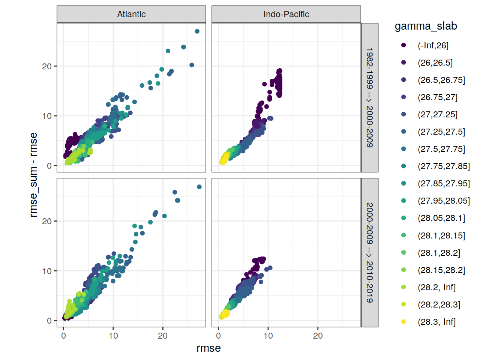
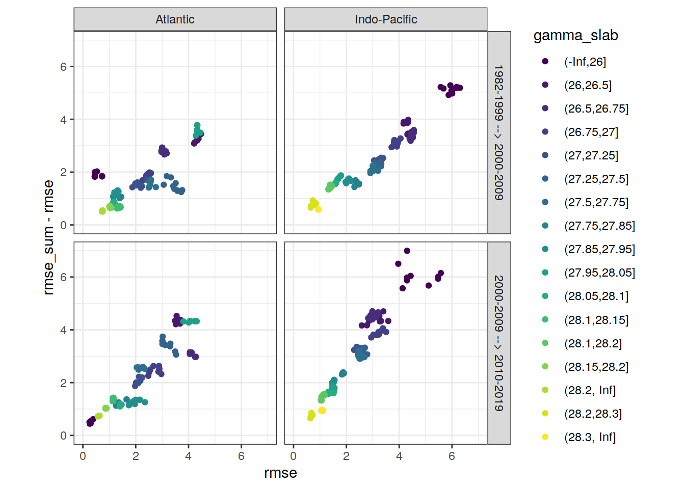
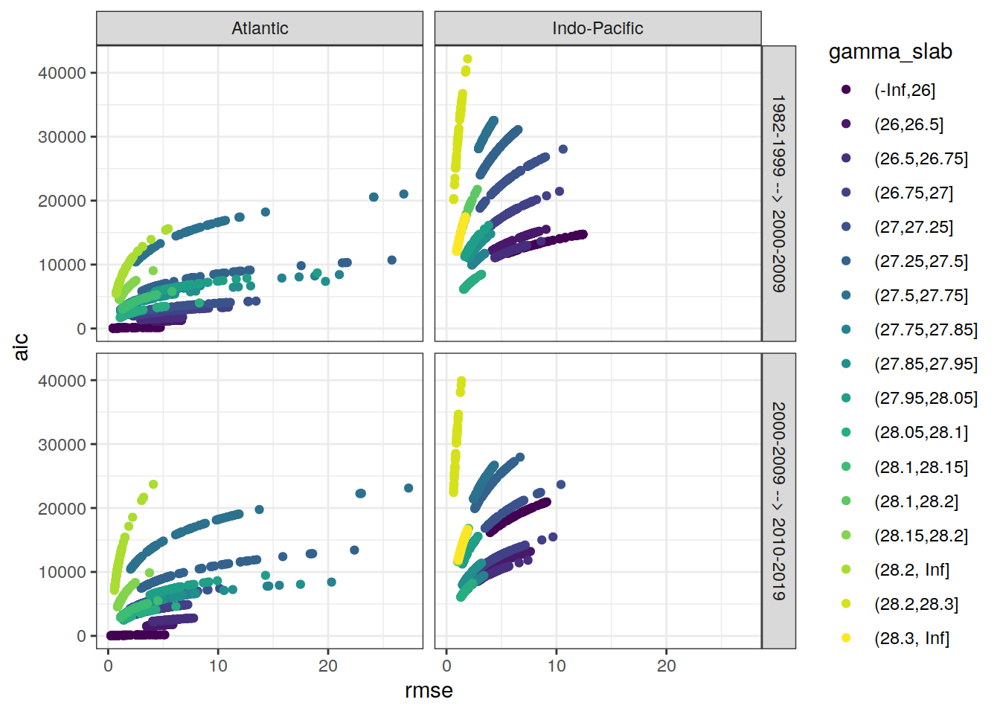
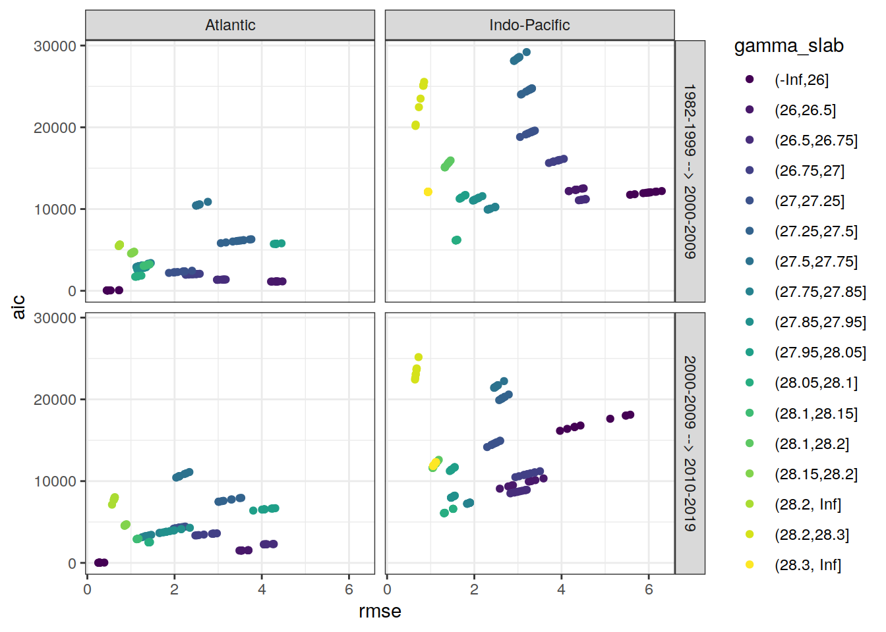

Last updated: 2021-06-06
Checks: 7 0
Knit directory: emlr_mod_v_XXX/
This reproducible R Markdown analysis was created with workflowr (version 1.6.2). The Checks tab describes the reproducibility checks that were applied when the results were created. The Past versions tab lists the development history.
Great! Since the R Markdown file has been committed to the Git repository, you know the exact version of the code that produced these results.
Great job! The global environment was empty. Objects defined in the global environment can affect the analysis in your R Markdown file in unknown ways. For reproduciblity it’s best to always run the code in an empty environment.
The command set.seed(20200707) was run prior to running the code in the R Markdown file. Setting a seed ensures that any results that rely on randomness, e.g. subsampling or permutations, are reproducible.
Great job! Recording the operating system, R version, and package versions is critical for reproducibility.
Nice! There were no cached chunks for this analysis, so you can be confident that you successfully produced the results during this run.
Great job! Using relative paths to the files within your workflowr project makes it easier to run your code on other machines.
Great! You are using Git for version control. Tracking code development and connecting the code version to the results is critical for reproducibility.
The results in this page were generated with repository version 6ecd057. See the Past versions tab to see a history of the changes made to the R Markdown and HTML files.
Note that you need to be careful to ensure that all relevant files for the analysis have been committed to Git prior to generating the results (you can use wflow_publish or wflow_git_commit). workflowr only checks the R Markdown file, but you know if there are other scripts or data files that it depends on. Below is the status of the Git repository when the results were generated:
Ignored files:
Ignored: .Rhistory
Ignored: .Rproj.user/
Untracked files:
Untracked: docs_GV_2020_standard/
Unstaged changes:
Modified: data/auxillary/params_local.rds
Note that any generated files, e.g. HTML, png, CSS, etc., are not included in this status report because it is ok for generated content to have uncommitted changes.
These are the previous versions of the repository in which changes were made to the R Markdown (analysis/eMLR_model_fitting.Rmd) and HTML (docs/eMLR_model_fitting.html) files. If you’ve configured a remote Git repository (see ?wflow_git_remote), click on the hyperlinks in the table below to view the files as they were in that past version.
| File | Version | Author | Date | Message |
|---|---|---|---|---|
| html | 5d8fa90 | Donghe-Zhu | 2021-06-06 | Build site. |
| html | dbe2a95 | Donghe-Zhu | 2021-05-28 | Build site. |
| html | d50b039 | Donghe-Zhu | 2021-05-28 | Build site. |
| html | 441ebe5 | Donghe-Zhu | 2021-05-28 | Build site. |
| html | 6262ad3 | Donghe-Zhu | 2021-05-28 | Build site. |
| html | a61aa77 | Donghe-Zhu | 2021-05-28 | Build site. |
| html | b8dbce4 | Donghe-Zhu | 2021-05-28 | Build site. |
| html | 94a833e | Donghe-Zhu | 2021-05-27 | Build site. |
| html | 5e0bd64 | Donghe-Zhu | 2021-05-27 | Build site. |
| html | af1eadd | Donghe-Zhu | 2021-05-27 | Build site. |
| html | 9179bfe | Donghe-Zhu | 2021-05-27 | Build site. |
| html | 28cbe5e | Donghe-Zhu | 2021-05-27 | Build site. |
| html | a618f02 | Donghe-Zhu | 2021-05-27 | Build site. |
| html | 4623e38 | Donghe-Zhu | 2021-05-27 | Build site. |
| html | b81bb49 | Donghe-Zhu | 2021-05-27 | Build site. |
| html | 951e188 | Donghe-Zhu | 2021-05-27 | Build site. |
| html | e377833 | Donghe-Zhu | 2021-05-26 | Build site. |
| Rmd | 896faa0 | Donghe-Zhu | 2021-05-18 | final |
| html | 2705a04 | Donghe-Zhu | 2021-03-28 | Build site. |
| html | cd5f759 | Donghe-Zhu | 2021-03-28 | Build site. |
| Rmd | 347fb44 | Donghe-Zhu | 2021-03-28 | local rebuild |
| html | 75dda4d | Donghe-Zhu | 2021-03-27 | Build site. |
| html | 0b19f6e | Donghe-Zhu | 2021-03-27 | Build site. |
| html | e2704ca | Donghe-Zhu | 2021-03-27 | Build site. |
| Rmd | b1706de | Donghe-Zhu | 2021-03-27 | local rebuild |
| html | 3061a0b | Donghe-Zhu | 2021-03-27 | Build site. |
| html | b883157 | Donghe-Zhu | 2021-03-27 | Build site. |
| html | 0c20513 | Donghe-Zhu | 2021-03-26 | Build site. |
| html | d19654d | Donghe-Zhu | 2021-03-26 | Build site. |
| Rmd | 921c9db | Donghe-Zhu | 2021-03-26 | local rebuild |
| html | 6c53dbf | Donghe-Zhu | 2021-03-25 | Build site. |
| Rmd | 195db95 | Donghe-Zhu | 2021-03-24 | local rebuild |
| html | 1914a11 | Donghe-Zhu | 2021-03-24 | Build site. |
| Rmd | e32af14 | Donghe-Zhu | 2021-03-24 | local rebuild |
| html | 8be810e | Donghe-Zhu | 2021-03-23 | Build site. |
| Rmd | 85274db | Donghe-Zhu | 2021-03-23 | local rebuild |
| html | bf19764 | Donghe-Zhu | 2021-03-22 | Build site. |
| html | 3ec9d3d | Donghe-Zhu | 2021-03-22 | Build site. |
| Rmd | 073fa6a | Donghe-Zhu | 2021-03-22 | local rebuild |
| html | 134ace1 | Donghe-Zhu | 2021-03-22 | Build site. |
| html | f6d70a4 | Donghe-Zhu | 2021-03-22 | Build site. |
| html | 183443b | Donghe-Zhu | 2021-03-21 | Build site. |
| Rmd | adca794 | Donghe-Zhu | 2021-03-21 | local rebuild |
| html | 2e6976b | Donghe-Zhu | 2021-03-21 | Build site. |
| Rmd | 4e7de35 | Donghe-Zhu | 2021-03-21 | local rebuild |
| html | 51a42bd | Donghe-Zhu | 2021-03-16 | Build site. |
| html | f745381 | Donghe-Zhu | 2021-03-16 | Build site. |
| html | aecbf75 | Donghe-Zhu | 2021-03-14 | Build site. |
| html | 1b2a0c2 | Donghe-Zhu | 2021-03-14 | Build site. |
| html | 6733e48 | Donghe-Zhu | 2021-03-12 | Build site. |
| html | ba71e6a | Donghe-Zhu | 2021-03-12 | Build site. |
| html | 9dbf5bd | Donghe-Zhu | 2021-03-11 | Build site. |
| html | a49df30 | Donghe-Zhu | 2021-03-11 | Build site. |
| html | b3348a5 | Donghe-Zhu | 2021-03-11 | Build site. |
| Rmd | 026c061 | Donghe-Zhu | 2021-03-11 | local rebuild |
| html | 1c24ff7 | Donghe-Zhu | 2021-03-10 | Build site. |
| Rmd | dbd8ff8 | Donghe-Zhu | 2021-03-10 | local rebuild |
| html | 94ce5a8 | Donghe-Zhu | 2021-03-10 | Build site. |
| html | db33928 | Donghe-Zhu | 2021-03-10 | Build site. |
| html | 3d1f470 | Donghe-Zhu | 2021-03-10 | Build site. |
| html | 9b7bc66 | Donghe-Zhu | 2021-03-10 | Build site. |
| Rmd | 498be1d | Donghe-Zhu | 2021-03-10 | local rebuild |
| html | 4168b43 | Donghe-Zhu | 2021-03-10 | Build site. |
| html | 5365f80 | Donghe-Zhu | 2021-03-10 | Build site. |
| html | 2b6c392 | Donghe-Zhu | 2021-03-10 | Build site. |
| html | 9f58753 | Donghe-Zhu | 2021-03-10 | Build site. |
| Rmd | e255177 | Donghe-Zhu | 2021-03-10 | local rebuild |
| html | f2a7146 | Donghe-Zhu | 2021-03-10 | Build site. |
| html | fd528ed | Donghe-Zhu | 2021-03-10 | Build site. |
| html | 9d5a62c | Donghe-Zhu | 2021-03-10 | Build site. |
| Rmd | 09b27ef | Donghe-Zhu | 2021-03-10 | local rebuild |
| html | 5d1e70b | Donghe-Zhu | 2021-03-10 | Build site. |
| Rmd | 6125b2d | Donghe-Zhu | 2021-03-10 | local rebuild |
| html | 2093979 | Donghe-Zhu | 2021-03-10 | Build site. |
| Rmd | 558d285 | Donghe-Zhu | 2021-03-10 | local rebuild |
| html | b865899 | Donghe-Zhu | 2021-03-10 | Build site. |
| html | cc2a956 | Donghe-Zhu | 2021-03-10 | Build site. |
| Rmd | 2a633bd | Donghe-Zhu | 2021-03-10 | local rebuild |
| html | 60689fb | Donghe-Zhu | 2021-03-10 | Build site. |
| html | 9230b52 | Donghe-Zhu | 2021-03-10 | Build site. |
| html | dba33c8 | Donghe-Zhu | 2021-03-09 | Build site. |
| Rmd | 6a60e02 | Donghe-Zhu | 2021-03-09 | local rebuild |
| html | 17f1c4a | Donghe-Zhu | 2021-03-09 | Build site. |
| Rmd | 4a4a400 | Donghe-Zhu | 2021-03-09 | local rebuild |
| html | c024d1a | Donghe-Zhu | 2021-03-09 | Build site. |
| Rmd | 34744ec | Donghe-Zhu | 2021-03-09 | local rebuild |
| html | 02f7242 | Donghe-Zhu | 2021-03-09 | Build site. |
| html | 6f50bc6 | Donghe-Zhu | 2021-03-09 | Build site. |
| Rmd | 88f0729 | Donghe-Zhu | 2021-03-09 | local rebuild |
| html | 1691156 | Donghe-Zhu | 2021-03-08 | Build site. |
| html | c0ceaf8 | Donghe-Zhu | 2021-03-08 | Build site. |
| html | 058e0a1 | Donghe-Zhu | 2021-03-08 | Build site. |
| html | 112dea0 | Donghe-Zhu | 2021-03-08 | Build site. |
| html | 1843412 | Donghe-Zhu | 2021-03-08 | Build site. |
| Rmd | d709f6c | Donghe-Zhu | 2021-03-08 | local rebuild |
| html | 65b0cef | Donghe-Zhu | 2021-03-07 | Build site. |
| html | 4083a6c | Donghe-Zhu | 2021-03-07 | Build site. |
| html | 3fbbfa4 | Donghe-Zhu | 2021-03-07 | Build site. |
| html | 627c8fb | Donghe-Zhu | 2021-03-07 | Build site. |
| html | 3607f4d | Donghe-Zhu | 2021-03-07 | Build site. |
| html | 9ef3222 | Donghe-Zhu | 2021-03-05 | Build site. |
| Rmd | 2be54f9 | Donghe-Zhu | 2021-03-05 | local rebuild |
| html | 8c1e978 | Donghe-Zhu | 2021-03-05 | Build site. |
| html | 865f68c | Donghe-Zhu | 2021-03-05 | Build site. |
| html | ee69bc1 | Donghe-Zhu | 2021-03-05 | Build site. |
| html | a79291f | Donghe-Zhu | 2021-03-05 | Build site. |
| html | e8c6f30 | Donghe-Zhu | 2021-03-04 | Build site. |
| html | 59288fe | Donghe-Zhu | 2021-03-04 | Build site. |
| html | 731abc8 | Donghe-Zhu | 2021-03-04 | Build site. |
| html | e2a5a33 | Donghe-Zhu | 2021-03-04 | Build site. |
| html | c7892c1 | Donghe-Zhu | 2021-03-04 | Build site. |
| html | 924430b | Donghe-Zhu | 2021-03-03 | Build site. |
| html | 0d0bca1 | Donghe-Zhu | 2021-03-03 | Build site. |
| html | cb63c16 | Donghe-Zhu | 2021-03-03 | Build site. |
| html | ffda45a | Donghe-Zhu | 2021-03-03 | Build site. |
| html | 691ba81 | Donghe-Zhu | 2021-03-03 | Build site. |
| html | c5e45a2 | Donghe-Zhu | 2021-03-03 | Build site. |
| html | 89c3e58 | Donghe-Zhu | 2021-03-03 | Build site. |
| html | c407a50 | Donghe-Zhu | 2021-03-03 | Build site. |
| html | c911669 | Donghe-Zhu | 2021-03-03 | Build site. |
| Rmd | e1f9d21 | Donghe-Zhu | 2021-03-03 | local rebuild |
| html | b71c719 | Donghe-Zhu | 2021-03-01 | Build site. |
| html | 13666ca | Donghe-Zhu | 2021-03-01 | Build site. |
| Rmd | c3195f4 | Donghe-Zhu | 2021-03-01 | local rebuild |
| html | c6e60fe | Donghe-Zhu | 2021-03-01 | Build site. |
| Rmd | 8ef147d | Donghe-Zhu | 2021-03-01 | local rebuild |
| html | 7a388f7 | Donghe-Zhu | 2021-03-01 | Build site. |
| html | 799e913 | Donghe-Zhu | 2021-03-01 | Build site. |
| Rmd | aa780a7 | Donghe-Zhu | 2021-03-01 | local rebuild |
| html | 66ff99f | Donghe-Zhu | 2021-03-01 | Build site. |
| html | ac9bb7a | Donghe-Zhu | 2021-02-28 | Build site. |
| html | efdc047 | Donghe-Zhu | 2021-02-28 | Build site. |
| html | e9a7418 | Donghe-Zhu | 2021-02-28 | Build site. |
| Rmd | eac1b0e | Donghe-Zhu | 2021-02-28 | local rebuild |
| html | e152917 | Donghe-Zhu | 2021-02-28 | Build site. |
| html | feb991c | Donghe-Zhu | 2021-02-27 | Build site. |
| Rmd | 4563314 | Donghe-Zhu | 2021-02-27 | local rebuild |
| html | 287123c | Donghe-Zhu | 2021-02-27 | Build site. |
| Rmd | 764a9c2 | Donghe-Zhu | 2021-02-27 | local rebuild |
| html | 54d5b5b | Donghe-Zhu | 2021-02-27 | Build site. |
| Rmd | 2e836bf | Donghe-Zhu | 2021-02-27 | local rebuild |
| html | 330f064 | Donghe-Zhu | 2021-02-27 | Build site. |
| Rmd | f360282 | Donghe-Zhu | 2021-02-27 | local rebuild |
| html | adbc9bc | Donghe-Zhu | 2021-02-27 | Build site. |
| Rmd | a8a8f9c | Donghe-Zhu | 2021-02-27 | local rebuild |
| html | 5937141 | Donghe-Zhu | 2021-02-27 | Build site. |
| Rmd | 5f0bfca | Donghe-Zhu | 2021-02-27 | local rebuild |
| html | 4414bbf | Donghe-Zhu | 2021-02-27 | Build site. |
| html | a265efb | Donghe-Zhu | 2021-02-27 | Build site. |
| html | 19edd1e | Donghe-Zhu | 2021-02-27 | Build site. |
| Rmd | 1ae5bb4 | Donghe-Zhu | 2021-02-27 | local rebuild |
| html | f20483f | Donghe-Zhu | 2021-02-26 | Build site. |
| html | 6a2c7b3 | Donghe-Zhu | 2021-02-25 | Build site. |
| html | 02b976d | Donghe-Zhu | 2021-02-24 | Build site. |
| html | 354c224 | Donghe-Zhu | 2021-02-24 | Build site. |
| Rmd | d910d39 | Donghe-Zhu | 2021-02-24 | local rebuild |
| html | 1a0a88a | Donghe-Zhu | 2021-02-24 | Build site. |
| Rmd | 663e891 | Donghe-Zhu | 2021-02-24 | local rebuild |
| html | 57f701e | Donghe-Zhu | 2021-02-24 | Build site. |
| html | 06f3149 | Donghe-Zhu | 2021-02-16 | Build site. |
| html | 401eab3 | Donghe-Zhu | 2021-02-15 | Build site. |
| html | e3bba84 | Donghe-Zhu | 2021-02-15 | Build site. |
| html | 5dce4b1 | Donghe-Zhu | 2021-02-15 | Build site. |
| Rmd | 35b0f2e | Donghe-Zhu | 2021-02-15 | local rebuild |
| html | 4469a0c | Donghe-Zhu | 2021-02-13 | Build site. |
| Rmd | 8186d57 | Donghe-Zhu | 2021-02-10 | apply nr_obs |
| html | 5ae6a69 | Donghe-Zhu | 2021-02-10 | Build site. |
| Rmd | eeb6557 | Donghe-Zhu | 2021-02-10 | local rebuild |
| html | 05385dc | Donghe-Zhu | 2021-02-10 | Build site. |
| html | f791ae4 | Donghe-Zhu | 2021-02-09 | Build site. |
| html | f71ae34 | Donghe-Zhu | 2021-02-09 | Build site. |
| html | c011832 | Donghe-Zhu | 2021-02-09 | Build site. |
| html | a145fa7 | Donghe-Zhu | 2021-02-09 | Build site. |
| Rmd | 37a41c8 | Donghe-Zhu | 2021-02-09 | local rebuild |
| html | c344e42 | Donghe-Zhu | 2021-02-08 | Build site. |
| Rmd | 8f5fa79 | Donghe-Zhu | 2021-02-08 | local rebuild |
| html | 2f095d7 | Donghe-Zhu | 2021-02-07 | Build site. |
| html | 2305044 | Donghe-Zhu | 2021-02-07 | Build site. |
| Rmd | c3638c1 | Donghe-Zhu | 2021-02-07 | local rebuild |
| html | 1fad5f1 | Donghe-Zhu | 2021-02-07 | Build site. |
| html | ca03c39 | Donghe-Zhu | 2021-02-07 | Build site. |
| html | e2ffc14 | Donghe-Zhu | 2021-02-05 | Build site. |
| html | cd7c52c | Donghe-Zhu | 2021-02-04 | Build site. |
| Rmd | bcf91a8 | jens-daniel-mueller | 2021-02-04 | separate MLR tables, added plot residuals vs location |
| html | bcf84f4 | Donghe-Zhu | 2021-02-02 | Build site. |
| html | a518739 | Donghe-Zhu | 2021-02-01 | Build site. |
| html | 61666de | Donghe-Zhu | 2021-01-31 | Build site. |
| html | 865b582 | Donghe-Zhu | 2021-01-31 | Build site. |
| html | 3e68089 | Donghe-Zhu | 2021-01-31 | Build site. |
| html | ecf335c | Donghe-Zhu | 2021-01-31 | Build site. |
| html | a618965 | Donghe-Zhu | 2021-01-31 | Build site. |
| html | 59e006e | Donghe-Zhu | 2021-01-31 | Build site. |
| html | a1c8f87 | Donghe-Zhu | 2021-01-31 | Build site. |
| html | ae5c18f | Donghe-Zhu | 2021-01-31 | Build site. |
| html | b50fe52 | Donghe-Zhu | 2021-01-31 | Build site. |
| Rmd | ac99ae5 | jens-daniel-mueller | 2021-01-29 | code review |
| html | ac99ae5 | jens-daniel-mueller | 2021-01-29 | code review |
| html | b5bdcaf | Donghe-Zhu | 2021-01-29 | Build site. |
| Rmd | b234505 | Donghe-Zhu | 2021-01-29 | MLR approach across all depth |
| html | 442010d | Donghe-Zhu | 2021-01-29 | Build site. |
| Rmd | e67e7dd | Donghe-Zhu | 2021-01-29 | surface equilibrium approach across all latitudes irrespective of gamma |
| html | 372adf5 | Donghe-Zhu | 2021-01-29 | Build site. |
| html | af8788e | Donghe-Zhu | 2021-01-29 | Build site. |
| html | 21c91c9 | Donghe-Zhu | 2021-01-29 | Build site. |
| html | eded038 | Donghe-Zhu | 2021-01-29 | Build site. |
| html | 541d4dd | Donghe-Zhu | 2021-01-29 | Build site. |
| html | 6a75576 | Donghe-Zhu | 2021-01-28 | Build site. |
| html | 16fba40 | Donghe-Zhu | 2021-01-28 | Build site. |
| Rmd | aecf0c6 | Donghe-Zhu | 2021-01-28 | diagnostic ploting |
| Rmd | a02684e | Donghe-Zhu | 2021-01-28 | error |
| Rmd | 4584be9 | Donghe-Zhu | 2021-01-28 | latest |
| html | 12bc567 | Donghe-Zhu | 2021-01-27 | Build site. |
| html | ceed31b | Donghe-Zhu | 2021-01-27 | Build site. |
| html | 342402d | Donghe-Zhu | 2021-01-27 | Build site. |
| html | 5bad5c2 | Donghe-Zhu | 2021-01-27 | Build site. |
| Rmd | c2c9529 | Donghe-Zhu | 2021-01-27 | random subsetting based on lat |
| html | 61efb56 | Donghe-Zhu | 2021-01-25 | Build site. |
| html | 48f638e | Donghe-Zhu | 2021-01-25 | Build site. |
| html | c1cec47 | Donghe-Zhu | 2021-01-25 | Build site. |
| html | 05ffb0c | Donghe-Zhu | 2021-01-25 | Build site. |
| html | 8b97165 | Donghe-Zhu | 2021-01-25 | Build site. |
| html | c569946 | Donghe-Zhu | 2021-01-24 | Build site. |
| html | a2f0d56 | Donghe-Zhu | 2021-01-23 | Build site. |
| html | 28509fc | Donghe-Zhu | 2021-01-23 | Build site. |
| html | 4c28e4a | Donghe-Zhu | 2021-01-22 | Build site. |
| html | 24cc264 | jens-daniel-mueller | 2021-01-22 | cleaned /docs before creating copies |
| html | 88eb28f | Donghe-Zhu | 2021-01-21 | Build site. |
| html | 2679490 | Donghe-Zhu | 2021-01-21 | Build site. |
| html | 7891955 | Donghe-Zhu | 2021-01-21 | Build site. |
| html | d4cf1cb | Donghe-Zhu | 2021-01-21 | Build site. |
| Rmd | 167eeec | Donghe-Zhu | 2021-01-21 | surface DIC calculation with atmospheric equilibrium option |
| html | 1f3e5b6 | jens-daniel-mueller | 2021-01-20 | Build site. |
| html | 0e7bdf1 | jens-daniel-mueller | 2021-01-15 | cleaning template repository |
| html | 73cbef3 | jens-daniel-mueller | 2021-01-15 | Build site. |
| html | 4571843 | jens-daniel-mueller | 2021-01-14 | revision and html deleted for template copying |
| html | 23151cd | jens-daniel-mueller | 2021-01-14 | Build site. |
| html | b3564aa | jens-daniel-mueller | 2021-01-14 | Build site. |
| html | 8d032c3 | jens-daniel-mueller | 2021-01-14 | Build site. |
| html | 022871c | Donghe-Zhu | 2021-01-13 | Build site. |
| Rmd | d44f36f | Donghe-Zhu | 2021-01-13 | reorder analysis final |
| html | 17dee1d | jens-daniel-mueller | 2021-01-13 | Build site. |
| Rmd | 9e04fd7 | jens-daniel-mueller | 2021-01-13 | local rebuild after revision |
| html | a076226 | Donghe-Zhu | 2021-01-11 | Build site. |
| Rmd | 52eff18 | Donghe-Zhu | 2021-01-09 | Implemet model_run and subsetting |
| html | 7cdea0c | jens-daniel-mueller | 2021-01-06 | Build site. |
| Rmd | b5934dd | jens-daniel-mueller | 2021-01-06 | local rebuild after revision |
| html | fa85b93 | jens-daniel-mueller | 2021-01-06 | Build site. |
| html | e5cb81a | Donghe-Zhu | 2021-01-05 | Build site. |
| Rmd | 608cc45 | Donghe-Zhu | 2021-01-05 | modification of analysis |
| html | a499f10 | Donghe-Zhu | 2021-01-05 | Build site. |
| Rmd | 715bdb4 | Donghe-Zhu | 2021-01-02 | model modification |
| html | fb8a752 | Donghe-Zhu | 2020-12-23 | Build site. |
| Rmd | 82e3c9c | Donghe-Zhu | 2020-12-23 | first build after creating model template |
| html | 8fae0b2 | Donghe-Zhu | 2020-12-21 | Build site. |
| Rmd | 00a1322 | Donghe-Zhu | 2020-12-21 | first build after creating model template |
| Rmd | d73ae35 | Donghe-Zhu | 2020-12-21 | first version with lm error |
| html | c8b76b3 | jens-daniel-mueller | 2020-12-19 | Build site. |
| Rmd | b5fedce | jens-daniel-mueller | 2020-12-19 | first build after creating model template |
| Rmd | 8e8abf5 | Jens Müller | 2020-12-18 | Initial commit |
Required are:
GLODAP <-
read_csv(paste(path_version_data,
"GLODAPv2.2020_MLR_fitting_ready.csv",
sep = ""))Find all possible combinations of following considered predictor variables:
# the following code is a workaround to find all predictor combinations
# using the olsrr package and fit all models for one era, slab, and basin
i_basin <- unique(GLODAP$basin)[1]
i_era <- unique(GLODAP$era)[1]
# subset one basin and era for fitting
GLODAP_basin_era <- GLODAP %>%
filter(basin == i_basin, era == i_era)
i_gamma_slab <- unique(GLODAP_basin_era$gamma_slab)[1]
print(i_gamma_slab)
# subset one gamma slab
GLODAP_basin_era_slab <- GLODAP_basin_era %>%
filter(gamma_slab == i_gamma_slab)
# fit the full linear model, i.e. all predictor combinations
lm_full <- lm(paste(
params_local$MLR_target,
paste(params_local$MLR_predictors, collapse = " + "),
sep = " ~ "
),
data = GLODAP_basin_era_slab)
# fit linear models for all possible predictor combinations
# unfortunately, this functions does not provide model coefficients (yet)
lm_all <- ols_step_all_possible(lm_full)
# convert to tibble
lm_all <- as_tibble(lm_all)
# extract relevant columns and format model formula
lm_all <- lm_all %>%
select(n, predictors) %>%
mutate(lm_coeff = str_replace_all(predictors, " ", " + "),
lm_coeff = paste(params_local$MLR_target, "~", lm_coeff))
# remove certain predictor combinations
# lm_rm_ph <- lm_all %>%
# filter(str_detect(lm_coeff, "phosphate_star")) %>%
# mutate(lm_coeff_filter = str_remove(lm_coeff, "phosphate_star")) %>%
# filter(
# str_detect(lm_coeff_filter, "oxygen") &
# str_detect(lm_coeff_filter, "phosphate")
# )
# lm_rm_si <- lm_all %>%
# filter(str_detect(lm_coeff, "silicate_star")) %>%
# mutate(lm_coeff_filter = str_remove(lm_coeff, "silicate_star")) %>%
# filter(str_detect(lm_coeff_filter, "silicate"))
# lm_rm_o2 <- lm_all %>%
# filter(str_detect(lm_coeff, "phosphate_star")) %>%
# mutate(lm_coeff_filter = str_remove(lm_coeff, "phosphate_star")) %>%
# filter(
# str_detect(lm_coeff_filter, "phosphate") &
# str_detect(lm_coeff_filter, "oxygen")
# )
# lm_rm <- bind_rows(lm_rm_ph, lm_rm_o2) %>%
# select(-lm_coeff_filter) %>%
# unique()
# lm_rm <- lm_rm_ph %>%
# select(-lm_coeff_filter) %>%
# unique()
#
# lm_all <- anti_join(lm_all, lm_rm)
# remove temp sal predictor combination
# lm_all <- lm_all %>%
# # filter(!(
# # str_detect(lm_coeff, "temp") &
# # str_detect(lm_coeff, "phosphate_star")
# # )) %>%
# mutate(lm_coeff_filter = str_remove(lm_coeff, "phosphate_star")) %>%
# filter(!(str_detect(lm_coeff_filter, "nitrate") &
# str_detect(lm_coeff_filter, "phosphate")
# )) %>%
# filter(!(
# str_detect(lm_coeff_filter, "temp") &
# str_detect(lm_coeff_filter, "sal")
# )) %>%
# # filter(!(
# # str_detect(lm_coeff_filter, "oxygen") &
# # str_detect(lm_coeff_filter, "aou")
# # )) %>%
# select(-lm_coeff_filter)
# remove helper objects
rm(
i_gamma_slab,
i_era,
i_basin,
GLODAP_basin_era,
GLODAP_basin_era_slab,
lm_full,
lm_rm_ph,
lm_rm_si,
lm_rm_o2,
lm_rm
)
# lm_full <- lm(paste(
# params_local$MLR_target,
# paste(params_local$MLR_predictors, collapse = " + "),
# sep = " ~ "
# ),
# data = GLODAP_basin_era_slab)
#
# lm_full <-
# loess(
# cstar_tref ~ sal + temp + aou + phosphate,
# span = 0.1,
# degree = 1,
# data = GLODAP_basin_era_slab
# )Select combinations with a total number of predictors in the range:
lm_all <- lm_all %>%
filter(n >= params_local$MLR_predictors_min,
n <= params_local$MLR_predictors_max)This results in a total number of MLR models of:
Individual linear regression models were fitted for the chosen target variable:
as a function of each predictor combination. Fitting was performed separately within each basin, era, and slab. Model diagnostics, such as the root mean squared error (RMSE), were calculated for each fitted model.
# loop across all basins, era, gamma slabs, and MLRs
# fit all MLR models
for (i_basin in unique(GLODAP$basin)) {
for (i_era in unique(GLODAP$era)) {
#i_basin <- unique(GLODAP$basin)[1]
#i_era <- unique(GLODAP$era)[1]
print(i_basin)
print(i_era)
GLODAP_basin_era <- GLODAP %>%
filter(basin == i_basin, era == i_era)
for (i_gamma_slab in unique(GLODAP_basin_era$gamma_slab)) {
#i_gamma_slab <- unique(GLODAP_basin_era$gamma_slab)[1]
print(i_gamma_slab)
GLODAP_basin_era_slab <- GLODAP_basin_era %>%
filter(gamma_slab == i_gamma_slab)
# number of observations used for each fitting model
i_nr_obs = nrow(GLODAP_basin_era_slab)
for (i_predictors in unique(lm_all$predictors)) {
#i_predictors <- unique(lm_all$predictors)[100]
# extract one model definition
i_lm <- lm_all %>%
filter(predictors == i_predictors) %>%
select(lm_coeff) %>%
pull()
# extract number of predictors
i_n_predictors <- lm_all %>%
filter(predictors == i_predictors) %>%
select(n) %>%
pull()
if (i_nr_obs > i_n_predictors) {
# fit model
if (params_local$MLR_type == "rlm") {
i_lm_fit <- MASS::rlm(as.formula(i_lm),
data = GLODAP_basin_era_slab)
}
if (params_local$MLR_type == "lm") {
i_lm_fit <- lm(as.formula(i_lm),
data = GLODAP_basin_era_slab)
}
# find max predictor correlation
i_cor_max <- GLODAP_basin_era_slab %>%
select(!!!syms(str_split(i_predictors, " ",
simplify = TRUE))) %>%
correlate(quiet = TRUE) %>%
select(-term) %>%
abs() %>%
max(na.rm = TRUE)
# calculate root mean squared error
i_rmse <- sqrt(c(crossprod(i_lm_fit$residuals)) /
length(i_lm_fit$residuals))
# calculate maximum residual
i_resid_max <- max(abs(i_lm_fit$residuals))
# calculate Akaike information criterion aic
i_aic <- AIC(i_lm_fit)
# calculate max VIF
if (is.na(max(i_lm_fit$coefficients))){
i_vif_max <- as.double("NA")
} else{
i_vif_max <- max(vif(i_lm_fit))
}
# collect model coefficients and diagnostics
coefficients <- tidy(i_lm_fit)
coefficients <- coefficients %>%
mutate(
basin = i_basin,
era = i_era,
gamma_slab = i_gamma_slab,
model = i_lm,
nr_obs = i_nr_obs,
rmse = i_rmse,
aic = i_aic,
vif_max = i_vif_max,
resid_max = i_resid_max,
n_predictors = i_n_predictors,
na_predictor = anyNA(coefficients$estimate),
cor_max = i_cor_max
)
if (exists("lm_all_fitted")) {
lm_all_fitted <- bind_rows(lm_all_fitted, coefficients)
}
if (!exists("lm_all_fitted")) {
lm_all_fitted <- coefficients
}
}
}
}
}
}
rm(
i_lm_fit,
coefficients,
i_rmse,
GLODAP_basin_era,
GLODAP_basin_era_slab,
i_lm,
i_basin,
i_era,
i_gamma_slab,
i_nr_obs,
i_predictors,
i_aic,
i_vif_max,
i_n_predictors,
i_resid_max
)Coefficients are prepared for the mapping of Cant and the chosen target variable.
# lm_all_fitted <- lm_all_fitted_1
# lm_all_fitted <-
# read_csv(paste(path_version_data,
# "lm_all_fitted.csv",
# sep = ""))
# select relevant columns
lm_all_fitted <- lm_all_fitted %>%
select(
basin,
gamma_slab,
era,
model,
nr_obs,
n_predictors,
term,
estimate,
rmse,
aic,
vif_max,
resid_max,
na_predictor,
cor_max
)
# set coefficient to zero if not fitted (=NA)
lm_all_fitted <- lm_all_fitted %>%
mutate(estimate = if_else(is.na(estimate), 0, estimate))
# Prepare model coefficients for mapping of target variable
lm_all_fitted_wide <- lm_all_fitted %>%
pivot_wider(
values_from = estimate,
names_from = term,
names_prefix = "coeff_",
values_fill = 0
)Within each basin and slab, the following number of best linear regression models was selected:
The criterion used to select the best models was:
The criterion was summed up for two adjacent eras, and the models with lowest summed values were selected.
Please note, that currently the lm() function produces NAs for some predictors. It is not yet entirely clear when this happens, but presumably it is caused by some form of collinearity between predictors, such that including another predictor does not help to explain the target variable any better. The issues also expresses as exactly identical rmse values of different models. As an interim solution, models with fitted NA predictors were not included.
# remove models with predictors fitted as NA
lm_all_fitted_wide <- lm_all_fitted_wide %>%
filter(na_predictor == FALSE)To avoid multicollinearity among predictors, models were excluded with a VIF above:
After removing models affected by multicollinearity, the targeted number of MLRs (10) was undercut in following fitting units:
# remove models with predictors fitted as NA
lm_all_fitted_wide <- lm_all_fitted_wide %>%
filter(vif_max <= params_local$vif_max)
# lm_all_fitted_wide_check <- lm_all_fitted_wide %>%
# group_by(era, basin, gamma_slab) %>%
# count()
# filter(n < params_local$MLR_number)# calculate RMSE sum for adjacent eras
lm_all_fitted_wide_eras <- lm_all_fitted_wide %>%
select(basin, gamma_slab, n_predictors, model, era, nr_obs, rmse, aic, vif_max, resid_max) %>%
arrange(era) %>%
group_by(basin, gamma_slab, model) %>%
mutate(
eras = paste(lag(era), era, sep = " --> "),
rmse_sum = rmse + lag(rmse),
rmse_lag = lag(rmse),
aic_sum = aic + lag(aic),
vif_max_sum = vif_max + lag(vif_max)
) %>%
ungroup() %>%
select(-c(era)) %>%
drop_na() %>%
filter(eras != "1982-1999 --> 2010-2019",
eras != "1982-1999 --> 2008-2019")
#filter tripairs
lm_all_fitted_wide_eras <- lm_all_fitted_wide_eras %>%
mutate(rmse = round(rmse, digits = 7), rmse_lag = round(rmse_lag, digits = 7)) %>%
group_by(basin, gamma_slab, eras, rmse) %>%
sample_n(1) %>%
ungroup()
# calculate rank for each era
lm_all_fitted_wide_eras <- lm_all_fitted_wide_eras %>%
group_by(eras, basin, gamma_slab) %>%
mutate(rank = rank(rmse, ties.method="first"),
rank_sum = rank + rank(rmse_lag, ties.method="first")) %>%
ungroup()
# subset models with lowest summed criterion
# chose which criterion is applied
if (params_local$MLR_criterion == "aic") {
lm_best <- lm_all_fitted_wide_eras %>%
group_by(basin, gamma_slab, eras) %>%
slice_min(order_by = aic_sum,
with_ties = FALSE,
n = params_local$MLR_number) %>%
ungroup() %>%
arrange(basin, gamma_slab, eras, aic_sum)
} else if (params_local$MLR_criterion == "rmse") {
lm_best <- lm_all_fitted_wide_eras %>%
group_by(basin, gamma_slab, eras) %>%
slice_min(order_by = rmse_sum,
with_ties = FALSE,
n = params_local$MLR_number) %>%
ungroup() %>%
arrange(basin, gamma_slab, eras, rmse_sum)
} else {
lm_best <- lm_all_fitted_wide_eras %>%
group_by(basin, gamma_slab, eras) %>%
slice_min(order_by = rank_sum,
with_ties = FALSE,
n = params_local$MLR_number) %>%
ungroup() %>%
arrange(basin, gamma_slab, eras, rank_sum)
}lm_best %>%
kable() %>%
add_header_above() %>%
kable_styling() %>%
scroll_box(width = "100%", height = "400px")| basin | gamma_slab | n_predictors | model | nr_obs | rmse | aic | vif_max | resid_max | eras | rmse_sum | rmse_lag | aic_sum | vif_max_sum | rank | rank_sum |
|---|---|---|---|---|---|---|---|---|---|---|---|---|---|---|---|
| Atlantic | (-Inf,26] | 5 | cstar_tref ~ sal + temp + nitrate + silicate + phosphate_star | 26 | 0.4450286 | 45.68473 | 39.503284 | 1.0682985 | 1982-1999 –> 2000-2009 | 2.2784176 | 1.8333891 | 270.29562 | 50.698663 | 1 | 3 |
| Atlantic | (-Inf,26] | 5 | cstar_tref ~ sal + temp + silicate + phosphate + phosphate_star | 26 | 0.4584940 | 47.23478 | 24.216078 | 1.1190183 | 1982-1999 –> 2000-2009 | 2.2860715 | 1.8275775 | 271.51549 | 33.466290 | 3 | 4 |
| Atlantic | (-Inf,26] | 5 | cstar_tref ~ sal + temp + aou + silicate + phosphate_star | 26 | 0.4584876 | 47.23406 | 39.421855 | 1.1189189 | 1982-1999 –> 2000-2009 | 2.2947015 | 1.8362140 | 272.00507 | 49.769859 | 2 | 6 |
| Atlantic | (-Inf,26] | 5 | cstar_tref ~ sal + temp + aou + silicate + phosphate | 26 | 0.4589059 | 47.28148 | 89.383082 | 1.1203109 | 1982-1999 –> 2000-2009 | 2.3155101 | 1.8566042 | 273.20099 | 112.661254 | 5 | 11 |
| Atlantic | (-Inf,26] | 5 | cstar_tref ~ sal + temp + nitrate + silicate + phosphate | 26 | 0.4678743 | 48.28791 | 58.089036 | 1.5811594 | 1982-1999 –> 2000-2009 | 2.4153823 | 1.9475080 | 279.17878 | 131.125609 | 7 | 18 |
| Atlantic | (-Inf,26] | 5 | cstar_tref ~ sal + aou + silicate + phosphate + phosphate_star | 26 | 0.4612966 | 47.55167 | 287.575449 | 1.1237758 | 1982-1999 –> 2000-2009 | 2.4644429 | 2.0031463 | 281.37206 | 355.807329 | 6 | 19 |
| Atlantic | (-Inf,26] | 5 | cstar_tref ~ sal + temp + aou + nitrate + silicate | 26 | 0.5013115 | 51.87737 | 85.193922 | 1.3009263 | 1982-1999 –> 2000-2009 | 2.5012093 | 1.9998978 | 285.52897 | 251.141574 | 8 | 20 |
| Atlantic | (-Inf,26] | 4 | cstar_tref ~ sal + temp + aou + silicate | 26 | 0.5336323 | 53.12630 | 20.397873 | 1.1898626 | 1982-1999 –> 2000-2009 | 2.5579229 | 2.0242906 | 286.03872 | 26.502074 | 10 | 25 |
| Atlantic | (-Inf,26] | 5 | cstar_tref ~ sal + temp + nitrate + phosphate + phosphate_star | 26 | 0.7265098 | 71.17063 | 49.048599 | 2.6740539 | 1982-1999 –> 2000-2009 | 2.5603198 | 1.8338100 | 295.80540 | 63.944583 | 12 | 15 |
| Atlantic | (-Inf,26] | 5 | cstar_tref ~ sal + temp + aou + nitrate + phosphate_star | 26 | 0.7278357 | 71.26545 | 49.388598 | 2.6800267 | 1982-1999 –> 2000-2009 | 2.5759784 | 1.8481427 | 296.70990 | 62.037710 | 13 | 18 |
| Atlantic | (-Inf,26] | 5 | cstar_tref ~ sal + temp + nitrate + silicate + phosphate_star | 26 | 0.2609157 | 17.91980 | 18.736726 | 0.6909568 | 2000-2009 –> 2010-2019 | 0.7059443 | 0.4450286 | 63.60453 | 58.240010 | 2 | 3 |
| Atlantic | (-Inf,26] | 5 | cstar_tref ~ sal + temp + silicate + phosphate + phosphate_star | 26 | 0.2749403 | 20.64233 | 15.863993 | 0.7285522 | 2000-2009 –> 2010-2019 | 0.7334343 | 0.4584940 | 67.87711 | 40.080071 | 5 | 8 |
| Atlantic | (-Inf,26] | 5 | cstar_tref ~ sal + temp + aou + silicate + phosphate_star | 26 | 0.2782978 | 21.27350 | 15.832456 | 0.7394145 | 2000-2009 –> 2010-2019 | 0.7367854 | 0.4584876 | 68.50756 | 55.254311 | 6 | 8 |
| Atlantic | (-Inf,26] | 5 | cstar_tref ~ sal + temp + aou + silicate + phosphate | 26 | 0.2790915 | 21.42158 | 79.710371 | 0.7403142 | 2000-2009 –> 2010-2019 | 0.7379973 | 0.4589059 | 68.70306 | 169.093453 | 7 | 12 |
| Atlantic | (-Inf,26] | 5 | cstar_tref ~ sal + temp + nitrate + silicate + phosphate | 26 | 0.2727615 | 20.22861 | 79.638885 | 0.6440915 | 2000-2009 –> 2010-2019 | 0.7406358 | 0.4678743 | 68.51653 | 137.727922 | 3 | 10 |
| Atlantic | (-Inf,26] | 5 | cstar_tref ~ sal + temp + aou + nitrate + silicate | 26 | 0.2506018 | 15.82252 | 127.868061 | 0.4743830 | 2000-2009 –> 2010-2019 | 0.7519133 | 0.5013115 | 67.69989 | 213.061983 | 1 | 9 |
| Atlantic | (-Inf,26] | 5 | cstar_tref ~ sal + aou + silicate + phosphate + phosphate_star | 26 | 0.2946619 | 24.24461 | 205.366279 | 0.7713187 | 2000-2009 –> 2010-2019 | 0.7559584 | 0.4612966 | 71.79628 | 492.941728 | 9 | 15 |
| Atlantic | (-Inf,26] | 4 | cstar_tref ~ sal + temp + nitrate + silicate | 26 | 0.2743139 | 18.52373 | 10.682350 | 0.7065044 | 2000-2009 –> 2010-2019 | 0.7756628 | 0.5013489 | 68.40498 | 29.455461 | 4 | 13 |
| Atlantic | (-Inf,26] | 4 | cstar_tref ~ sal + temp + aou + silicate | 26 | 0.2833559 | 20.21013 | 14.354360 | 0.7252885 | 2000-2009 –> 2010-2019 | 0.8169883 | 0.5336323 | 73.33643 | 34.752232 | 8 | 18 |
| Atlantic | (-Inf,26] | 4 | cstar_tref ~ sal + temp + silicate + phosphate | 26 | 0.3887163 | 36.64972 | 12.537425 | 0.8436407 | 2000-2009 –> 2010-2019 | 1.0028604 | 0.6141441 | 97.08319 | 31.415134 | 10 | 21 |
| Atlantic | (26,26.5] | 5 | cstar_tref ~ sal + aou + silicate + phosphate + phosphate_star | 195 | 4.2121666 | 1128.19712 | 188.345939 | 10.4631952 | 1982-1999 –> 2000-2009 | 7.2964370 | 3.0842703 | 2867.87909 | 493.944110 | 1 | 2 |
| Atlantic | (26,26.5] | 5 | cstar_tref ~ sal + aou + nitrate + phosphate + phosphate_star | 195 | 4.2358016 | 1130.37934 | 186.971373 | 9.5121560 | 1982-1999 –> 2000-2009 | 7.3628248 | 3.1270232 | 2879.39492 | 497.894100 | 2 | 4 |
| Atlantic | (26,26.5] | 5 | cstar_tref ~ sal + temp + aou + silicate + phosphate | 195 | 4.3050687 | 1136.70533 | 10.466403 | 10.9027558 | 1982-1999 –> 2000-2009 | 7.4929724 | 3.1879037 | 2898.79415 | 24.719389 | 3 | 6 |
| Atlantic | (26,26.5] | 5 | cstar_tref ~ sal + temp + aou + silicate + phosphate_star | 195 | 4.3272566 | 1138.71019 | 11.950683 | 11.0127213 | 1982-1999 –> 2000-2009 | 7.5347245 | 3.2074679 | 2904.94719 | 25.210442 | 4 | 8 |
| Atlantic | (26,26.5] | 5 | cstar_tref ~ sal + temp + silicate + phosphate + phosphate_star | 195 | 4.3360442 | 1139.50139 | 10.873913 | 10.9822045 | 1982-1999 –> 2000-2009 | 7.5511513 | 3.2151071 | 2907.35125 | 24.257380 | 5 | 10 |
| Atlantic | (26,26.5] | 5 | cstar_tref ~ sal + temp + aou + nitrate + phosphate | 195 | 4.3374769 | 1139.63023 | 11.471181 | 9.9260162 | 1982-1999 –> 2000-2009 | 7.5720102 | 3.2345332 | 2911.56434 | 27.904063 | 6 | 12 |
| Atlantic | (26,26.5] | 5 | cstar_tref ~ sal + temp + nitrate + silicate + phosphate_star | 195 | 4.3443157 | 1140.24465 | 11.989102 | 11.3072321 | 1982-1999 –> 2000-2009 | 7.5851708 | 3.2408551 | 2913.50260 | 25.655446 | 7 | 14 |
| Atlantic | (26,26.5] | 5 | cstar_tref ~ sal + temp + aou + nitrate + phosphate_star | 195 | 4.3511486 | 1140.85757 | 11.861712 | 10.0334319 | 1982-1999 –> 2000-2009 | 7.5962934 | 3.2451448 | 2915.01237 | 24.959606 | 8 | 16 |
| Atlantic | (26,26.5] | 5 | cstar_tref ~ sal + temp + nitrate + phosphate + phosphate_star | 195 | 4.3784146 | 1143.29384 | 10.459977 | 10.0170066 | 1982-1999 –> 2000-2009 | 7.6468844 | 3.2684698 | 2922.30444 | 25.092112 | 9 | 18 |
| Atlantic | (26,26.5] | 5 | cstar_tref ~ sal + temp + aou + nitrate + silicate | 195 | 4.4744559 | 1151.75609 | 68.662333 | 10.7896397 | 1982-1999 –> 2000-2009 | 7.9164457 | 3.4419897 | 2965.83812 | 121.421421 | 10 | 20 |
| Atlantic | (26,26.5] | 5 | cstar_tref ~ sal + aou + silicate + phosphate + phosphate_star | 280 | 3.5179481 | 1513.01720 | 349.014066 | 14.3863133 | 2000-2009 –> 2010-2019 | 7.7301147 | 4.2121666 | 2641.21432 | 537.360004 | 2 | 3 |
| Atlantic | (26,26.5] | 5 | cstar_tref ~ sal + temp + nitrate + silicate + phosphate_star | 280 | 3.4879104 | 1508.21515 | 12.514029 | 15.1596208 | 2000-2009 –> 2010-2019 | 7.8322261 | 4.3443157 | 2648.45980 | 24.503131 | 1 | 8 |
| Atlantic | (26,26.5] | 5 | cstar_tref ~ sal + temp + aou + silicate + phosphate | 280 | 3.5280245 | 1514.61891 | 12.518965 | 14.3935647 | 2000-2009 –> 2010-2019 | 7.8330932 | 4.3050687 | 2651.32424 | 22.985368 | 3 | 6 |
| Atlantic | (26,26.5] | 5 | cstar_tref ~ sal + temp + aou + silicate + phosphate_star | 280 | 3.5316531 | 1515.19457 | 12.323423 | 14.3791024 | 2000-2009 –> 2010-2019 | 7.8589096 | 4.3272566 | 2653.90476 | 24.274106 | 4 | 8 |
| Atlantic | (26,26.5] | 5 | cstar_tref ~ sal + temp + silicate + phosphate + phosphate_star | 280 | 3.5337546 | 1515.52770 | 11.324713 | 14.3625309 | 2000-2009 –> 2010-2019 | 7.8697988 | 4.3360442 | 2655.02908 | 22.198625 | 5 | 10 |
| Atlantic | (26,26.5] | 5 | cstar_tref ~ sal + aou + nitrate + phosphate + phosphate_star | 280 | 3.6791944 | 1538.11411 | 347.088778 | 12.9487717 | 2000-2009 –> 2010-2019 | 7.9149960 | 4.2358016 | 2668.49345 | 534.060151 | 18 | 20 |
| Atlantic | (26,26.5] | 5 | cstar_tref ~ sal + temp + aou + nitrate + phosphate | 280 | 3.6885346 | 1539.53396 | 13.055270 | 12.9504155 | 2000-2009 –> 2010-2019 | 8.0260115 | 4.3374769 | 2679.16419 | 24.526451 | 19 | 25 |
| Atlantic | (26,26.5] | 5 | cstar_tref ~ sal + temp + aou + nitrate + phosphate_star | 280 | 3.6904295 | 1539.82158 | 12.226428 | 12.9472472 | 2000-2009 –> 2010-2019 | 8.0415781 | 4.3511486 | 2680.67915 | 24.088140 | 20 | 28 |
| Atlantic | (26,26.5] | 5 | cstar_tref ~ sal + temp + nitrate + phosphate + phosphate_star | 280 | 3.6950679 | 1540.52498 | 11.515567 | 12.9230879 | 2000-2009 –> 2010-2019 | 8.0734825 | 4.3784146 | 2683.81881 | 21.975544 | 23 | 32 |
| Atlantic | (26,26.5] | 5 | cstar_tref ~ temp + aou + nitrate + silicate + phosphate_star | 280 | 3.5480863 | 1517.79428 | 195.779083 | 17.0800491 | 2000-2009 –> 2010-2019 | 8.0752334 | 4.5271471 | 2674.11617 | 346.400904 | 6 | 22 |
| Atlantic | (26.5,26.75] | 5 | cstar_tref ~ sal + temp + aou + silicate + phosphate | 266 | 2.9759262 | 1349.05073 | 18.738818 | 7.0393155 | 1982-1999 –> 2000-2009 | 5.7419127 | 2.7659865 | 3190.30265 | 51.168943 | 1 | 6 |
| Atlantic | (26.5,26.75] | 5 | cstar_tref ~ aou + nitrate + silicate + phosphate + phosphate_star | 266 | 3.0832651 | 1367.90151 | 100.099837 | 9.7437457 | 1982-1999 –> 2000-2009 | 5.7507884 | 2.6675234 | 3181.96826 | 314.010061 | 6 | 7 |
| Atlantic | (26.5,26.75] | 5 | cstar_tref ~ sal + temp + aou + silicate + phosphate_star | 266 | 2.9763191 | 1349.12095 | 19.519203 | 7.1250744 | 1982-1999 –> 2000-2009 | 5.7760658 | 2.7997468 | 3199.47158 | 52.246934 | 2 | 10 |
| Atlantic | (26.5,26.75] | 5 | cstar_tref ~ sal + temp + silicate + phosphate + phosphate_star | 266 | 2.9768698 | 1349.21938 | 19.142726 | 7.1462711 | 1982-1999 –> 2000-2009 | 5.7885455 | 2.8116757 | 3202.75877 | 52.022389 | 3 | 12 |
| Atlantic | (26.5,26.75] | 5 | cstar_tref ~ temp + aou + nitrate + silicate + phosphate | 266 | 3.1148181 | 1373.31814 | 46.482688 | 7.7324317 | 1982-1999 –> 2000-2009 | 5.8443928 | 2.7295747 | 3204.63140 | 113.215622 | 8 | 11 |
| Atlantic | (26.5,26.75] | 4 | cstar_tref ~ aou + silicate + phosphate + phosphate_star | 266 | 3.1720764 | 1381.00886 | 80.516790 | 7.8194486 | 1982-1999 –> 2000-2009 | 5.8827065 | 2.7106300 | 3205.09858 | 290.525594 | 16 | 18 |
| Atlantic | (26.5,26.75] | 5 | cstar_tref ~ temp + aou + nitrate + silicate + phosphate_star | 266 | 3.1295698 | 1375.83173 | 45.383851 | 7.7973121 | 1982-1999 –> 2000-2009 | 5.8943301 | 2.7647603 | 3216.75108 | 111.805304 | 9 | 13 |
| Atlantic | (26.5,26.75] | 5 | cstar_tref ~ sal + aou + nitrate + silicate + phosphate | 266 | 2.9959557 | 1352.61937 | 49.126420 | 8.6471002 | 1982-1999 –> 2000-2009 | 5.9234581 | 2.9275023 | 3236.43548 | 115.528387 | 4 | 16 |
| Atlantic | (26.5,26.75] | 5 | cstar_tref ~ temp + nitrate + silicate + phosphate + phosphate_star | 266 | 3.1428803 | 1378.08961 | 47.473573 | 7.9021141 | 1982-1999 –> 2000-2009 | 5.9291099 | 2.7862296 | 3224.81047 | 114.727245 | 14 | 21 |
| Atlantic | (26.5,26.75] | 4 | cstar_tref ~ sal + aou + silicate + phosphate | 266 | 3.0065134 | 1352.49082 | 7.766272 | 8.2809872 | 1982-1999 –> 2000-2009 | 5.9352142 | 2.9287008 | 3234.61392 | 28.492442 | 5 | 18 |
| Atlantic | (26.5,26.75] | 5 | cstar_tref ~ aou + nitrate + silicate + phosphate + phosphate_star | 399 | 4.0481592 | 2262.12624 | 381.785758 | 11.6682058 | 2000-2009 –> 2010-2019 | 7.1314243 | 3.0832651 | 3630.02775 | 481.885595 | 1 | 7 |
| Atlantic | (26.5,26.75] | 5 | cstar_tref ~ sal + temp + aou + nitrate + phosphate | 399 | 4.0497790 | 2262.44548 | 44.962488 | 11.1047560 | 2000-2009 –> 2010-2019 | 7.1990919 | 3.1493128 | 3641.62282 | 64.134007 | 2 | 17 |
| Atlantic | (26.5,26.75] | 5 | cstar_tref ~ sal + temp + aou + nitrate + phosphate_star | 399 | 4.0610781 | 2264.66883 | 45.580981 | 11.1620397 | 2000-2009 –> 2010-2019 | 7.2024003 | 3.1413222 | 3642.49464 | 65.213110 | 3 | 16 |
| Atlantic | (26.5,26.75] | 5 | cstar_tref ~ temp + aou + nitrate + silicate + phosphate | 399 | 4.0879171 | 2269.92534 | 99.351459 | 11.7699890 | 2000-2009 –> 2010-2019 | 7.2027352 | 3.1148181 | 3643.24348 | 145.834147 | 4 | 12 |
| Atlantic | (26.5,26.75] | 5 | cstar_tref ~ sal + temp + nitrate + phosphate + phosphate_star | 399 | 4.0887332 | 2270.08463 | 45.313911 | 11.3809634 | 2000-2009 –> 2010-2019 | 7.2207378 | 3.1320047 | 3646.33011 | 65.538863 | 5 | 16 |
| Atlantic | (26.5,26.75] | 5 | cstar_tref ~ sal + temp + aou + silicate + phosphate | 399 | 4.2468642 | 2300.36529 | 39.355075 | 13.1771635 | 2000-2009 –> 2010-2019 | 7.2227904 | 2.9759262 | 3649.41602 | 58.093893 | 13 | 14 |
| Atlantic | (26.5,26.75] | 5 | cstar_tref ~ temp + aou + nitrate + silicate + phosphate_star | 399 | 4.1025726 | 2272.78112 | 98.946009 | 11.7994935 | 2000-2009 –> 2010-2019 | 7.2321424 | 3.1295698 | 3648.61285 | 144.329860 | 6 | 15 |
| Atlantic | (26.5,26.75] | 5 | cstar_tref ~ sal + temp + aou + silicate + phosphate_star | 399 | 4.2695196 | 2304.61100 | 39.730218 | 13.3064103 | 2000-2009 –> 2010-2019 | 7.2458386 | 2.9763191 | 3653.73195 | 59.249421 | 15 | 17 |
| Atlantic | (26.5,26.75] | 5 | cstar_tref ~ sal + temp + silicate + phosphate + phosphate_star | 399 | 4.2741491 | 2305.47581 | 39.815790 | 13.3246836 | 2000-2009 –> 2010-2019 | 7.2510189 | 2.9768698 | 3654.69519 | 58.958516 | 16 | 19 |
| Atlantic | (26.5,26.75] | 5 | cstar_tref ~ temp + nitrate + silicate + phosphate + phosphate_star | 399 | 4.1174451 | 2275.66876 | 99.792980 | 11.8960769 | 2000-2009 –> 2010-2019 | 7.2603254 | 3.1428803 | 3653.75837 | 147.266553 | 8 | 22 |
| Atlantic | (26.75,27] | 5 | cstar_tref ~ aou + nitrate + silicate + phosphate + phosphate_star | 437 | 2.2563607 | 1965.37256 | 138.502939 | 6.7544677 | 1982-1999 –> 2000-2009 | 3.9467597 | 1.6903990 | 5000.19804 | 312.387066 | 1 | 2 |
| Atlantic | (26.75,27] | 4 | cstar_tref ~ aou + silicate + phosphate + phosphate_star | 437 | 2.3258848 | 1989.89614 | 86.902743 | 10.1912322 | 1982-1999 –> 2000-2009 | 4.0464360 | 1.7205512 | 5050.19648 | 247.262753 | 2 | 4 |
| Atlantic | (26.75,27] | 5 | cstar_tref ~ temp + aou + nitrate + silicate + phosphate | 437 | 2.3904831 | 2015.83934 | 87.195481 | 6.1759019 | 1982-1999 –> 2000-2009 | 4.2399778 | 1.8494947 | 5190.44376 | 141.523829 | 3 | 6 |
| Atlantic | (26.75,27] | 5 | cstar_tref ~ sal + temp + aou + silicate + phosphate | 437 | 2.4136640 | 2024.27382 | 40.322144 | 9.4271827 | 1982-1999 –> 2000-2009 | 4.2924413 | 1.8787773 | 5223.28960 | 83.809454 | 4 | 8 |
| Atlantic | (26.75,27] | 5 | cstar_tref ~ temp + aou + nitrate + silicate + phosphate_star | 437 | 2.4414961 | 2034.29431 | 85.380464 | 5.9087131 | 1982-1999 –> 2000-2009 | 4.3637303 | 1.9222341 | 5268.84532 | 139.575360 | 5 | 11 |
| Atlantic | (26.75,27] | 4 | cstar_tref ~ temp + aou + silicate + phosphate | 437 | 2.5022807 | 2053.78734 | 16.221759 | 10.6705256 | 1982-1999 –> 2000-2009 | 4.3866544 | 1.8843737 | 5255.42523 | 44.900757 | 8 | 13 |
| Atlantic | (26.75,27] | 5 | cstar_tref ~ sal + temp + aou + silicate + phosphate_star | 437 | 2.4901171 | 2051.52846 | 40.438819 | 9.5746019 | 1982-1999 –> 2000-2009 | 4.4450789 | 1.9549618 | 5312.31493 | 84.060531 | 6 | 13 |
| Atlantic | (26.75,27] | 5 | cstar_tref ~ temp + nitrate + silicate + phosphate + phosphate_star | 437 | 2.4936948 | 2052.78330 | 89.866240 | 6.1766706 | 1982-1999 –> 2000-2009 | 4.4554475 | 1.9617527 | 5318.95848 | 144.428984 | 7 | 16 |
| Atlantic | (26.75,27] | 5 | cstar_tref ~ sal + temp + silicate + phosphate + phosphate_star | 437 | 2.5198585 | 2061.90546 | 40.415520 | 9.5823668 | 1982-1999 –> 2000-2009 | 4.5064895 | 1.9866311 | 5347.66413 | 84.053538 | 9 | 19 |
| Atlantic | (26.75,27] | 4 | cstar_tref ~ temp + aou + silicate + phosphate_star | 437 | 2.5762166 | 2079.23761 | 3.425530 | 10.8121253 | 1982-1999 –> 2000-2009 | 4.5370931 | 1.9608765 | 5342.71859 | 7.456456 | 10 | 18 |
| Atlantic | (26.75,27] | 5 | cstar_tref ~ aou + nitrate + silicate + phosphate + phosphate_star | 718 | 2.4769462 | 3354.08566 | 367.130080 | 8.0320187 | 2000-2009 –> 2010-2019 | 4.7333068 | 2.2563607 | 5319.45823 | 505.633019 | 1 | 2 |
| Atlantic | (26.75,27] | 5 | cstar_tref ~ temp + aou + nitrate + silicate + phosphate | 718 | 2.5100961 | 3373.17672 | 91.218577 | 8.2219439 | 2000-2009 –> 2010-2019 | 4.9005792 | 2.3904831 | 5389.01605 | 178.414059 | 2 | 5 |
| Atlantic | (26.75,27] | 5 | cstar_tref ~ temp + aou + nitrate + silicate + phosphate_star | 718 | 2.5228723 | 3380.46734 | 90.238087 | 8.2625661 | 2000-2009 –> 2010-2019 | 4.9643684 | 2.4414961 | 5414.76165 | 175.618551 | 3 | 8 |
| Atlantic | (26.75,27] | 5 | cstar_tref ~ temp + nitrate + silicate + phosphate + phosphate_star | 718 | 2.5532499 | 3397.65479 | 94.418509 | 8.4070927 | 2000-2009 –> 2010-2019 | 5.0469447 | 2.4936948 | 5450.43808 | 184.284749 | 4 | 11 |
| Atlantic | (26.75,27] | 5 | cstar_tref ~ sal + temp + aou + silicate + phosphate | 718 | 2.8589493 | 3560.04793 | 30.863811 | 13.6254278 | 2000-2009 –> 2010-2019 | 5.2726133 | 2.4136640 | 5584.32175 | 71.185955 | 7 | 11 |
| Atlantic | (26.75,27] | 4 | cstar_tref ~ aou + silicate + phosphate + phosphate_star | 718 | 2.9696399 | 3612.59660 | 313.790321 | 13.9488001 | 2000-2009 –> 2010-2019 | 5.2955248 | 2.3258848 | 5602.49274 | 400.693063 | 11 | 13 |
| Atlantic | (26.75,27] | 5 | cstar_tref ~ sal + aou + nitrate + silicate + phosphate | 718 | 2.6719290 | 3462.89752 | 102.346679 | 8.7435497 | 2000-2009 –> 2010-2019 | 5.3010271 | 2.6290981 | 5561.89389 | 201.687221 | 5 | 17 |
| Atlantic | (26.75,27] | 5 | cstar_tref ~ sal + temp + aou + silicate + phosphate_star | 718 | 2.8870239 | 3574.08052 | 24.645979 | 13.7078252 | 2000-2009 –> 2010-2019 | 5.3771410 | 2.4901171 | 5625.60898 | 65.084798 | 9 | 15 |
| Atlantic | (26.75,27] | 5 | cstar_tref ~ sal + temp + silicate + phosphate + phosphate_star | 718 | 2.8976761 | 3579.36917 | 24.654230 | 13.7183699 | 2000-2009 –> 2010-2019 | 5.4175346 | 2.5198585 | 5641.27463 | 65.069750 | 10 | 19 |
| Atlantic | (26.75,27] | 4 | cstar_tref ~ sal + aou + silicate + phosphate | 718 | 2.8813379 | 3569.24956 | 30.455891 | 13.4684527 | 2000-2009 –> 2010-2019 | 5.5113724 | 2.6300345 | 5666.55718 | 47.964368 | 8 | 21 |
| Atlantic | (27,27.25] | 5 | cstar_tref ~ aou + nitrate + silicate + phosphate + phosphate_star | 532 | 1.8720745 | 2190.92880 | 244.467007 | 6.0350504 | 1982-1999 –> 2000-2009 | 3.2982588 | 1.4261843 | 5657.01820 | 585.331363 | 1 | 3 |
| Atlantic | (27,27.25] | 5 | cstar_tref ~ sal + aou + nitrate + silicate + phosphate | 532 | 2.0076108 | 2265.30046 | 113.950821 | 7.1133256 | 1982-1999 –> 2000-2009 | 3.5036649 | 1.4960541 | 5824.46402 | 230.533067 | 6 | 11 |
| Atlantic | (27,27.25] | 5 | cstar_tref ~ temp + aou + nitrate + silicate + phosphate | 532 | 1.9807149 | 2250.94976 | 92.356300 | 6.7823323 | 1982-1999 –> 2000-2009 | 3.5121789 | 1.5314640 | 5855.63632 | 203.006193 | 2 | 9 |
| Atlantic | (27,27.25] | 5 | cstar_tref ~ temp + aou + nitrate + silicate + phosphate_star | 532 | 1.9864705 | 2254.03707 | 90.472591 | 6.7937677 | 1982-1999 –> 2000-2009 | 3.5533153 | 1.5668448 | 5903.16980 | 200.121820 | 4 | 12 |
| Atlantic | (27,27.25] | 5 | cstar_tref ~ sal + temp + aou + silicate + phosphate | 532 | 2.1904752 | 2358.05269 | 38.698165 | 10.0860683 | 1982-1999 –> 2000-2009 | 3.5981713 | 1.4076961 | 5798.75032 | 138.745896 | 8 | 9 |
| Atlantic | (27,27.25] | 5 | cstar_tref ~ sal + temp + aou + silicate + phosphate_star | 532 | 2.2258811 | 2375.11320 | 27.706280 | 10.0970598 | 1982-1999 –> 2000-2009 | 3.6771068 | 1.4512257 | 5875.07460 | 50.847546 | 11 | 14 |
| Atlantic | (27,27.25] | 5 | cstar_tref ~ temp + nitrate + silicate + phosphate + phosphate_star | 532 | 2.0677086 | 2296.68389 | 104.517812 | 7.2196765 | 1982-1999 –> 2000-2009 | 3.6774913 | 1.6097827 | 5998.42730 | 216.887442 | 7 | 16 |
| Atlantic | (27,27.25] | 5 | cstar_tref ~ sal + temp + silicate + phosphate + phosphate_star | 532 | 2.2344064 | 2379.18064 | 27.632125 | 10.1032253 | 1982-1999 –> 2000-2009 | 3.6983967 | 1.4639903 | 5896.18371 | 50.732872 | 12 | 16 |
| Atlantic | (27,27.25] | 4 | cstar_tref ~ sal + aou + silicate + phosphate | 532 | 2.1943693 | 2357.94254 | 36.167918 | 9.9168850 | 1982-1999 –> 2000-2009 | 3.7017445 | 1.5073752 | 5929.77663 | 121.238517 | 9 | 15 |
| Atlantic | (27,27.25] | 5 | cstar_tref ~ sal + temp + nitrate + silicate + phosphate_star | 532 | 2.4000543 | 2455.27342 | 26.465921 | 12.9291034 | 1982-1999 –> 2000-2009 | 4.1135752 | 1.7135209 | 6278.54657 | 48.916962 | 14 | 25 |
| Atlantic | (27,27.25] | 5 | cstar_tref ~ aou + nitrate + silicate + phosphate + phosphate_star | 993 | 1.9788983 | 4187.53696 | 390.029960 | 9.0909913 | 2000-2009 –> 2010-2019 | 3.8509729 | 1.8720745 | 6378.46576 | 634.496967 | 1 | 2 |
| Atlantic | (27,27.25] | 5 | cstar_tref ~ sal + temp + aou + nitrate + silicate | 993 | 2.0125378 | 4221.01340 | 107.756265 | 9.7400104 | 2000-2009 –> 2010-2019 | 3.9982529 | 1.9857151 | 6474.64579 | 153.910026 | 2 | 5 |
| Atlantic | (27,27.25] | 5 | cstar_tref ~ sal + aou + nitrate + silicate + phosphate | 993 | 2.0230370 | 4231.34721 | 229.065664 | 9.0217246 | 2000-2009 –> 2010-2019 | 4.0306478 | 2.0076108 | 6496.64767 | 343.016485 | 3 | 9 |
| Atlantic | (27,27.25] | 5 | cstar_tref ~ temp + aou + nitrate + silicate + phosphate | 993 | 2.0934467 | 4299.29227 | 197.739381 | 9.7133649 | 2000-2009 –> 2010-2019 | 4.0741616 | 1.9807149 | 6550.24203 | 290.095681 | 5 | 7 |
| Atlantic | (27,27.25] | 5 | cstar_tref ~ temp + aou + nitrate + silicate + phosphate_star | 993 | 2.0888173 | 4294.89556 | 193.859881 | 9.7051217 | 2000-2009 –> 2010-2019 | 4.0752878 | 1.9864705 | 6548.93262 | 284.332472 | 4 | 8 |
| Atlantic | (27,27.25] | 4 | cstar_tref ~ temp + aou + nitrate + silicate | 993 | 2.1023896 | 4305.75809 | 105.741143 | 9.6134739 | 2000-2009 –> 2010-2019 | 4.1043825 | 2.0019929 | 6566.07696 | 151.239028 | 6 | 11 |
| Atlantic | (27,27.25] | 5 | cstar_tref ~ temp + nitrate + silicate + phosphate + phosphate_star | 993 | 2.1740649 | 4374.33681 | 213.823960 | 10.0889611 | 2000-2009 –> 2010-2019 | 4.2417735 | 2.0677086 | 6671.02070 | 318.341772 | 8 | 15 |
| Atlantic | (27,27.25] | 5 | cstar_tref ~ sal + aou + nitrate + silicate + phosphate_star | 993 | 2.1242832 | 4328.33268 | 312.465498 | 9.5947536 | 2000-2009 –> 2010-2019 | 4.3456159 | 2.2213327 | 6701.26948 | 461.114002 | 7 | 17 |
| Atlantic | (27,27.25] | 5 | cstar_tref ~ sal + temp + aou + silicate + phosphate | 993 | 2.2307291 | 4425.43632 | 64.578961 | 11.3758512 | 2000-2009 –> 2010-2019 | 4.4212043 | 2.1904752 | 6783.48900 | 103.277126 | 9 | 17 |
| Atlantic | (27,27.25] | 4 | cstar_tref ~ sal + aou + silicate + phosphate | 993 | 2.2463168 | 4437.26561 | 59.130414 | 11.9545741 | 2000-2009 –> 2010-2019 | 4.4406861 | 2.1943693 | 6795.20815 | 95.298332 | 10 | 19 |
| Atlantic | (27.25,27.5] | 5 | cstar_tref ~ temp + nitrate + silicate + phosphate + phosphate_star | 1146 | 3.0609354 | 5830.31460 | 308.638645 | 7.5696476 | 1982-1999 –> 2000-2009 | 4.5828490 | 1.5219137 | 10757.87428 | 718.705006 | 1 | 9 |
| Atlantic | (27.25,27.5] | 5 | cstar_tref ~ sal + temp + nitrate + silicate + phosphate_star | 1146 | 3.4629436 | 6113.14380 | 45.989871 | 13.8886795 | 1982-1999 –> 2000-2009 | 4.8280311 | 1.3650875 | 10750.12352 | 80.558024 | 8 | 13 |
| Atlantic | (27.25,27.5] | 5 | cstar_tref ~ sal + temp + aou + silicate + phosphate_star | 1146 | 3.5777878 | 6187.92193 | 46.401626 | 15.5407138 | 1982-1999 –> 2000-2009 | 4.8677210 | 1.2899332 | 10673.59125 | 80.774291 | 15 | 17 |
| Atlantic | (27.25,27.5] | 5 | cstar_tref ~ sal + temp + silicate + phosphate + phosphate_star | 1146 | 3.5824413 | 6190.90111 | 45.473993 | 15.4457626 | 1982-1999 –> 2000-2009 | 4.8883080 | 1.3058667 | 10709.37338 | 79.718784 | 16 | 19 |
| Atlantic | (27.25,27.5] | 5 | cstar_tref ~ sal + aou + nitrate + silicate + phosphate | 1146 | 3.4217842 | 6085.73865 | 353.016682 | 10.2052540 | 1982-1999 –> 2000-2009 | 4.8918674 | 1.4700833 | 10920.71486 | 910.745453 | 6 | 12 |
| Atlantic | (27.25,27.5] | 5 | cstar_tref ~ sal + temp + aou + silicate + phosphate | 1146 | 3.7223836 | 6278.72988 | 46.084288 | 14.2697860 | 1982-1999 –> 2000-2009 | 4.9676432 | 1.2452596 | 10670.22095 | 115.558540 | 22 | 23 |
| Atlantic | (27.25,27.5] | 5 | cstar_tref ~ sal + temp + nitrate + phosphate + phosphate_star | 1146 | 3.1771583 | 5915.72977 | 319.697936 | 9.9721428 | 1982-1999 –> 2000-2009 | 5.0203569 | 1.8431985 | 11355.06793 | 1063.275943 | 2 | 20 |
| Atlantic | (27.25,27.5] | 5 | cstar_tref ~ sal + aou + silicate + phosphate + phosphate_star | 1146 | 3.7606715 | 6302.18468 | 315.507384 | 15.0121679 | 1982-1999 –> 2000-2009 | 5.0768650 | 1.3161935 | 10841.70406 | 1158.966425 | 24 | 28 |
| Atlantic | (27.25,27.5] | 5 | cstar_tref ~ temp + aou + nitrate + silicate + phosphate_star | 1146 | 3.5123400 | 6145.60654 | 198.031860 | 8.3861841 | 1982-1999 –> 2000-2009 | 5.0947381 | 1.5823982 | 11177.30205 | 475.546921 | 11 | 20 |
| Atlantic | (27.25,27.5] | 5 | cstar_tref ~ sal + temp + aou + nitrate + phosphate_star | 1146 | 3.3336920 | 6025.95938 | 208.637174 | 9.4485997 | 1982-1999 –> 2000-2009 | 5.1325438 | 1.7988518 | 11400.22410 | 669.667313 | 3 | 19 |
| Atlantic | (27.25,27.5] | 5 | cstar_tref ~ sal + temp + nitrate + silicate + phosphate_star | 1481 | 3.0103932 | 7481.22932 | 33.518104 | 8.5526966 | 2000-2009 –> 2010-2019 | 6.4733367 | 3.4629436 | 13594.37312 | 79.507976 | 1 | 9 |
| Atlantic | (27.25,27.5] | 5 | cstar_tref ~ sal + aou + nitrate + silicate + phosphate_star | 1481 | 3.0852387 | 7553.97109 | 495.320896 | 9.4787069 | 2000-2009 –> 2010-2019 | 6.5352142 | 3.4499756 | 13658.51572 | 650.855684 | 7 | 14 |
| Atlantic | (27.25,27.5] | 5 | cstar_tref ~ sal + aou + nitrate + silicate + phosphate | 1481 | 3.1212077 | 7588.30365 | 623.937238 | 9.2308580 | 2000-2009 –> 2010-2019 | 6.5429919 | 3.4217842 | 13674.04230 | 976.953920 | 13 | 19 |
| Atlantic | (27.25,27.5] | 5 | cstar_tref ~ sal + temp + aou + silicate + phosphate_star | 1481 | 3.0105839 | 7481.41694 | 33.356547 | 8.6069108 | 2000-2009 –> 2010-2019 | 6.5883717 | 3.5777878 | 13669.33887 | 79.758172 | 2 | 17 |
| Atlantic | (27.25,27.5] | 5 | cstar_tref ~ temp + nitrate + silicate + phosphate + phosphate_star | 1481 | 3.5290741 | 7952.08322 | 382.082594 | 9.6500374 | 2000-2009 –> 2010-2019 | 6.5900095 | 3.0609354 | 13782.39782 | 690.721240 | 23 | 24 |
| Atlantic | (27.25,27.5] | 5 | cstar_tref ~ sal + temp + silicate + phosphate + phosphate_star | 1481 | 3.0117753 | 7482.58891 | 33.341504 | 8.6149081 | 2000-2009 –> 2010-2019 | 6.5942166 | 3.5824413 | 13673.49002 | 78.815497 | 3 | 19 |
| Atlantic | (27.25,27.5] | 5 | cstar_tref ~ sal + temp + nitrate + phosphate + phosphate_star | 1481 | 3.4931167 | 7921.74889 | 726.898511 | 11.9393875 | 2000-2009 –> 2010-2019 | 6.6702751 | 3.1771583 | 13837.47866 | 1046.596446 | 18 | 20 |
| Atlantic | (27.25,27.5] | 5 | cstar_tref ~ sal + temp + aou + nitrate + silicate | 1481 | 3.2982541 | 7751.72678 | 64.819586 | 8.9832350 | 2000-2009 –> 2010-2019 | 6.6723393 | 3.3740852 | 13805.29066 | 109.015140 | 15 | 19 |
| Atlantic | (27.25,27.5] | 4 | cstar_tref ~ sal + temp + silicate + phosphate_star | 1481 | 3.0202896 | 7488.95071 | 33.333352 | 8.9268723 | 2000-2009 –> 2010-2019 | 6.7623769 | 3.7420873 | 13777.78086 | 78.770848 | 4 | 27 |
| Atlantic | (27.25,27.5] | 4 | cstar_tref ~ sal + aou + nitrate + silicate | 1481 | 3.3112919 | 7761.41229 | 64.180581 | 9.4536252 | 2000-2009 –> 2010-2019 | 6.7875362 | 3.4762443 | 13881.34251 | 101.987531 | 16 | 25 |
| Atlantic | (27.5,27.75] | 5 | cstar_tref ~ sal + temp + nitrate + silicate + phosphate_star | 2232 | 2.4966766 | 10432.52525 | 19.100207 | 17.4199840 | 1982-1999 –> 2000-2009 | 3.9130570 | 1.4163804 | 20144.05787 | 34.539032 | 2 | 3 |
| Atlantic | (27.5,27.75] | 5 | cstar_tref ~ sal + temp + aou + silicate + phosphate_star | 2232 | 2.4941516 | 10428.00823 | 20.738272 | 18.2048947 | 1982-1999 –> 2000-2009 | 3.9159150 | 1.4217634 | 20160.35876 | 36.570565 | 1 | 4 |
| Atlantic | (27.5,27.75] | 5 | cstar_tref ~ sal + temp + silicate + phosphate + phosphate_star | 2232 | 2.4981354 | 10435.13283 | 20.801417 | 17.9164450 | 1982-1999 –> 2000-2009 | 3.9190869 | 1.4209515 | 20164.34856 | 36.715926 | 3 | 5 |
| Atlantic | (27.5,27.75] | 5 | cstar_tref ~ sal + temp + aou + silicate + phosphate | 2232 | 2.5503283 | 10527.43705 | 29.026052 | 15.8715208 | 1982-1999 –> 2000-2009 | 4.0741275 | 1.5237992 | 20640.15398 | 63.228792 | 7 | 12 |
| Atlantic | (27.5,27.75] | 4 | cstar_tref ~ sal + temp + aou + phosphate_star | 2232 | 2.5191731 | 10470.56836 | 15.635759 | 17.0816422 | 1982-1999 –> 2000-2009 | 4.1691207 | 1.6499476 | 21017.78341 | 29.495495 | 4 | 11 |
| Atlantic | (27.5,27.75] | 4 | cstar_tref ~ sal + temp + phosphate + phosphate_star | 2232 | 2.5235307 | 10478.28335 | 15.743644 | 16.7130937 | 1982-1999 –> 2000-2009 | 4.1739521 | 1.6504214 | 21027.07424 | 30.109717 | 5 | 13 |
| Atlantic | (27.5,27.75] | 4 | cstar_tref ~ sal + temp + silicate + phosphate_star | 2232 | 2.7629081 | 10882.83240 | 15.795223 | 22.8972812 | 1982-1999 –> 2000-2009 | 4.1941246 | 1.4312165 | 20649.55096 | 30.799644 | 13 | 17 |
| Atlantic | (27.5,27.75] | 4 | cstar_tref ~ sal + temp + nitrate + phosphate_star | 2232 | 2.5358726 | 10500.06233 | 16.351046 | 15.8510013 | 1982-1999 –> 2000-2009 | 4.1955134 | 1.6596408 | 21079.42434 | 30.517471 | 6 | 15 |
| Atlantic | (27.5,27.75] | 5 | cstar_tref ~ sal + aou + silicate + phosphate + phosphate_star | 2232 | 2.5672933 | 10557.03362 | 432.315978 | 15.5711461 | 1982-1999 –> 2000-2009 | 4.2072062 | 1.6399129 | 21072.76965 | 1107.810610 | 8 | 14 |
| Atlantic | (27.5,27.75] | 4 | cstar_tref ~ sal + temp + aou + phosphate | 2232 | 2.5760984 | 10570.31770 | 15.609063 | 14.5786172 | 1982-1999 –> 2000-2009 | 4.2907486 | 1.7146502 | 21328.63184 | 29.361431 | 9 | 20 |
| Atlantic | (27.5,27.75] | 5 | cstar_tref ~ sal + temp + aou + silicate + phosphate_star | 2445 | 2.1072455 | 10597.52569 | 18.488278 | 9.2920764 | 2000-2009 –> 2010-2019 | 4.6013971 | 2.4941516 | 21025.53392 | 39.226550 | 5 | 6 |
| Atlantic | (27.5,27.75] | 5 | cstar_tref ~ sal + temp + silicate + phosphate + phosphate_star | 2445 | 2.1049524 | 10592.20138 | 18.815923 | 9.2385623 | 2000-2009 –> 2010-2019 | 4.6030878 | 2.4981354 | 21027.33421 | 39.617340 | 4 | 7 |
| Atlantic | (27.5,27.75] | 5 | cstar_tref ~ sal + aou + nitrate + silicate + phosphate | 2445 | 2.0380307 | 10434.21107 | 797.915951 | 9.2449209 | 2000-2009 –> 2010-2019 | 4.6133456 | 2.5753150 | 21005.17098 | 1602.199083 | 1 | 13 |
| Atlantic | (27.5,27.75] | 5 | cstar_tref ~ sal + temp + nitrate + silicate + phosphate_star | 2445 | 2.1183958 | 10623.33254 | 18.685877 | 9.3062709 | 2000-2009 –> 2010-2019 | 4.6150725 | 2.4966766 | 21055.85780 | 37.786083 | 7 | 9 |
| Atlantic | (27.5,27.75] | 5 | cstar_tref ~ sal + temp + aou + silicate + phosphate | 2445 | 2.0929814 | 10564.31237 | 32.180955 | 9.3559664 | 2000-2009 –> 2010-2019 | 4.6433097 | 2.5503283 | 21091.74942 | 61.207007 | 3 | 12 |
| Atlantic | (27.5,27.75] | 5 | cstar_tref ~ sal + aou + silicate + phosphate + phosphate_star | 2445 | 2.0911881 | 10560.12082 | 682.718037 | 9.0148908 | 2000-2009 –> 2010-2019 | 4.6584814 | 2.5672933 | 21117.15444 | 1115.034015 | 2 | 12 |
| Atlantic | (27.5,27.75] | 4 | cstar_tref ~ sal + aou + silicate + phosphate | 2445 | 2.1082755 | 10597.91528 | 32.005576 | 9.1080725 | 2000-2009 –> 2010-2019 | 4.6863009 | 2.5780254 | 21171.57087 | 60.497577 | 6 | 20 |
| Atlantic | (27.5,27.75] | 5 | cstar_tref ~ sal + temp + aou + nitrate + phosphate | 2445 | 2.2258838 | 10865.36263 | 672.480713 | 10.5219647 | 2000-2009 –> 2010-2019 | 4.7956215 | 2.5697378 | 21426.64466 | 1294.862725 | 10 | 21 |
| Atlantic | (27.5,27.75] | 5 | cstar_tref ~ sal + temp + nitrate + phosphate + phosphate_star | 2445 | 2.3393694 | 11108.52957 | 763.906451 | 11.4438471 | 2000-2009 –> 2010-2019 | 4.8621236 | 2.5227542 | 21587.43908 | 1488.685981 | 16 | 22 |
| Atlantic | (27.5,27.75] | 4 | cstar_tref ~ sal + aou + nitrate + phosphate | 2445 | 2.2695228 | 10958.30462 | 634.662877 | 9.9816986 | 2000-2009 –> 2010-2019 | 4.8652388 | 2.5957161 | 21562.48812 | 1210.698888 | 11 | 26 |
| Atlantic | (27.75,27.85] | 5 | cstar_tref ~ sal + temp + aou + silicate + phosphate | 943 | 1.1248948 | 2912.08047 | 32.400493 | 5.4321788 | 1982-1999 –> 2000-2009 | 1.8070002 | 0.6821054 | 4922.12417 | 63.109667 | 1 | 2 |
| Atlantic | (27.75,27.85] | 5 | cstar_tref ~ sal + temp + silicate + phosphate + phosphate_star | 943 | 1.1722742 | 2989.88951 | 29.202281 | 5.6523079 | 1982-1999 –> 2000-2009 | 1.8929717 | 0.7206975 | 5105.93118 | 55.911617 | 5 | 7 |
| Atlantic | (27.75,27.85] | 5 | cstar_tref ~ sal + temp + nitrate + silicate + phosphate_star | 943 | 1.1727790 | 2990.70151 | 28.143076 | 5.6610359 | 1982-1999 –> 2000-2009 | 1.8943764 | 0.7215974 | 5109.14657 | 53.997155 | 6 | 10 |
| Atlantic | (27.75,27.85] | 5 | cstar_tref ~ sal + temp + aou + silicate + phosphate_star | 943 | 1.1767772 | 2997.12026 | 28.913923 | 5.6967216 | 1982-1999 –> 2000-2009 | 1.8977700 | 0.7209928 | 5113.95094 | 52.892103 | 7 | 10 |
| Atlantic | (27.75,27.85] | 4 | cstar_tref ~ sal + aou + silicate + phosphate | 943 | 1.1342061 | 2925.62765 | 30.580025 | 5.3272771 | 1982-1999 –> 2000-2009 | 1.9497394 | 0.8155332 | 5277.76663 | 59.644270 | 2 | 8 |
| Atlantic | (27.75,27.85] | 4 | cstar_tref ~ sal + temp + silicate + phosphate_star | 943 | 1.2500677 | 3109.06890 | 26.039072 | 6.8721427 | 1982-1999 –> 2000-2009 | 1.9734232 | 0.7233555 | 5230.20091 | 48.603914 | 8 | 13 |
| Atlantic | (27.75,27.85] | 5 | cstar_tref ~ sal + temp + aou + nitrate + silicate | 943 | 1.1634252 | 2975.59894 | 26.908462 | 5.6191665 | 1982-1999 –> 2000-2009 | 2.0201933 | 0.8567681 | 5424.73806 | 54.480629 | 3 | 10 |
| Atlantic | (27.75,27.85] | 4 | cstar_tref ~ sal + aou + nitrate + silicate | 943 | 1.1636155 | 2973.90739 | 25.798537 | 5.6480419 | 1982-1999 –> 2000-2009 | 2.0682682 | 0.9046527 | 5525.78971 | 52.196357 | 4 | 12 |
| Atlantic | (27.75,27.85] | 4 | cstar_tref ~ sal + temp + aou + phosphate | 943 | 1.3924927 | 3312.56404 | 24.280266 | 5.9569480 | 1982-1999 –> 2000-2009 | 2.4023741 | 1.0098814 | 6076.37791 | 46.653004 | 11 | 20 |
| Atlantic | (27.75,27.85] | 4 | cstar_tref ~ sal + temp + phosphate + phosphate_star | 943 | 1.4537842 | 3393.80256 | 27.596765 | 6.2582405 | 1982-1999 –> 2000-2009 | 2.5163044 | 1.0625202 | 6255.47780 | 52.429450 | 14 | 24 |
| Atlantic | (27.75,27.85] | 5 | cstar_tref ~ sal + temp + aou + silicate + phosphate | 949 | 1.2572889 | 3141.70705 | 33.759490 | 5.3430480 | 2000-2009 –> 2010-2019 | 2.3821836 | 1.1248948 | 6053.78753 | 66.159983 | 1 | 2 |
| Atlantic | (27.75,27.85] | 4 | cstar_tref ~ sal + aou + silicate + phosphate | 949 | 1.3353100 | 3253.97758 | 15.211869 | 4.7733283 | 2000-2009 –> 2010-2019 | 2.4695161 | 1.1342061 | 6179.60523 | 45.791894 | 5 | 7 |
| Atlantic | (27.75,27.85] | 5 | cstar_tref ~ sal + temp + silicate + phosphate + phosphate_star | 949 | 1.3146656 | 3226.40457 | 38.444606 | 5.4986088 | 2000-2009 –> 2010-2019 | 2.4869398 | 1.1722742 | 6216.29408 | 67.646887 | 2 | 7 |
| Atlantic | (27.75,27.85] | 5 | cstar_tref ~ sal + temp + nitrate + silicate + phosphate_star | 949 | 1.3208536 | 3235.31730 | 38.470571 | 5.5135714 | 2000-2009 –> 2010-2019 | 2.4936326 | 1.1727790 | 6226.01882 | 66.613647 | 4 | 10 |
| Atlantic | (27.75,27.85] | 5 | cstar_tref ~ sal + temp + aou + silicate + phosphate_star | 949 | 1.3175362 | 3230.54444 | 37.031074 | 5.4985631 | 2000-2009 –> 2010-2019 | 2.4943134 | 1.1767772 | 6227.66470 | 65.944997 | 3 | 10 |
| Atlantic | (27.75,27.85] | 5 | cstar_tref ~ sal + temp + aou + nitrate + silicate | 949 | 1.4140011 | 3364.65685 | 33.525210 | 6.0791153 | 2000-2009 –> 2010-2019 | 2.5774263 | 1.1634252 | 6340.25578 | 60.433672 | 7 | 10 |
| Atlantic | (27.75,27.85] | 4 | cstar_tref ~ sal + temp + silicate + phosphate_star | 949 | 1.3586293 | 3286.83739 | 35.877971 | 5.2832963 | 2000-2009 –> 2010-2019 | 2.6086970 | 1.2500677 | 6395.90629 | 61.917043 | 6 | 14 |
| Atlantic | (27.75,27.85] | 4 | cstar_tref ~ sal + aou + nitrate + silicate | 949 | 1.4650510 | 3429.97272 | 13.453935 | 5.5731310 | 2000-2009 –> 2010-2019 | 2.6286666 | 1.1636155 | 6403.88010 | 39.252472 | 8 | 12 |
| Atlantic | (27.75,27.85] | 4 | cstar_tref ~ sal + silicate + phosphate + phosphate_star | 949 | 1.6528959 | 3658.94513 | 17.351641 | 6.5609548 | 2000-2009 –> 2010-2019 | 3.0166033 | 1.3637074 | 6932.11357 | 46.332276 | 9 | 19 |
| Atlantic | (27.75,27.85] | 4 | cstar_tref ~ sal + nitrate + silicate + phosphate_star | 949 | 1.6612245 | 3668.48464 | 16.505239 | 6.6690331 | 2000-2009 –> 2010-2019 | 3.0184419 | 1.3572174 | 6932.65612 | 42.105002 | 10 | 19 |
| Atlantic | (27.85,27.95] | 5 | cstar_tref ~ sal + temp + aou + silicate + phosphate | 836 | 1.1444639 | 2612.07871 | 45.806632 | 12.2962059 | 1982-1999 –> 2000-2009 | 2.2214064 | 1.0769426 | 5692.83339 | 74.837144 | 1 | 2 |
| Atlantic | (27.85,27.95] | 5 | cstar_tref ~ sal + temp + silicate + phosphate + phosphate_star | 836 | 1.1896038 | 2676.75838 | 65.660803 | 12.5643609 | 1982-1999 –> 2000-2009 | 2.3074365 | 1.1178328 | 5834.05682 | 109.555341 | 2 | 4 |
| Atlantic | (27.85,27.95] | 5 | cstar_tref ~ sal + temp + aou + silicate + phosphate_star | 836 | 1.1971504 | 2687.33177 | 45.296160 | 12.6608195 | 1982-1999 –> 2000-2009 | 2.3156704 | 1.1185199 | 5845.89252 | 68.676692 | 4 | 7 |
| Atlantic | (27.85,27.95] | 5 | cstar_tref ~ sal + temp + nitrate + silicate + phosphate_star | 836 | 1.2144466 | 2711.31559 | 51.981778 | 12.7945273 | 1982-1999 –> 2000-2009 | 2.3345440 | 1.1200974 | 5872.77109 | 94.171617 | 5 | 9 |
| Atlantic | (27.85,27.95] | 4 | cstar_tref ~ sal + temp + silicate + phosphate_star | 836 | 1.2845451 | 2803.14176 | 22.863594 | 13.5542533 | 1982-1999 –> 2000-2009 | 2.4063350 | 1.1217899 | 5965.69853 | 43.274699 | 8 | 13 |
| Atlantic | (27.85,27.95] | 4 | cstar_tref ~ sal + aou + silicate + phosphate | 836 | 1.1904520 | 2675.95014 | 45.083702 | 12.3757354 | 1982-1999 –> 2000-2009 | 2.4202516 | 1.2297996 | 6027.32234 | 72.243131 | 3 | 9 |
| Atlantic | (27.85,27.95] | 4 | cstar_tref ~ sal + temp + aou + phosphate | 836 | 1.2561931 | 2765.82468 | 18.139024 | 13.5375590 | 1982-1999 –> 2000-2009 | 2.4996987 | 1.2435056 | 6139.96194 | 38.014517 | 6 | 13 |
| Atlantic | (27.85,27.95] | 4 | cstar_tref ~ sal + temp + phosphate + phosphate_star | 836 | 1.3062289 | 2831.13048 | 44.741879 | 13.8273554 | 1982-1999 –> 2000-2009 | 2.6071974 | 1.3009685 | 6298.05613 | 86.080572 | 9 | 18 |
| Atlantic | (27.85,27.95] | 5 | cstar_tref ~ sal + temp + aou + nitrate + silicate | 836 | 1.3491497 | 2887.18663 | 39.221896 | 12.7698625 | 1982-1999 –> 2000-2009 | 2.6117197 | 1.2625700 | 6294.57508 | 64.384276 | 11 | 19 |
| Atlantic | (27.85,27.95] | 4 | cstar_tref ~ sal + temp + aou + phosphate_star | 836 | 1.3222585 | 2851.52379 | 19.526111 | 14.0460376 | 1982-1999 –> 2000-2009 | 2.6272420 | 1.3049835 | 6324.77869 | 41.016345 | 10 | 20 |
| Atlantic | (27.85,27.95] | 5 | cstar_tref ~ sal + temp + aou + silicate + phosphate | 941 | 1.7396021 | 3726.42368 | 31.138758 | 10.0969727 | 2000-2009 –> 2010-2019 | 2.8840660 | 1.1444639 | 6338.50239 | 76.945390 | 1 | 2 |
| Atlantic | (27.85,27.95] | 5 | cstar_tref ~ sal + temp + silicate + phosphate + phosphate_star | 941 | 1.7969381 | 3787.45272 | 48.763083 | 10.0977272 | 2000-2009 –> 2010-2019 | 2.9865419 | 1.1896038 | 6464.21110 | 114.423886 | 2 | 4 |
| Atlantic | (27.85,27.95] | 5 | cstar_tref ~ sal + temp + aou + silicate + phosphate_star | 941 | 1.8046688 | 3795.53204 | 34.639325 | 10.1543304 | 2000-2009 –> 2010-2019 | 3.0018193 | 1.1971504 | 6482.86381 | 79.935485 | 3 | 7 |
| Atlantic | (27.85,27.95] | 5 | cstar_tref ~ sal + temp + nitrate + silicate + phosphate_star | 941 | 1.8100710 | 3801.15722 | 45.955037 | 10.1705079 | 2000-2009 –> 2010-2019 | 3.0245175 | 1.2144466 | 6512.47281 | 97.936815 | 4 | 9 |
| Atlantic | (27.85,27.95] | 4 | cstar_tref ~ sal + aou + silicate + phosphate | 941 | 1.9732662 | 3961.61920 | 21.550380 | 10.4646836 | 2000-2009 –> 2010-2019 | 3.1637183 | 1.1904520 | 6637.56933 | 66.634082 | 6 | 9 |
| Atlantic | (27.85,27.95] | 4 | cstar_tref ~ sal + temp + silicate + phosphate_star | 941 | 1.8911204 | 3881.59520 | 31.427376 | 11.1884212 | 2000-2009 –> 2010-2019 | 3.1756654 | 1.2845451 | 6684.73696 | 54.290969 | 5 | 13 |
| Atlantic | (27.85,27.95] | 5 | cstar_tref ~ sal + temp + aou + nitrate + silicate | 941 | 1.9932316 | 3982.56542 | 30.795428 | 11.0220596 | 2000-2009 –> 2010-2019 | 3.3423812 | 1.3491497 | 6869.75205 | 70.017323 | 7 | 19 |
| Atlantic | (27.85,27.95] | 5 | cstar_tref ~ sal + aou + nitrate + silicate + phosphate_star | 941 | 2.1532022 | 4127.85375 | 536.276833 | 11.4040493 | 2000-2009 –> 2010-2019 | 3.4988777 | 1.3456755 | 7010.72929 | 1209.292064 | 9 | 20 |
| Atlantic | (27.85,27.95] | 4 | cstar_tref ~ sal + aou + nitrate + silicate | 941 | 2.1537663 | 4126.34675 | 18.394283 | 11.4162466 | 2000-2009 –> 2010-2019 | 3.5064689 | 1.3527026 | 7015.93078 | 56.197806 | 10 | 23 |
| Atlantic | (27.85,27.95] | 4 | cstar_tref ~ sal + temp + aou + phosphate | 941 | 2.3502645 | 4290.66375 | 31.051022 | 11.8634170 | 2000-2009 –> 2010-2019 | 3.6064576 | 1.2561931 | 7056.48844 | 49.190046 | 18 | 24 |
| Atlantic | (27.95,28.05] | 5 | cstar_tref ~ sal + temp + nitrate + silicate + phosphate_star | 995 | 4.2762166 | 5729.29431 | 80.550310 | 24.0600190 | 1982-1999 –> 2000-2009 | 7.6590075 | 3.3827908 | 12490.37637 | 144.214758 | 1 | 2 |
| Atlantic | (27.95,28.05] | 3 | cstar_tref ~ sal + nitrate + phosphate | 995 | 4.3159781 | 5743.71240 | 997.585162 | 16.4076602 | 1982-1999 –> 2000-2009 | 7.7856648 | 3.4696866 | 12565.67362 | 1590.139647 | 2 | 4 |
| Atlantic | (27.95,28.05] | 4 | cstar_tref ~ sal + temp + nitrate + phosphate_star | 995 | 4.3255793 | 5750.13435 | 78.011893 | 24.1190431 | 1982-1999 –> 2000-2009 | 7.8915670 | 3.5659877 | 12644.12540 | 138.606276 | 3 | 7 |
| Atlantic | (27.95,28.05] | 5 | cstar_tref ~ sal + temp + silicate + phosphate + phosphate_star | 995 | 4.3284416 | 5753.45075 | 97.038179 | 20.6865992 | 1982-1999 –> 2000-2009 | 7.9256027 | 3.5971611 | 12671.70632 | 171.059464 | 5 | 10 |
| Atlantic | (27.95,28.05] | 5 | cstar_tref ~ sal + temp + aou + silicate + phosphate_star | 995 | 4.3284676 | 5753.46271 | 31.622611 | 20.6944100 | 1982-1999 –> 2000-2009 | 7.9261044 | 3.5976368 | 12672.05651 | 56.241431 | 6 | 12 |
| Atlantic | (27.95,28.05] | 5 | cstar_tref ~ sal + temp + aou + silicate + phosphate | 995 | 4.3277920 | 5753.15206 | 31.954231 | 20.7482070 | 1982-1999 –> 2000-2009 | 7.9274880 | 3.5996960 | 12673.20960 | 64.030986 | 4 | 11 |
| Atlantic | (27.95,28.05] | 4 | cstar_tref ~ temp + nitrate + silicate + phosphate_star | 995 | 4.4516917 | 5807.32322 | 64.396105 | 26.2165554 | 1982-1999 –> 2000-2009 | 7.9447386 | 3.4930469 | 12648.44888 | 118.458754 | 12 | 15 |
| Atlantic | (27.95,28.05] | 4 | cstar_tref ~ sal + temp + aou + phosphate | 995 | 4.3292121 | 5751.80497 | 22.638099 | 20.6613065 | 1982-1999 –> 2000-2009 | 8.0969460 | 3.7677339 | 12786.56953 | 41.201130 | 8 | 21 |
| Atlantic | (27.95,28.05] | 4 | cstar_tref ~ sal + temp + aou + phosphate_star | 995 | 4.3317263 | 5752.96031 | 25.864352 | 20.5562224 | 1982-1999 –> 2000-2009 | 8.1113716 | 3.7796453 | 12795.79903 | 45.932695 | 10 | 24 |
| Atlantic | (27.95,28.05] | 4 | cstar_tref ~ sal + temp + phosphate + phosphate_star | 995 | 4.3315476 | 5752.87820 | 82.960279 | 20.5429702 | 1982-1999 –> 2000-2009 | 8.1138672 | 3.7823197 | 12797.52627 | 156.915795 | 9 | 24 |
| Atlantic | (27.95,28.05] | 3 | cstar_tref ~ sal + nitrate + phosphate | 1159 | 3.8041081 | 6396.13656 | 963.142043 | 12.7435162 | 2000-2009 –> 2010-2019 | 8.1200862 | 4.3159781 | 12139.84896 | 1960.727205 | 1 | 3 |
| Atlantic | (27.95,28.05] | 5 | cstar_tref ~ sal + temp + nitrate + silicate + phosphate_star | 1159 | 4.0054252 | 6519.67162 | 92.209070 | 17.9440600 | 2000-2009 –> 2010-2019 | 8.2816418 | 4.2762166 | 12248.96593 | 172.759380 | 2 | 3 |
| Atlantic | (27.95,28.05] | 5 | cstar_tref ~ sal + temp + aou + silicate + phosphate | 1159 | 4.0482803 | 6544.34078 | 43.691896 | 18.9624450 | 2000-2009 –> 2010-2019 | 8.3760723 | 4.3277920 | 12297.49284 | 75.646127 | 3 | 7 |
| Atlantic | (27.95,28.05] | 5 | cstar_tref ~ sal + temp + aou + silicate + phosphate_star | 1159 | 4.0563421 | 6548.95227 | 48.531971 | 18.9329125 | 2000-2009 –> 2010-2019 | 8.3848097 | 4.3284676 | 12302.41497 | 80.154583 | 4 | 10 |
| Atlantic | (27.95,28.05] | 5 | cstar_tref ~ sal + temp + silicate + phosphate + phosphate_star | 1159 | 4.0569436 | 6549.29599 | 107.363718 | 18.9435544 | 2000-2009 –> 2010-2019 | 8.3853852 | 4.3284416 | 12302.74673 | 204.401896 | 5 | 10 |
| Atlantic | (27.95,28.05] | 4 | cstar_tref ~ sal + temp + silicate + phosphate_star | 1159 | 4.0658120 | 6552.35757 | 28.403489 | 19.3353744 | 2000-2009 –> 2010-2019 | 8.3947185 | 4.3289065 | 12304.02203 | 48.526254 | 6 | 13 |
| Atlantic | (27.95,28.05] | 4 | cstar_tref ~ sal + temp + aou + phosphate | 1159 | 4.2218818 | 6639.67076 | 40.820089 | 19.5998699 | 2000-2009 –> 2010-2019 | 8.5510939 | 4.3292121 | 12391.47573 | 63.458188 | 7 | 15 |
| Atlantic | (27.95,28.05] | 4 | cstar_tref ~ sal + temp + phosphate + phosphate_star | 1159 | 4.2470185 | 6653.43098 | 100.623218 | 19.6579895 | 2000-2009 –> 2010-2019 | 8.5785660 | 4.3315476 | 12406.30918 | 183.583497 | 8 | 17 |
| Atlantic | (27.95,28.05] | 4 | cstar_tref ~ sal + temp + aou + phosphate_star | 1159 | 4.2508228 | 6655.50647 | 46.938055 | 19.6268851 | 2000-2009 –> 2010-2019 | 8.5825491 | 4.3317263 | 12408.46678 | 72.802407 | 9 | 19 |
| Atlantic | (27.95,28.05] | 4 | cstar_tref ~ sal + temp + nitrate + phosphate_star | 1159 | 4.3086436 | 6686.82395 | 91.542924 | 19.0173788 | 2000-2009 –> 2010-2019 | 8.6342228 | 4.3255793 | 12436.95830 | 169.554816 | 12 | 15 |
| Atlantic | (28.05,28.1] | 5 | cstar_tref ~ sal + temp + aou + silicate + phosphate | 565 | 1.0974449 | 1722.47317 | 52.206458 | 10.3109206 | 1982-1999 –> 2000-2009 | 1.8192737 | 0.7218288 | 3321.28150 | 117.557630 | 1 | 2 |
| Atlantic | (28.05,28.1] | 4 | cstar_tref ~ sal + temp + aou + phosphate | 565 | 1.1215021 | 1744.97644 | 40.872566 | 10.9486884 | 1982-1999 –> 2000-2009 | 1.8442077 | 0.7227056 | 3343.54500 | 98.084541 | 3 | 5 |
| Atlantic | (28.05,28.1] | 5 | cstar_tref ~ sal + temp + silicate + phosphate + phosphate_star | 565 | 1.1146675 | 1740.06897 | 154.387126 | 10.2509880 | 1982-1999 –> 2000-2009 | 1.8455010 | 0.7308335 | 3356.85400 | 422.378973 | 2 | 5 |
| Atlantic | (28.05,28.1] | 5 | cstar_tref ~ sal + temp + aou + silicate + phosphate_star | 565 | 1.1216857 | 1747.16142 | 43.710626 | 10.3099008 | 1982-1999 –> 2000-2009 | 1.8560840 | 0.7343984 | 3371.00197 | 109.198386 | 4 | 9 |
| Atlantic | (28.05,28.1] | 4 | cstar_tref ~ sal + temp + phosphate + phosphate_star | 565 | 1.1357850 | 1759.27670 | 143.675991 | 10.8644466 | 1982-1999 –> 2000-2009 | 1.8670710 | 0.7312860 | 3374.95907 | 304.112436 | 5 | 9 |
| Atlantic | (28.05,28.1] | 4 | cstar_tref ~ sal + temp + aou + phosphate_star | 565 | 1.1405227 | 1763.98047 | 42.663220 | 10.8839663 | 1982-1999 –> 2000-2009 | 1.8750862 | 0.7345635 | 3386.14708 | 78.375979 | 6 | 12 |
| Atlantic | (28.05,28.1] | 5 | cstar_tref ~ sal + temp + nitrate + silicate + phosphate_star | 565 | 1.1488371 | 1774.18825 | 139.911499 | 10.7635437 | 1982-1999 –> 2000-2009 | 1.8921023 | 0.7432652 | 3415.43068 | 389.800715 | 7 | 14 |
| Atlantic | (28.05,28.1] | 4 | cstar_tref ~ sal + temp + nitrate + phosphate_star | 565 | 1.1509409 | 1774.25572 | 138.401079 | 10.8988877 | 1982-1999 –> 2000-2009 | 1.8993672 | 0.7484263 | 3423.53186 | 323.985224 | 8 | 17 |
| Atlantic | (28.05,28.1] | 5 | cstar_tref ~ sal + temp + aou + nitrate + silicate | 565 | 1.2387635 | 1859.34898 | 46.582008 | 11.0718802 | 1982-1999 –> 2000-2009 | 2.0205157 | 0.7817523 | 3573.79464 | 114.697382 | 17 | 28 |
| Atlantic | (28.05,28.1] | 4 | cstar_tref ~ temp + aou + silicate + phosphate | 565 | 1.1603790 | 1783.48433 | 52.036014 | 10.0072905 | 1982-1999 –> 2000-2009 | 2.0222263 | 0.8618472 | 3637.36318 | 116.762235 | 9 | 29 |
| Atlantic | (28.05,28.1] | 5 | cstar_tref ~ sal + temp + aou + silicate + phosphate | 709 | 1.4049495 | 2508.17674 | 111.104637 | 7.1987803 | 2000-2009 –> 2010-2019 | 2.5023943 | 1.0974449 | 4230.64990 | 163.311096 | 1 | 2 |
| Atlantic | (28.05,28.1] | 4 | cstar_tref ~ sal + temp + aou + phosphate | 709 | 1.4061790 | 2507.41713 | 109.173280 | 7.1204143 | 2000-2009 –> 2010-2019 | 2.5276811 | 1.1215021 | 4252.39357 | 150.045846 | 3 | 6 |
| Atlantic | (28.05,28.1] | 5 | cstar_tref ~ sal + temp + silicate + phosphate + phosphate_star | 709 | 1.4186299 | 2521.91741 | 382.857846 | 7.1244727 | 2000-2009 –> 2010-2019 | 2.5332973 | 1.1146675 | 4261.98638 | 537.244972 | 5 | 7 |
| Atlantic | (28.05,28.1] | 5 | cstar_tref ~ sal + temp + aou + silicate + phosphate_star | 709 | 1.4262217 | 2529.48564 | 88.745818 | 7.2102560 | 2000-2009 –> 2010-2019 | 2.5479074 | 1.1216857 | 4276.64706 | 132.456444 | 9 | 13 |
| Atlantic | (28.05,28.1] | 4 | cstar_tref ~ sal + temp + phosphate + phosphate_star | 709 | 1.4203184 | 2521.60419 | 324.854089 | 7.0237882 | 2000-2009 –> 2010-2019 | 2.5561034 | 1.1357850 | 4280.88090 | 468.530079 | 7 | 12 |
| Atlantic | (28.05,28.1] | 4 | cstar_tref ~ temp + aou + silicate + phosphate | 709 | 1.4053727 | 2506.60384 | 104.771518 | 7.1576762 | 2000-2009 –> 2010-2019 | 2.5657517 | 1.1603790 | 4290.08817 | 156.807532 | 2 | 11 |
| Atlantic | (28.05,28.1] | 4 | cstar_tref ~ sal + temp + aou + phosphate_star | 709 | 1.4291975 | 2530.44121 | 87.476367 | 7.0828734 | 2000-2009 –> 2010-2019 | 2.5697202 | 1.1405227 | 4294.42169 | 130.139586 | 11 | 17 |
| Atlantic | (28.05,28.1] | 5 | cstar_tref ~ sal + temp + nitrate + silicate + phosphate_star | 709 | 1.4361561 | 2539.32850 | 330.450777 | 7.3544350 | 2000-2009 –> 2010-2019 | 2.5849931 | 1.1488371 | 4313.51675 | 470.362276 | 13 | 20 |
| Atlantic | (28.05,28.1] | 3 | cstar_tref ~ temp + aou + phosphate | 709 | 1.4063242 | 2505.56360 | 100.369605 | 7.1025853 | 2000-2009 –> 2010-2019 | 2.5961588 | 1.1898346 | 4315.37430 | 141.223951 | 4 | 15 |
| Atlantic | (28.05,28.1] | 4 | cstar_tref ~ temp + silicate + phosphate + phosphate_star | 709 | 1.4192333 | 2520.52046 | 373.464166 | 7.0724254 | 2000-2009 –> 2010-2019 | 2.6023616 | 1.1831283 | 4325.94411 | 516.803709 | 6 | 16 |
| Atlantic | (28.1,28.15] | 5 | cstar_tref ~ sal + temp + aou + silicate + phosphate | 908 | 1.2931994 | 3057.72103 | 73.312397 | 8.4302400 | 1982-1999 –> 2000-2009 | 1.9156353 | 0.6224359 | 4670.36306 | 142.569907 | 1 | 2 |
| Atlantic | (28.1,28.15] | 5 | cstar_tref ~ sal + temp + silicate + phosphate + phosphate_star | 908 | 1.2958815 | 3061.48357 | 96.953131 | 8.4132194 | 1982-1999 –> 2000-2009 | 1.9270548 | 0.6311733 | 4697.71178 | 314.277327 | 2 | 4 |
| Atlantic | (28.1,28.15] | 5 | cstar_tref ~ sal + temp + aou + silicate + phosphate_star | 908 | 1.3037300 | 3072.44888 | 50.838202 | 8.2709463 | 1982-1999 –> 2000-2009 | 1.9403664 | 0.6366364 | 4723.25924 | 90.052272 | 3 | 6 |
| Atlantic | (28.1,28.15] | 4 | cstar_tref ~ sal + aou + silicate + phosphate | 908 | 1.3188288 | 3091.35967 | 72.778781 | 8.4089254 | 1982-1999 –> 2000-2009 | 1.9844557 | 0.6656268 | 4815.51552 | 129.050771 | 4 | 10 |
| Atlantic | (28.1,28.15] | 5 | cstar_tref ~ sal + temp + nitrate + silicate + phosphate_star | 908 | 1.3979588 | 3199.17629 | 75.004084 | 8.3214944 | 1982-1999 –> 2000-2009 | 2.0482099 | 0.6502511 | 4885.78913 | 265.230960 | 8 | 12 |
| Atlantic | (28.1,28.15] | 4 | cstar_tref ~ sal + silicate + phosphate + phosphate_star | 908 | 1.3421234 | 3123.15578 | 49.045667 | 8.7981261 | 1982-1999 –> 2000-2009 | 2.0652326 | 0.7231093 | 4987.46191 | 104.916219 | 5 | 21 |
| Atlantic | (28.1,28.15] | 4 | cstar_tref ~ sal + temp + nitrate + phosphate_star | 908 | 1.4273322 | 3234.93803 | 67.006778 | 8.1154709 | 1982-1999 –> 2000-2009 | 2.0913754 | 0.6640433 | 4955.06380 | 228.346284 | 12 | 17 |
| Atlantic | (28.1,28.15] | 4 | cstar_tref ~ temp + aou + silicate + phosphate | 908 | 1.3861573 | 3181.78062 | 63.298308 | 11.4432238 | 1982-1999 –> 2000-2009 | 2.1044403 | 0.7182830 | 5034.75608 | 132.046335 | 6 | 21 |
| Atlantic | (28.1,28.15] | 4 | cstar_tref ~ sal + temp + aou + phosphate | 908 | 1.4230899 | 3229.53249 | 44.343094 | 7.9937040 | 1982-1999 –> 2000-2009 | 2.1055886 | 0.6824988 | 4996.04170 | 112.942585 | 10 | 17 |
| Atlantic | (28.1,28.15] | 4 | cstar_tref ~ sal + temp + phosphate + phosphate_star | 908 | 1.4247736 | 3231.67987 | 70.211410 | 7.9610051 | 1982-1999 –> 2000-2009 | 2.1127541 | 0.6879805 | 5011.72476 | 211.569172 | 11 | 19 |
| Atlantic | (28.1,28.15] | 5 | cstar_tref ~ sal + temp + aou + silicate + phosphate | 935 | 1.1312888 | 2898.09365 | 153.153471 | 5.3762523 | 2000-2009 –> 2010-2019 | 2.4244882 | 1.2931994 | 5955.81467 | 226.465869 | 1 | 2 |
| Atlantic | (28.1,28.15] | 5 | cstar_tref ~ sal + temp + silicate + phosphate + phosphate_star | 935 | 1.1410608 | 2914.17712 | 294.452696 | 5.3167024 | 2000-2009 –> 2010-2019 | 2.4369423 | 1.2958815 | 5975.66070 | 391.405827 | 5 | 7 |
| Atlantic | (28.1,28.15] | 5 | cstar_tref ~ sal + temp + aou + silicate + phosphate_star | 935 | 1.1496793 | 2928.24838 | 101.734577 | 5.4072068 | 2000-2009 –> 2010-2019 | 2.4534093 | 1.3037300 | 6000.69726 | 152.572779 | 8 | 11 |
| Atlantic | (28.1,28.15] | 4 | cstar_tref ~ temp + aou + silicate + phosphate | 935 | 1.1368036 | 2905.18727 | 116.741213 | 5.2155147 | 2000-2009 –> 2010-2019 | 2.5229609 | 1.3861573 | 6086.96789 | 180.039521 | 3 | 9 |
| Atlantic | (28.1,28.15] | 4 | cstar_tref ~ temp + silicate + phosphate + phosphate_star | 935 | 1.1472120 | 2922.23091 | 288.018739 | 5.1353650 | 2000-2009 –> 2010-2019 | 2.5384485 | 1.3912365 | 6110.65363 | 356.685797 | 7 | 14 |
| Atlantic | (28.1,28.15] | 4 | cstar_tref ~ temp + aou + silicate + phosphate_star | 935 | 1.1563498 | 2937.06675 | 76.869049 | 5.2227317 | 2000-2009 –> 2010-2019 | 2.5585048 | 1.4021550 | 6139.68595 | 122.247472 | 11 | 20 |
| Atlantic | (28.1,28.15] | 4 | cstar_tref ~ sal + temp + aou + phosphate | 935 | 1.1366547 | 2904.94231 | 132.405391 | 5.5332637 | 2000-2009 –> 2010-2019 | 2.5597445 | 1.4230899 | 6134.47480 | 176.748484 | 2 | 12 |
| Atlantic | (28.1,28.15] | 4 | cstar_tref ~ sal + temp + phosphate + phosphate_star | 935 | 1.1457690 | 2919.87716 | 274.298436 | 5.4752567 | 2000-2009 –> 2010-2019 | 2.5705426 | 1.4247736 | 6151.55702 | 344.509846 | 6 | 17 |
| Atlantic | (28.1,28.15] | 5 | cstar_tref ~ sal + temp + nitrate + silicate + phosphate_star | 935 | 1.1736875 | 2966.89651 | 250.292483 | 5.7061304 | 2000-2009 –> 2010-2019 | 2.5716463 | 1.3979588 | 6166.07280 | 325.296567 | 13 | 21 |
| Atlantic | (28.1,28.15] | 4 | cstar_tref ~ sal + temp + aou + phosphate_star | 935 | 1.1529490 | 2931.55916 | 88.598214 | 5.5336777 | 2000-2009 –> 2010-2019 | 2.5812076 | 1.4282586 | 6167.67551 | 133.067909 | 10 | 23 |
| Atlantic | (28.15,28.2] | 5 | cstar_tref ~ sal + temp + aou + nitrate + silicate | 1598 | 1.0204592 | 4613.65538 | 141.923676 | 10.5439663 | 1982-1999 –> 2000-2009 | 1.6729567 | 0.6524975 | 7591.72296 | 209.397391 | 4 | 8 |
| Atlantic | (28.15,28.2] | 4 | cstar_tref ~ sal + temp + aou + nitrate | 1598 | 1.0207059 | 4612.42787 | 62.613538 | 10.3934017 | 1982-1999 –> 2000-2009 | 1.6748479 | 0.6541420 | 7596.01682 | 108.973759 | 5 | 10 |
| Atlantic | (28.15,28.2] | 4 | cstar_tref ~ aou + nitrate + phosphate + phosphate_star | 1598 | 1.0020469 | 4553.46288 | 915.855948 | 12.0525803 | 1982-1999 –> 2000-2009 | 1.6958905 | 0.6938435 | 7713.11090 | 1863.657484 | 1 | 9 |
| Atlantic | (28.15,28.2] | 5 | cstar_tref ~ sal + aou + nitrate + silicate + phosphate_star | 1598 | 1.0488403 | 4701.32897 | 633.460569 | 10.5196453 | 1982-1999 –> 2000-2009 | 1.6959275 | 0.6470873 | 7654.51823 | 972.819115 | 18 | 19 |
| Atlantic | (28.15,28.2] | 4 | cstar_tref ~ sal + aou + nitrate + phosphate_star | 1598 | 1.0514181 | 4707.17436 | 509.151152 | 10.2935183 | 1982-1999 –> 2000-2009 | 1.6986481 | 0.6472300 | 7659.02254 | 709.479575 | 19 | 21 |
| Atlantic | (28.15,28.2] | 4 | cstar_tref ~ sal + aou + nitrate + phosphate | 1598 | 1.0739511 | 4774.94449 | 909.258670 | 11.3419725 | 1982-1999 –> 2000-2009 | 1.7212962 | 0.6473451 | 7727.32406 | 1243.931435 | 21 | 24 |
| Atlantic | (28.15,28.2] | 4 | cstar_tref ~ sal + aou + nitrate + silicate | 1598 | 1.0708126 | 4765.59079 | 140.288429 | 11.2013456 | 1982-1999 –> 2000-2009 | 1.7266001 | 0.6557875 | 7756.68677 | 203.333488 | 20 | 26 |
| Atlantic | (28.15,28.2] | 4 | cstar_tref ~ temp + aou + nitrate + phosphate | 1598 | 1.0200555 | 4610.39074 | 330.382971 | 12.3312229 | 1982-1999 –> 2000-2009 | 1.7273555 | 0.7073000 | 7827.43354 | 471.690479 | 3 | 12 |
| Atlantic | (28.15,28.2] | 4 | cstar_tref ~ temp + aou + nitrate + phosphate_star | 1598 | 1.0253866 | 4627.05044 | 343.288820 | 12.3555901 | 1982-1999 –> 2000-2009 | 1.7373960 | 0.7120094 | 7863.92230 | 479.261980 | 7 | 17 |
| Atlantic | (28.15,28.2] | 4 | cstar_tref ~ temp + nitrate + phosphate + phosphate_star | 1598 | 1.0276369 | 4634.05663 | 402.498180 | 12.4551418 | 1982-1999 –> 2000-2009 | 1.7453476 | 0.7177107 | 7894.75897 | 601.072406 | 8 | 19 |
| Atlantic | (28.15,28.2] | 5 | cstar_tref ~ sal + temp + aou + nitrate + silicate | 1799 | 0.8535794 | 4549.71738 | 251.614192 | 4.9644937 | 2000-2009 –> 2010-2019 | 1.8740387 | 1.0204592 | 9163.37275 | 393.537868 | 1 | 4 |
| Atlantic | (28.15,28.2] | 4 | cstar_tref ~ temp + aou + nitrate + phosphate | 1799 | 0.8620081 | 4583.07169 | 276.246496 | 4.9755187 | 2000-2009 –> 2010-2019 | 1.8820636 | 1.0200555 | 9193.46243 | 606.629468 | 3 | 5 |
| Atlantic | (28.15,28.2] | 4 | cstar_tref ~ temp + aou + nitrate + phosphate_star | 1799 | 0.8659964 | 4599.68039 | 285.332987 | 4.9509907 | 2000-2009 –> 2010-2019 | 1.8913831 | 1.0253866 | 9226.73083 | 628.621806 | 4 | 10 |
| Atlantic | (28.15,28.2] | 5 | cstar_tref ~ sal + temp + nitrate + silicate + phosphate_star | 1799 | 0.8788967 | 4654.88273 | 170.686467 | 4.4796307 | 2000-2009 –> 2010-2019 | 1.8950880 | 1.0161912 | 9255.14295 | 270.520869 | 7 | 8 |
| Atlantic | (28.15,28.2] | 4 | cstar_tref ~ sal + temp + aou + nitrate | 1799 | 0.8767991 | 4644.28504 | 145.615282 | 4.7467079 | 2000-2009 –> 2010-2019 | 1.8975050 | 1.0207059 | 9256.71292 | 208.228819 | 6 | 10 |
| Atlantic | (28.15,28.2] | 4 | cstar_tref ~ temp + aou + nitrate + silicate | 1799 | 0.8537088 | 4548.26281 | 107.777598 | 4.9744233 | 2000-2009 –> 2010-2019 | 1.8976241 | 1.0439153 | 9232.54904 | 176.301739 | 2 | 16 |
| Atlantic | (28.15,28.2] | 4 | cstar_tref ~ temp + nitrate + phosphate + phosphate_star | 1799 | 0.8703916 | 4617.89523 | 442.443493 | 4.8708249 | 2000-2009 –> 2010-2019 | 1.8980286 | 1.0276369 | 9251.95186 | 844.941673 | 5 | 12 |
| Atlantic | (28.15,28.2] | 4 | cstar_tref ~ temp + nitrate + silicate + phosphate_star | 1799 | 0.8858872 | 4681.38666 | 169.853191 | 4.3787888 | 2000-2009 –> 2010-2019 | 1.9084695 | 1.0225824 | 9299.68467 | 242.794292 | 9 | 14 |
| Atlantic | (28.15,28.2] | 4 | cstar_tref ~ sal + temp + nitrate + phosphate_star | 1799 | 0.8789447 | 4653.07910 | 134.541314 | 4.4564612 | 2000-2009 –> 2010-2019 | 1.9120797 | 1.0331350 | 9304.18935 | 201.815665 | 8 | 18 |
| Atlantic | (28.15,28.2] | 3 | cstar_tref ~ temp + nitrate + phosphate_star | 1799 | 0.8974410 | 4726.00886 | 103.128823 | 3.6707340 | 2000-2009 –> 2010-2019 | 1.9309103 | 1.0334693 | 9376.15316 | 162.670488 | 11 | 22 |
| Atlantic | (28.2, Inf] | 5 | cstar_tref ~ sal + aou + nitrate + silicate + phosphate_star | 2503 | 0.7188280 | 5464.55942 | 181.975873 | 3.7938297 | 1982-1999 –> 2000-2009 | 1.2261529 | 0.5073249 | 9089.91294 | 602.399644 | 1 | 3 |
| Atlantic | (28.2, Inf] | 5 | cstar_tref ~ sal + temp + nitrate + phosphate + phosphate_star | 2503 | 0.7456953 | 5648.25491 | 635.019473 | 3.7066617 | 1982-1999 –> 2000-2009 | 1.2517208 | 0.5060254 | 9261.09802 | 917.967644 | 9 | 10 |
| Atlantic | (28.2, Inf] | 5 | cstar_tref ~ sal + temp + aou + nitrate + phosphate | 2503 | 0.7424889 | 5626.68295 | 583.959456 | 3.7234726 | 1982-1999 –> 2000-2009 | 1.2521063 | 0.5096174 | 9274.02968 | 866.464800 | 4 | 7 |
| Atlantic | (28.2, Inf] | 5 | cstar_tref ~ sal + temp + aou + nitrate + phosphate_star | 2503 | 0.7427126 | 5628.19100 | 595.220927 | 3.7143011 | 1982-1999 –> 2000-2009 | 1.2533461 | 0.5106335 | 9285.25363 | 874.281929 | 5 | 10 |
| Atlantic | (28.2, Inf] | 4 | cstar_tref ~ sal + aou + nitrate + phosphate | 2503 | 0.7433965 | 5630.79844 | 333.438664 | 3.8567442 | 1982-1999 –> 2000-2009 | 1.2539903 | 0.5105938 | 9285.48189 | 572.345085 | 7 | 11 |
| Atlantic | (28.2, Inf] | 5 | cstar_tref ~ sal + temp + aou + nitrate + silicate | 2503 | 0.7265701 | 5518.18850 | 50.034880 | 3.7520993 | 1982-1999 –> 2000-2009 | 1.2610625 | 0.5344923 | 9398.00673 | 98.674336 | 2 | 9 |
| Atlantic | (28.2, Inf] | 4 | cstar_tref ~ sal + aou + nitrate + phosphate_star | 2503 | 0.7427187 | 5626.23188 | 102.909051 | 3.7225076 | 1982-1999 –> 2000-2009 | 1.2612431 | 0.5185245 | 9356.09953 | 266.659126 | 6 | 12 |
| Atlantic | (28.2, Inf] | 4 | cstar_tref ~ sal + aou + nitrate + silicate | 2503 | 0.7280124 | 5526.11563 | 31.861578 | 3.7500934 | 1982-1999 –> 2000-2009 | 1.2626263 | 0.5346139 | 9405.04325 | 80.029851 | 3 | 11 |
| Atlantic | (28.2, Inf] | 4 | cstar_tref ~ sal + temp + aou + nitrate | 2503 | 0.7434053 | 5630.85786 | 11.514572 | 3.6904591 | 1982-1999 –> 2000-2009 | 1.2857437 | 0.5423384 | 9579.76225 | 46.004604 | 8 | 17 |
| Atlantic | (28.2, Inf] | 3 | cstar_tref ~ sal + aou + nitrate | 2503 | 0.7478861 | 5658.94055 | 8.699278 | 3.9533271 | 1982-1999 –> 2000-2009 | 1.2950329 | 0.5471468 | 9648.90226 | 40.651795 | 10 | 20 |
| Atlantic | (28.2, Inf] | 5 | cstar_tref ~ sal + aou + nitrate + silicate + phosphate_star | 4184 | 0.5658093 | 7122.11624 | 621.510711 | 3.8433141 | 2000-2009 –> 2010-2019 | 1.2846372 | 0.7188280 | 12586.67566 | 803.486583 | 1 | 2 |
| Atlantic | (28.2, Inf] | 5 | cstar_tref ~ sal + temp + aou + nitrate + silicate | 4184 | 0.6055580 | 7690.24709 | 252.457297 | 3.7505322 | 2000-2009 –> 2010-2019 | 1.3321281 | 0.7265701 | 13208.43559 | 302.492177 | 2 | 4 |
| Atlantic | (28.2, Inf] | 4 | cstar_tref ~ sal + aou + nitrate + silicate | 4184 | 0.6072181 | 7711.15695 | 225.416925 | 3.5915793 | 2000-2009 –> 2010-2019 | 1.3352305 | 0.7280124 | 13237.27258 | 257.278503 | 3 | 6 |
| Atlantic | (28.2, Inf] | 5 | cstar_tref ~ sal + temp + aou + nitrate + phosphate_star | 4184 | 0.6210308 | 7901.37552 | 859.889198 | 3.7592164 | 2000-2009 –> 2010-2019 | 1.3637434 | 0.7427126 | 13529.56652 | 1455.110126 | 5 | 10 |
| Atlantic | (28.2, Inf] | 4 | cstar_tref ~ sal + aou + nitrate + phosphate_star | 4184 | 0.6210622 | 7899.79746 | 608.168814 | 3.7812284 | 2000-2009 –> 2010-2019 | 1.3637808 | 0.7427187 | 13526.02934 | 711.077865 | 6 | 12 |
| Atlantic | (28.2, Inf] | 5 | cstar_tref ~ sal + temp + aou + nitrate + phosphate | 4184 | 0.6214339 | 7906.80535 | 885.099598 | 3.7601977 | 2000-2009 –> 2010-2019 | 1.3639228 | 0.7424889 | 13533.48831 | 1469.059055 | 7 | 11 |
| Atlantic | (28.2, Inf] | 5 | cstar_tref ~ sal + temp + nitrate + phosphate + phosphate_star | 4184 | 0.6236731 | 7936.90308 | 909.164951 | 3.7401585 | 2000-2009 –> 2010-2019 | 1.3693685 | 0.7456953 | 13585.15799 | 1544.184424 | 8 | 17 |
| Atlantic | (28.2, Inf] | 4 | cstar_tref ~ sal + aou + nitrate + phosphate | 4184 | 0.6260611 | 7966.88244 | 847.697525 | 3.5083580 | 2000-2009 –> 2010-2019 | 1.3694576 | 0.7433965 | 13597.68087 | 1181.136189 | 9 | 16 |
| Atlantic | (28.2, Inf] | 4 | cstar_tref ~ sal + temp + aou + nitrate | 4184 | 0.6278295 | 7990.48602 | 21.431344 | 3.8823927 | 2000-2009 –> 2010-2019 | 1.3712349 | 0.7434053 | 13621.34388 | 32.945916 | 10 | 18 |
| Atlantic | (28.2, Inf] | 3 | cstar_tref ~ sal + aou + nitrate | 4184 | 0.6314407 | 8036.47922 | 11.103387 | 3.6485577 | 2000-2009 –> 2010-2019 | 1.3793268 | 0.7478861 | 13695.41977 | 19.802665 | 11 | 21 |
| Indo-Pacific | (-Inf,26] | 5 | cstar_tref ~ sal + aou + nitrate + phosphate + phosphate_star | 1870 | 5.5723358 | 11745.45570 | 106.657932 | 27.9741821 | 1982-1999 –> 2000-2009 | 10.7930679 | 5.2207321 | 18559.92534 | 204.520923 | 1 | 9 |
| Indo-Pacific | (-Inf,26] | 5 | cstar_tref ~ sal + temp + aou + nitrate + phosphate | 1870 | 5.8719382 | 11941.32115 | 21.486627 | 32.0912255 | 1982-1999 –> 2000-2009 | 10.7938984 | 4.9219602 | 18625.31805 | 52.265267 | 3 | 4 |
| Indo-Pacific | (-Inf,26] | 5 | cstar_tref ~ sal + aou + silicate + phosphate + phosphate_star | 1870 | 5.6773350 | 11815.27255 | 106.515290 | 22.8831084 | 1982-1999 –> 2000-2009 | 10.8455704 | 5.1682354 | 18607.36680 | 214.427605 | 2 | 7 |
| Indo-Pacific | (-Inf,26] | 5 | cstar_tref ~ sal + temp + aou + silicate + phosphate | 1870 | 6.0078479 | 12026.89916 | 14.878379 | 22.9150820 | 1982-1999 –> 2000-2009 | 10.9871046 | 4.9792567 | 18736.52039 | 40.308487 | 6 | 8 |
| Indo-Pacific | (-Inf,26] | 5 | cstar_tref ~ sal + temp + aou + nitrate + phosphate_star | 1870 | 5.9779183 | 12008.22091 | 16.000619 | 35.1896101 | 1982-1999 –> 2000-2009 | 11.0594274 | 5.0815090 | 18762.84753 | 29.031256 | 5 | 8 |
| Indo-Pacific | (-Inf,26] | 5 | cstar_tref ~ sal + temp + nitrate + phosphate + phosphate_star | 1870 | 6.0414750 | 12047.77433 | 17.066486 | 33.1165944 | 1982-1999 –> 2000-2009 | 11.1846578 | 5.1431828 | 18829.11028 | 32.776637 | 7 | 11 |
| Indo-Pacific | (-Inf,26] | 4 | cstar_tref ~ sal + aou + phosphate + phosphate_star | 1870 | 5.9369868 | 11980.52462 | 106.507916 | 24.3591049 | 1982-1999 –> 2000-2009 | 11.2229843 | 5.2859975 | 18820.50034 | 204.314511 | 4 | 14 |
| Indo-Pacific | (-Inf,26] | 5 | cstar_tref ~ sal + temp + aou + silicate + phosphate_star | 1870 | 6.1502900 | 12114.53725 | 6.143581 | 23.4211186 | 1982-1999 –> 2000-2009 | 11.3358115 | 5.1855215 | 18914.02425 | 13.047466 | 8 | 14 |
| Indo-Pacific | (-Inf,26] | 5 | cstar_tref ~ sal + temp + silicate + phosphate + phosphate_star | 1870 | 6.1766158 | 12130.51184 | 8.012942 | 23.4218468 | 1982-1999 –> 2000-2009 | 11.4008529 | 5.2242371 | 18946.46738 | 17.991905 | 9 | 18 |
| Indo-Pacific | (-Inf,26] | 4 | cstar_tref ~ sal + temp + aou + phosphate | 1870 | 6.2977802 | 12201.16770 | 13.579659 | 22.9356677 | 1982-1999 –> 2000-2009 | 11.4901246 | 5.1923444 | 19001.56590 | 37.389536 | 10 | 17 |
| Indo-Pacific | (-Inf,26] | 5 | cstar_tref ~ sal + aou + nitrate + phosphate + phosphate_star | 2886 | 4.1302229 | 16390.72192 | 196.340615 | 15.7392806 | 2000-2009 –> 2010-2019 | 9.7025587 | 5.5723358 | 28136.17762 | 302.998547 | 2 | 3 |
| Indo-Pacific | (-Inf,26] | 5 | cstar_tref ~ sal + temp + aou + nitrate + phosphate | 2886 | 4.2974429 | 16619.80561 | 56.566238 | 17.5543020 | 2000-2009 –> 2010-2019 | 10.1693811 | 5.8719382 | 28561.12676 | 78.052865 | 3 | 6 |
| Indo-Pacific | (-Inf,26] | 5 | cstar_tref ~ sal + temp + aou + nitrate + phosphate_star | 2886 | 4.2991757 | 16622.13252 | 53.928728 | 17.2990517 | 2000-2009 –> 2010-2019 | 10.2770940 | 5.9779183 | 28630.35343 | 69.929347 | 4 | 9 |
| Indo-Pacific | (-Inf,26] | 5 | cstar_tref ~ sal + temp + aou + nitrate + silicate | 2886 | 3.9649307 | 16154.97619 | 30.835681 | 17.2402482 | 2000-2009 –> 2010-2019 | 10.4675221 | 6.5025913 | 28477.83717 | 41.607375 | 1 | 18 |
| Indo-Pacific | (-Inf,26] | 5 | cstar_tref ~ sal + temp + nitrate + phosphate + phosphate_star | 2886 | 4.4339077 | 16800.24481 | 57.551921 | 18.6649548 | 2000-2009 –> 2010-2019 | 10.4753827 | 6.0414750 | 28848.01913 | 74.618408 | 6 | 13 |
| Indo-Pacific | (-Inf,26] | 5 | cstar_tref ~ sal + aou + silicate + phosphate + phosphate_star | 2886 | 5.1162063 | 17626.40221 | 197.226921 | 23.0261491 | 2000-2009 –> 2010-2019 | 10.7935413 | 5.6773350 | 29441.67476 | 303.742211 | 12 | 14 |
| Indo-Pacific | (-Inf,26] | 4 | cstar_tref ~ sal + temp + aou + nitrate | 2886 | 4.2991951 | 16620.15863 | 26.145139 | 17.2633536 | 2000-2009 –> 2010-2019 | 11.2916590 | 6.9924639 | 29212.66410 | 36.437279 | 5 | 23 |
| Indo-Pacific | (-Inf,26] | 4 | cstar_tref ~ sal + aou + phosphate + phosphate_star | 2886 | 5.4725451 | 18013.03434 | 195.257510 | 23.3019252 | 2000-2009 –> 2010-2019 | 11.4095319 | 5.9369868 | 29993.55896 | 301.765426 | 13 | 17 |
| Indo-Pacific | (-Inf,26] | 5 | cstar_tref ~ sal + temp + aou + silicate + phosphate | 2886 | 5.4794782 | 18022.34217 | 31.011452 | 30.5719314 | 2000-2009 –> 2010-2019 | 11.4873260 | 6.0078479 | 30049.24134 | 45.889830 | 14 | 20 |
| Indo-Pacific | (-Inf,26] | 5 | cstar_tref ~ sal + temp + aou + silicate + phosphate_star | 2886 | 5.5761821 | 18123.32022 | 11.715929 | 32.1824977 | 2000-2009 –> 2010-2019 | 11.7264721 | 6.1502900 | 30237.85746 | 17.859510 | 16 | 24 |
| Indo-Pacific | (26,26.5] | 5 | cstar_tref ~ sal + temp + aou + nitrate + phosphate | 2140 | 4.3118926 | 12341.75013 | 52.609683 | 15.9832553 | 1982-1999 –> 2000-2009 | 7.7358537 | 3.4239611 | 20437.44688 | 98.445776 | 3 | 4 |
| Indo-Pacific | (26,26.5] | 5 | cstar_tref ~ sal + aou + nitrate + phosphate + phosphate_star | 2140 | 4.3337619 | 12363.40287 | 510.888374 | 14.6466597 | 1982-1999 –> 2000-2009 | 7.7925132 | 3.4587512 | 20489.93362 | 1353.829899 | 6 | 8 |
| Indo-Pacific | (26,26.5] | 5 | cstar_tref ~ sal + temp + aou + nitrate + phosphate_star | 2140 | 4.4676017 | 12493.58236 | 30.306635 | 16.7086034 | 1982-1999 –> 2000-2009 | 7.9870443 | 3.5194425 | 20673.16785 | 50.265699 | 10 | 13 |
| Indo-Pacific | (26,26.5] | 5 | cstar_tref ~ sal + aou + silicate + phosphate + phosphate_star | 2140 | 4.1648510 | 12193.24950 | 516.745016 | 15.3956493 | 1982-1999 –> 2000-2009 | 8.0042505 | 3.8393995 | 20638.22573 | 1327.603805 | 1 | 6 |
| Indo-Pacific | (26,26.5] | 5 | cstar_tref ~ sal + temp + nitrate + phosphate + phosphate_star | 2140 | 4.5070941 | 12531.25012 | 32.892061 | 16.8344788 | 1982-1999 –> 2000-2009 | 8.0461941 | 3.5391000 | 20727.82363 | 54.200439 | 11 | 15 |
| Indo-Pacific | (26,26.5] | 5 | cstar_tref ~ sal + temp + aou + silicate + phosphate | 2140 | 4.1715467 | 12200.12479 | 53.369631 | 17.9633425 | 1982-1999 –> 2000-2009 | 8.0675851 | 3.8960384 | 20689.76602 | 98.692532 | 2 | 11 |
| Indo-Pacific | (26,26.5] | 5 | cstar_tref ~ temp + aou + nitrate + silicate + phosphate | 2140 | 4.3195906 | 12349.38445 | 53.476387 | 13.5717701 | 1982-1999 –> 2000-2009 | 8.1850964 | 3.8655058 | 20815.02921 | 106.877037 | 4 | 10 |
| Indo-Pacific | (26,26.5] | 5 | cstar_tref ~ temp + aou + nitrate + silicate + phosphate_star | 2140 | 4.3221480 | 12351.91758 | 18.998271 | 13.3774609 | 1982-1999 –> 2000-2009 | 8.2039083 | 3.8817604 | 20830.36079 | 30.405639 | 5 | 12 |
| Indo-Pacific | (26,26.5] | 5 | cstar_tref ~ temp + nitrate + silicate + phosphate + phosphate_star | 2140 | 4.3381491 | 12367.73340 | 26.394022 | 13.4826494 | 1982-1999 –> 2000-2009 | 8.2309728 | 3.8928238 | 20854.85705 | 41.872820 | 7 | 15 |
| Indo-Pacific | (26,26.5] | 5 | cstar_tref ~ sal + temp + aou + silicate + phosphate_star | 2140 | 4.3435829 | 12373.09100 | 30.144658 | 18.1460689 | 1982-1999 –> 2000-2009 | 8.3218557 | 3.9782729 | 20926.43924 | 49.110835 | 8 | 19 |
| Indo-Pacific | (26,26.5] | 5 | cstar_tref ~ sal + aou + silicate + phosphate + phosphate_star | 1913 | 2.5851110 | 9076.67291 | 449.753008 | 12.9033093 | 2000-2009 –> 2010-2019 | 6.7499620 | 4.1648510 | 21269.92240 | 966.498023 | 1 | 2 |
| Indo-Pacific | (26,26.5] | 5 | cstar_tref ~ sal + temp + aou + silicate + phosphate | 1913 | 2.7786148 | 9352.84926 | 42.081617 | 15.4771250 | 2000-2009 –> 2010-2019 | 6.9501616 | 4.1715467 | 21552.97405 | 95.451247 | 2 | 4 |
| Indo-Pacific | (26,26.5] | 5 | cstar_tref ~ sal + temp + aou + silicate + phosphate_star | 1913 | 2.8600245 | 9463.33508 | 12.902281 | 16.2427072 | 2000-2009 –> 2010-2019 | 7.2036073 | 4.3435829 | 21836.42608 | 43.046939 | 3 | 11 |
| Indo-Pacific | (26,26.5] | 5 | cstar_tref ~ sal + temp + silicate + phosphate + phosphate_star | 1913 | 2.8850273 | 9496.63729 | 13.108597 | 16.4496799 | 2000-2009 –> 2010-2019 | 7.2608638 | 4.3758365 | 21901.39235 | 45.103836 | 4 | 13 |
| Indo-Pacific | (26,26.5] | 5 | cstar_tref ~ temp + aou + nitrate + silicate + phosphate | 1913 | 3.2697275 | 9975.54649 | 39.889196 | 18.3773372 | 2000-2009 –> 2010-2019 | 7.5893182 | 4.3195906 | 22324.93094 | 93.365583 | 6 | 10 |
| Indo-Pacific | (26,26.5] | 5 | cstar_tref ~ temp + aou + nitrate + silicate + phosphate_star | 1913 | 3.2948075 | 10004.78135 | 15.434691 | 18.3284170 | 2000-2009 –> 2010-2019 | 7.6169555 | 4.3221480 | 22356.69893 | 34.432963 | 7 | 12 |
| Indo-Pacific | (26,26.5] | 5 | cstar_tref ~ temp + nitrate + silicate + phosphate + phosphate_star | 1913 | 3.3096092 | 10021.93088 | 15.488549 | 18.2931662 | 2000-2009 –> 2010-2019 | 7.6477583 | 4.3381491 | 22389.66428 | 41.882571 | 8 | 15 |
| Indo-Pacific | (26,26.5] | 5 | cstar_tref ~ aou + nitrate + silicate + phosphate + phosphate_star | 1913 | 3.2490762 | 9951.30513 | 236.471287 | 18.6491290 | 2000-2009 –> 2010-2019 | 7.7604415 | 4.5113653 | 22486.60937 | 502.597237 | 5 | 17 |
| Indo-Pacific | (26,26.5] | 5 | cstar_tref ~ sal + aou + nitrate + phosphate + phosphate_star | 1913 | 3.5870593 | 10329.93387 | 444.246717 | 19.2021860 | 2000-2009 –> 2010-2019 | 7.9208212 | 4.3337619 | 22693.33674 | 955.135091 | 13 | 19 |
| Indo-Pacific | (26,26.5] | 4 | cstar_tref ~ temp + aou + silicate + phosphate | 1913 | 3.3988187 | 10121.69412 | 39.097749 | 20.0516412 | 2000-2009 –> 2010-2019 | 8.0969944 | 4.6981757 | 22828.65693 | 92.331277 | 10 | 23 |
| Indo-Pacific | (26.5,26.75] | 5 | cstar_tref ~ sal + temp + aou + nitrate + phosphate | 1907 | 4.4329880 | 11105.15924 | 120.543935 | 21.2070279 | 1982-1999 –> 2000-2009 | 7.6190576 | 3.1860696 | 17383.03488 | 205.863426 | 2 | 3 |
| Indo-Pacific | (26.5,26.75] | 5 | cstar_tref ~ aou + nitrate + silicate + phosphate + phosphate_star | 1907 | 4.3964132 | 11073.56087 | 781.604089 | 22.1807811 | 1982-1999 –> 2000-2009 | 7.6526864 | 3.2562733 | 17404.39912 | 1381.821544 | 1 | 3 |
| Indo-Pacific | (26.5,26.75] | 5 | cstar_tref ~ sal + temp + aou + nitrate + phosphate_star | 1907 | 4.5113568 | 11171.99616 | 57.078234 | 21.9247837 | 1982-1999 –> 2000-2009 | 7.8170664 | 3.3057096 | 17539.44909 | 110.536433 | 5 | 8 |
| Indo-Pacific | (26.5,26.75] | 5 | cstar_tref ~ temp + aou + nitrate + silicate + phosphate | 1907 | 4.4700813 | 11136.94030 | 120.663029 | 23.4566610 | 1982-1999 –> 2000-2009 | 7.8243682 | 3.3542870 | 17539.84223 | 206.640130 | 4 | 9 |
| Indo-Pacific | (26.5,26.75] | 5 | cstar_tref ~ sal + temp + nitrate + phosphate + phosphate_star | 1907 | 4.5194424 | 11178.82577 | 61.212983 | 21.9357588 | 1982-1999 –> 2000-2009 | 7.8400210 | 3.3205786 | 17557.18426 | 119.061412 | 6 | 10 |
| Indo-Pacific | (26.5,26.75] | 5 | cstar_tref ~ sal + temp + aou + silicate + phosphate | 1907 | 4.4411063 | 11112.13753 | 114.408469 | 17.1466081 | 1982-1999 –> 2000-2009 | 7.8841920 | 3.4430857 | 17578.53259 | 187.492922 | 3 | 9 |
| Indo-Pacific | (26.5,26.75] | 5 | cstar_tref ~ temp + aou + nitrate + silicate + phosphate_star | 1907 | 4.5398664 | 11196.02298 | 25.846634 | 24.1822569 | 1982-1999 –> 2000-2009 | 8.0116413 | 3.4717749 | 17682.58191 | 46.010472 | 7 | 15 |
| Indo-Pacific | (26.5,26.75] | 5 | cstar_tref ~ temp + nitrate + silicate + phosphate + phosphate_star | 1907 | 4.5514670 | 11205.75630 | 38.946042 | 24.2456479 | 1982-1999 –> 2000-2009 | 8.0438369 | 3.4923699 | 17706.68771 | 68.742297 | 9 | 18 |
| Indo-Pacific | (26.5,26.75] | 5 | cstar_tref ~ sal + temp + aou + silicate + phosphate_star | 1907 | 4.5475343 | 11202.45943 | 55.794340 | 17.4342860 | 1982-1999 –> 2000-2009 | 8.1338161 | 3.5862818 | 17767.87182 | 104.538308 | 8 | 21 |
| Indo-Pacific | (26.5,26.75] | 5 | cstar_tref ~ sal + temp + silicate + phosphate + phosphate_star | 1907 | 4.5544558 | 11208.26006 | 58.847537 | 17.4349460 | 1982-1999 –> 2000-2009 | 8.1465072 | 3.5920514 | 17777.57867 | 109.227527 | 10 | 24 |
| Indo-Pacific | (26.5,26.75] | 5 | cstar_tref ~ sal + temp + aou + silicate + phosphate | 1727 | 2.8272040 | 8504.71529 | 83.934576 | 15.0932636 | 2000-2009 –> 2010-2019 | 7.2683103 | 4.4411063 | 19616.85282 | 198.343045 | 1 | 4 |
| Indo-Pacific | (26.5,26.75] | 5 | cstar_tref ~ aou + nitrate + silicate + phosphate + phosphate_star | 1727 | 2.9833281 | 8690.37208 | 480.057400 | 17.1567458 | 2000-2009 –> 2010-2019 | 7.3797412 | 4.3964132 | 19763.93295 | 1261.661489 | 4 | 5 |
| Indo-Pacific | (26.5,26.75] | 5 | cstar_tref ~ sal + temp + aou + silicate + phosphate_star | 1727 | 2.9117390 | 8606.47793 | 29.201903 | 15.9131905 | 2000-2009 –> 2010-2019 | 7.4592733 | 4.5475343 | 19808.93736 | 84.996243 | 2 | 10 |
| Indo-Pacific | (26.5,26.75] | 5 | cstar_tref ~ sal + temp + silicate + phosphate + phosphate_star | 1727 | 2.9217342 | 8618.31426 | 30.180998 | 15.9525946 | 2000-2009 –> 2010-2019 | 7.4761900 | 4.5544558 | 19826.57431 | 89.028535 | 3 | 13 |
| Indo-Pacific | (26.5,26.75] | 5 | cstar_tref ~ temp + aou + nitrate + silicate + phosphate | 1727 | 3.0964406 | 8818.90846 | 100.322008 | 17.8201392 | 2000-2009 –> 2010-2019 | 7.5665219 | 4.4700813 | 19955.84877 | 220.985037 | 7 | 11 |
| Indo-Pacific | (26.5,26.75] | 5 | cstar_tref ~ sal + temp + nitrate + silicate + phosphate_star | 1727 | 3.0422649 | 8757.94195 | 28.035447 | 16.2343561 | 2000-2009 –> 2010-2019 | 7.6660717 | 4.6238068 | 20023.84033 | 77.410942 | 6 | 17 |
| Indo-Pacific | (26.5,26.75] | 4 | cstar_tref ~ aou + silicate + phosphate + phosphate_star | 1727 | 2.9861050 | 8691.58564 | 429.260857 | 17.0485110 | 2000-2009 –> 2010-2019 | 7.6897791 | 4.7036741 | 20020.80091 | 1130.390175 | 5 | 18 |
| Indo-Pacific | (26.5,26.75] | 5 | cstar_tref ~ temp + aou + nitrate + silicate + phosphate_star | 1727 | 3.1641183 | 8893.58798 | 12.774114 | 18.6149966 | 2000-2009 –> 2010-2019 | 7.7039847 | 4.5398664 | 20089.61096 | 38.620748 | 9 | 16 |
| Indo-Pacific | (26.5,26.75] | 5 | cstar_tref ~ temp + nitrate + silicate + phosphate + phosphate_star | 1727 | 3.1733717 | 8903.67442 | 17.381611 | 18.7008703 | 2000-2009 –> 2010-2019 | 7.7248387 | 4.5514670 | 20109.43073 | 56.327653 | 11 | 20 |
| Indo-Pacific | (26.5,26.75] | 4 | cstar_tref ~ sal + temp + silicate + phosphate_star | 1727 | 3.2020552 | 8932.75419 | 27.991468 | 15.0409563 | 2000-2009 –> 2010-2019 | 7.8653470 | 4.6632918 | 20229.08392 | 76.766871 | 13 | 25 |
| Indo-Pacific | (26.75,27] | 5 | cstar_tref ~ sal + temp + aou + nitrate + phosphate | 2861 | 3.7117385 | 15637.57134 | 143.963828 | 13.5830674 | 1982-1999 –> 2000-2009 | 6.6551111 | 2.9433727 | 24671.13693 | 241.608776 | 1 | 2 |
| Indo-Pacific | (26.75,27] | 5 | cstar_tref ~ aou + nitrate + silicate + phosphate + phosphate_star | 2861 | 3.9128245 | 15939.45913 | 835.513309 | 14.4028520 | 1982-1999 –> 2000-2009 | 6.8819828 | 2.9691582 | 25004.51258 | 1398.116190 | 6 | 8 |
| Indo-Pacific | (26.75,27] | 5 | cstar_tref ~ sal + temp + aou + nitrate + phosphate_star | 2861 | 3.8026290 | 15775.99968 | 73.486240 | 14.7400015 | 1982-1999 –> 2000-2009 | 6.9137102 | 3.1110813 | 25009.61073 | 133.760118 | 2 | 7 |
| Indo-Pacific | (26.75,27] | 5 | cstar_tref ~ sal + temp + nitrate + phosphate + phosphate_star | 2861 | 3.8057482 | 15780.69148 | 82.923652 | 14.7076553 | 1982-1999 –> 2000-2009 | 6.9304968 | 3.1247485 | 25030.12684 | 150.377063 | 3 | 9 |
| Indo-Pacific | (26.75,27] | 4 | cstar_tref ~ aou + nitrate + phosphate + phosphate_star | 2861 | 3.9172204 | 15943.88388 | 777.659037 | 14.4947878 | 1982-1999 –> 2000-2009 | 6.9448118 | 3.0275914 | 25077.29226 | 1322.087045 | 7 | 10 |
| Indo-Pacific | (26.75,27] | 5 | cstar_tref ~ sal + temp + nitrate + silicate + phosphate_star | 2861 | 3.8161980 | 15796.38138 | 51.558424 | 13.9784932 | 1982-1999 –> 2000-2009 | 7.0264397 | 3.2102416 | 25143.25930 | 103.067634 | 4 | 12 |
| Indo-Pacific | (26.75,27] | 4 | cstar_tref ~ sal + temp + nitrate + phosphate_star | 2861 | 3.8189064 | 15798.44079 | 49.445736 | 14.1423806 | 1982-1999 –> 2000-2009 | 7.0308304 | 3.2119240 | 25145.21013 | 99.114350 | 5 | 14 |
| Indo-Pacific | (26.75,27] | 5 | cstar_tref ~ temp + aou + nitrate + silicate + phosphate | 2861 | 3.9444009 | 15985.45022 | 144.125144 | 16.7734682 | 1982-1999 –> 2000-2009 | 7.0377716 | 3.0933706 | 25198.45166 | 242.953034 | 8 | 12 |
| Indo-Pacific | (26.75,27] | 4 | cstar_tref ~ temp + aou + nitrate + phosphate | 2861 | 3.9654263 | 16013.86992 | 141.608124 | 16.8316043 | 1982-1999 –> 2000-2009 | 7.1352845 | 3.1698582 | 25313.04762 | 239.228631 | 9 | 16 |
| Indo-Pacific | (26.75,27] | 5 | cstar_tref ~ temp + aou + nitrate + silicate + phosphate_star | 2861 | 4.0512146 | 16138.34012 | 35.344118 | 18.0566294 | 1982-1999 –> 2000-2009 | 7.3276416 | 3.2764269 | 25558.88826 | 63.476513 | 10 | 20 |
| Indo-Pacific | (26.75,27] | 5 | cstar_tref ~ sal + temp + aou + nitrate + phosphate | 2096 | 2.9407868 | 10484.00500 | 229.918545 | 18.7299973 | 2000-2009 –> 2010-2019 | 6.6525253 | 3.7117385 | 26121.57634 | 373.882373 | 1 | 2 |
| Indo-Pacific | (26.75,27] | 5 | cstar_tref ~ sal + temp + nitrate + silicate + phosphate_star | 2096 | 3.0256984 | 10598.27722 | 46.515929 | 17.4216289 | 2000-2009 –> 2010-2019 | 6.8418965 | 3.8161980 | 26394.65860 | 98.074353 | 2 | 6 |
| Indo-Pacific | (26.75,27] | 5 | cstar_tref ~ sal + temp + aou + nitrate + phosphate_star | 2096 | 3.1334151 | 10744.84993 | 107.569753 | 19.9197774 | 2000-2009 –> 2010-2019 | 6.9360441 | 3.8026290 | 26520.84961 | 181.055993 | 3 | 5 |
| Indo-Pacific | (26.75,27] | 5 | cstar_tref ~ sal + temp + nitrate + phosphate + phosphate_star | 2096 | 3.1465455 | 10762.37123 | 122.356977 | 19.8948787 | 2000-2009 –> 2010-2019 | 6.9522938 | 3.8057482 | 26543.06271 | 205.280630 | 4 | 7 |
| Indo-Pacific | (26.75,27] | 4 | cstar_tref ~ sal + temp + nitrate + phosphate_star | 2096 | 3.2286989 | 10868.36444 | 39.800527 | 18.4921685 | 2000-2009 –> 2010-2019 | 7.0476052 | 3.8189064 | 26666.80523 | 89.246263 | 6 | 11 |
| Indo-Pacific | (26.75,27] | 5 | cstar_tref ~ aou + nitrate + silicate + phosphate + phosphate_star | 2096 | 3.2144138 | 10851.78509 | 746.964349 | 17.5305634 | 2000-2009 –> 2010-2019 | 7.1272384 | 3.9128245 | 26791.24423 | 1582.477658 | 5 | 11 |
| Indo-Pacific | (26.75,27] | 5 | cstar_tref ~ temp + aou + nitrate + silicate + phosphate | 2096 | 3.2907026 | 10955.28607 | 150.595767 | 19.2063486 | 2000-2009 –> 2010-2019 | 7.2351035 | 3.9444009 | 26940.73629 | 294.720911 | 7 | 15 |
| Indo-Pacific | (26.75,27] | 4 | cstar_tref ~ aou + nitrate + phosphate + phosphate_star | 2096 | 3.5049991 | 11212.40968 | 741.452313 | 19.2108935 | 2000-2009 –> 2010-2019 | 7.4222195 | 3.9172204 | 27156.29356 | 1519.111351 | 16 | 23 |
| Indo-Pacific | (26.75,27] | 5 | cstar_tref ~ temp + aou + nitrate + silicate + phosphate_star | 2096 | 3.3829160 | 11065.86488 | 29.830534 | 19.8551896 | 2000-2009 –> 2010-2019 | 7.4341306 | 4.0512146 | 27204.20500 | 65.174651 | 9 | 19 |
| Indo-Pacific | (26.75,27] | 5 | cstar_tref ~ temp + nitrate + silicate + phosphate + phosphate_star | 2096 | 3.3849577 | 11068.39298 | 44.420457 | 19.7936554 | 2000-2009 –> 2010-2019 | 7.4403514 | 4.0553937 | 27212.63263 | 100.299416 | 10 | 21 |
| Indo-Pacific | (27,27.25] | 5 | cstar_tref ~ aou + nitrate + silicate + phosphate + phosphate_star | 3710 | 3.0493469 | 18815.28541 | 768.684692 | 9.6613802 | 1982-1999 –> 2000-2009 | 5.4937635 | 2.4444166 | 28750.96155 | 1457.952683 | 1 | 3 |
| Indo-Pacific | (27,27.25] | 5 | cstar_tref ~ temp + aou + nitrate + silicate + phosphate | 3710 | 3.1795160 | 19125.45299 | 128.390614 | 10.3415987 | 1982-1999 –> 2000-2009 | 5.6274001 | 2.4478841 | 29067.21032 | 251.966190 | 2 | 5 |
| Indo-Pacific | (27,27.25] | 5 | cstar_tref ~ sal + temp + aou + nitrate + phosphate | 3710 | 3.2378490 | 19260.35042 | 130.983371 | 10.4943300 | 1982-1999 –> 2000-2009 | 5.6438987 | 2.4060497 | 29128.15780 | 256.836546 | 4 | 5 |
| Indo-Pacific | (27,27.25] | 4 | cstar_tref ~ aou + nitrate + phosphate + phosphate_star | 3710 | 3.2264502 | 19232.18217 | 721.628986 | 10.1381957 | 1982-1999 –> 2000-2009 | 5.7083438 | 2.4818936 | 29231.13210 | 1311.382535 | 3 | 8 |
| Indo-Pacific | (27,27.25] | 4 | cstar_tref ~ temp + aou + nitrate + phosphate | 3710 | 3.2930111 | 19383.69762 | 123.518481 | 10.3992334 | 1982-1999 –> 2000-2009 | 5.7554645 | 2.4624534 | 29348.91243 | 246.354981 | 5 | 9 |
| Indo-Pacific | (27,27.25] | 5 | cstar_tref ~ sal + temp + aou + nitrate + phosphate_star | 3710 | 3.3461856 | 19504.55624 | 63.509863 | 11.4221962 | 1982-1999 –> 2000-2009 | 5.8304734 | 2.4842878 | 29509.64256 | 126.918803 | 10 | 16 |
| Indo-Pacific | (27,27.25] | 5 | cstar_tref ~ temp + aou + nitrate + silicate + phosphate_star | 3710 | 3.3103902 | 19424.75410 | 23.724770 | 10.9031059 | 1982-1999 –> 2000-2009 | 5.8374016 | 2.5270114 | 29502.99066 | 57.560034 | 6 | 14 |
| Indo-Pacific | (27,27.25] | 5 | cstar_tref ~ sal + temp + nitrate + phosphate + phosphate_star | 3710 | 3.3545843 | 19523.15652 | 70.566055 | 11.4541169 | 1982-1999 –> 2000-2009 | 5.8553349 | 2.5007506 | 29556.57794 | 140.417904 | 11 | 18 |
| Indo-Pacific | (27,27.25] | 5 | cstar_tref ~ temp + nitrate + silicate + phosphate + phosphate_star | 3710 | 3.3141067 | 19433.07976 | 34.654367 | 10.9320085 | 1982-1999 –> 2000-2009 | 5.8563444 | 2.5422377 | 29537.08769 | 79.339242 | 8 | 18 |
| Indo-Pacific | (27,27.25] | 4 | cstar_tref ~ temp + aou + nitrate + phosphate_star | 3710 | 3.3873041 | 19593.17883 | 21.628951 | 10.9410687 | 1982-1999 –> 2000-2009 | 5.9203247 | 2.5330206 | 29679.60478 | 53.364490 | 12 | 21 |
| Indo-Pacific | (27,27.25] | 5 | cstar_tref ~ aou + nitrate + silicate + phosphate + phosphate_star | 3146 | 2.4335351 | 14537.71977 | 731.194017 | 9.5273069 | 2000-2009 –> 2010-2019 | 5.4828819 | 3.0493469 | 33353.00518 | 1499.878708 | 4 | 5 |
| Indo-Pacific | (27,27.25] | 5 | cstar_tref ~ sal + temp + aou + nitrate + phosphate | 3146 | 2.2941153 | 14166.50622 | 245.803639 | 11.2555665 | 2000-2009 –> 2010-2019 | 5.5319643 | 3.2378490 | 33426.85665 | 376.787011 | 1 | 5 |
| Indo-Pacific | (27,27.25] | 5 | cstar_tref ~ temp + aou + nitrate + silicate + phosphate | 3146 | 2.5083676 | 14728.28687 | 164.715750 | 8.8762052 | 2000-2009 –> 2010-2019 | 5.6878836 | 3.1795160 | 33853.73986 | 293.106364 | 8 | 10 |
| Indo-Pacific | (27,27.25] | 4 | cstar_tref ~ aou + nitrate + phosphate + phosphate_star | 3146 | 2.4953597 | 14693.57287 | 710.780474 | 10.9676714 | 2000-2009 –> 2010-2019 | 5.7218098 | 3.2264502 | 33925.75504 | 1432.409461 | 6 | 9 |
| Indo-Pacific | (27,27.25] | 5 | cstar_tref ~ sal + temp + aou + nitrate + phosphate_star | 3146 | 2.3871860 | 14416.72641 | 75.506630 | 11.7142066 | 2000-2009 –> 2010-2019 | 5.7333716 | 3.3461856 | 33921.28265 | 139.016493 | 2 | 12 |
| Indo-Pacific | (27,27.25] | 5 | cstar_tref ~ sal + temp + nitrate + phosphate + phosphate_star | 3146 | 2.3932215 | 14432.61445 | 86.337330 | 11.6918539 | 2000-2009 –> 2010-2019 | 5.7478058 | 3.3545843 | 33955.77098 | 156.903384 | 3 | 14 |
| Indo-Pacific | (27,27.25] | 5 | cstar_tref ~ sal + temp + nitrate + silicate + phosphate_star | 3146 | 2.4700796 | 14631.50466 | 34.590613 | 9.7698157 | 2000-2009 –> 2010-2019 | 5.7831637 | 3.3130841 | 34062.29458 | 80.649459 | 5 | 12 |
| Indo-Pacific | (27,27.25] | 4 | cstar_tref ~ temp + aou + nitrate + phosphate | 3146 | 2.5270641 | 14773.01142 | 160.053994 | 9.2714288 | 2000-2009 –> 2010-2019 | 5.8200752 | 3.2930111 | 34156.70904 | 283.572475 | 9 | 14 |
| Indo-Pacific | (27,27.25] | 5 | cstar_tref ~ temp + aou + nitrate + silicate + phosphate_star | 3146 | 2.5895749 | 14928.75978 | 21.371028 | 9.5353746 | 2000-2009 –> 2010-2019 | 5.8999651 | 3.3103902 | 34353.51388 | 45.095797 | 10 | 16 |
| Indo-Pacific | (27,27.25] | 5 | cstar_tref ~ temp + nitrate + silicate + phosphate + phosphate_star | 3146 | 2.5906181 | 14931.29406 | 33.722660 | 9.5008761 | 2000-2009 –> 2010-2019 | 5.9047248 | 3.3141067 | 34364.37382 | 68.377027 | 11 | 19 |
| Indo-Pacific | (27.25,27.5] | 5 | cstar_tref ~ sal + temp + nitrate + silicate + phosphate_star | 4723 | 3.0922603 | 24080.90450 | 24.849676 | 10.2493784 | 1982-1999 –> 2000-2009 | 5.3547979 | 2.2625377 | 36201.96944 | 58.886389 | 2 | 6 |
| Indo-Pacific | (27.25,27.5] | 5 | cstar_tref ~ temp + aou + nitrate + silicate + phosphate | 4723 | 3.1867515 | 24365.22687 | 322.436416 | 11.3039234 | 1982-1999 –> 2000-2009 | 5.3647053 | 2.1779538 | 36279.93560 | 662.415770 | 3 | 4 |
| Indo-Pacific | (27.25,27.5] | 5 | cstar_tref ~ sal + aou + nitrate + silicate + phosphate | 4723 | 3.0694002 | 24010.81383 | 81.465851 | 9.5273998 | 1982-1999 –> 2000-2009 | 5.4022359 | 2.3328357 | 36297.59492 | 150.670055 | 1 | 11 |
| Indo-Pacific | (27.25,27.5] | 5 | cstar_tref ~ sal + temp + aou + nitrate + phosphate | 4723 | 3.2411441 | 24525.09409 | 257.335761 | 12.5267489 | 1982-1999 –> 2000-2009 | 5.4519557 | 2.2108115 | 36520.90112 | 449.416224 | 5 | 7 |
| Indo-Pacific | (27.25,27.5] | 4 | cstar_tref ~ temp + aou + nitrate + phosphate | 4723 | 3.3162731 | 24739.55093 | 207.182263 | 13.5951688 | 1982-1999 –> 2000-2009 | 5.5372893 | 2.2210163 | 36758.29978 | 366.189151 | 11 | 14 |
| Indo-Pacific | (27.25,27.5] | 5 | cstar_tref ~ temp + aou + nitrate + silicate + phosphate_star | 4723 | 3.2789265 | 24634.57018 | 58.806216 | 11.6305600 | 1982-1999 –> 2000-2009 | 5.5469304 | 2.2680039 | 36768.70429 | 131.392030 | 7 | 12 |
| Indo-Pacific | (27.25,27.5] | 5 | cstar_tref ~ temp + nitrate + silicate + phosphate + phosphate_star | 4723 | 3.2793211 | 24635.70709 | 73.798051 | 11.5477968 | 1982-1999 –> 2000-2009 | 5.5599014 | 2.2805803 | 36799.79057 | 168.283089 | 8 | 14 |
| Indo-Pacific | (27.25,27.5] | 5 | cstar_tref ~ sal + temp + aou + nitrate + phosphate_star | 4723 | 3.3154188 | 24739.11750 | 38.003340 | 12.7631833 | 1982-1999 –> 2000-2009 | 5.6068014 | 2.2913825 | 36928.79408 | 86.168445 | 10 | 17 |
| Indo-Pacific | (27.25,27.5] | 5 | cstar_tref ~ sal + temp + nitrate + phosphate + phosphate_star | 4723 | 3.3219850 | 24757.80665 | 41.787761 | 12.7774103 | 1982-1999 –> 2000-2009 | 5.6291764 | 2.3071914 | 36984.72143 | 96.745359 | 12 | 20 |
| Indo-Pacific | (27.25,27.5] | 4 | cstar_tref ~ temp + nitrate + silicate + phosphate_star | 4723 | 3.2793410 | 24633.76440 | 19.100621 | 11.5238313 | 1982-1999 –> 2000-2009 | 5.6446429 | 2.3653019 | 36993.40062 | 40.114523 | 9 | 21 |
| Indo-Pacific | (27.25,27.5] | 5 | cstar_tref ~ sal + temp + nitrate + silicate + phosphate_star | 4209 | 2.6036984 | 20014.08565 | 17.577948 | 12.2772378 | 2000-2009 –> 2010-2019 | 5.6959586 | 3.0922603 | 44094.99014 | 42.427624 | 2 | 4 |
| Indo-Pacific | (27.25,27.5] | 5 | cstar_tref ~ temp + aou + nitrate + silicate + phosphate | 4209 | 2.5705434 | 19906.20403 | 251.773545 | 12.0284335 | 2000-2009 –> 2010-2019 | 5.7572949 | 3.1867515 | 44271.43090 | 574.209960 | 1 | 4 |
| Indo-Pacific | (27.25,27.5] | 5 | cstar_tref ~ sal + aou + nitrate + silicate + phosphate | 4209 | 2.7886584 | 20591.79399 | 79.904114 | 9.7366112 | 2000-2009 –> 2010-2019 | 5.8580586 | 3.0694002 | 44602.60782 | 161.369966 | 13 | 14 |
| Indo-Pacific | (27.25,27.5] | 5 | cstar_tref ~ sal + temp + aou + nitrate + phosphate | 4209 | 2.6436136 | 20142.15612 | 395.845826 | 13.7774351 | 2000-2009 –> 2010-2019 | 5.8847577 | 3.2411441 | 44667.25021 | 653.181588 | 6 | 11 |
| Indo-Pacific | (27.25,27.5] | 5 | cstar_tref ~ temp + aou + nitrate + silicate + phosphate_star | 4209 | 2.6286790 | 20094.46521 | 39.349547 | 12.4167622 | 2000-2009 –> 2010-2019 | 5.9076054 | 3.2789265 | 44729.03539 | 98.155763 | 3 | 10 |
| Indo-Pacific | (27.25,27.5] | 5 | cstar_tref ~ temp + nitrate + silicate + phosphate + phosphate_star | 4209 | 2.6292045 | 20096.14791 | 40.602148 | 12.3783555 | 2000-2009 –> 2010-2019 | 5.9085256 | 3.2793211 | 44731.85500 | 114.400198 | 4 | 12 |
| Indo-Pacific | (27.25,27.5] | 4 | cstar_tref ~ temp + nitrate + silicate + phosphate_star | 4209 | 2.6301530 | 20097.18445 | 14.471333 | 12.2067200 | 2000-2009 –> 2010-2019 | 5.9094941 | 3.2793410 | 44730.94885 | 33.571954 | 5 | 14 |
| Indo-Pacific | (27.25,27.5] | 4 | cstar_tref ~ temp + aou + nitrate + phosphate | 4209 | 2.6454215 | 20145.91086 | 191.436267 | 13.8183509 | 2000-2009 –> 2010-2019 | 5.9616945 | 3.3162731 | 44885.46179 | 398.618530 | 7 | 18 |
| Indo-Pacific | (27.25,27.5] | 5 | cstar_tref ~ sal + temp + aou + nitrate + phosphate_star | 4209 | 2.6947966 | 20303.57922 | 41.996438 | 14.1087890 | 2000-2009 –> 2010-2019 | 6.0102154 | 3.3154188 | 45042.69672 | 79.999778 | 8 | 18 |
| Indo-Pacific | (27.25,27.5] | 5 | cstar_tref ~ sal + temp + nitrate + phosphate + phosphate_star | 4209 | 2.6976958 | 20312.63103 | 46.752056 | 14.1218880 | 2000-2009 –> 2010-2019 | 6.0196808 | 3.3219850 | 45070.43768 | 88.539817 | 9 | 21 |
| Indo-Pacific | (27.5,27.75] | 5 | cstar_tref ~ sal + aou + nitrate + silicate + phosphate | 5652 | 2.9103964 | 28129.62341 | 135.034232 | 9.2295589 | 1982-1999 –> 2000-2009 | 4.8731636 | 1.9627672 | 40962.95482 | 244.857175 | 1 | 2 |
| Indo-Pacific | (27.5,27.75] | 5 | cstar_tref ~ sal + aou + nitrate + silicate + phosphate_star | 5652 | 2.9165840 | 28153.63033 | 48.478403 | 9.4572980 | 1982-1999 –> 2000-2009 | 4.9471957 | 2.0306118 | 41195.06640 | 107.297117 | 3 | 5 |
| Indo-Pacific | (27.5,27.75] | 5 | cstar_tref ~ sal + nitrate + silicate + phosphate + phosphate_star | 5652 | 2.9110502 | 28132.16252 | 45.880294 | 9.4452271 | 1982-1999 –> 2000-2009 | 4.9499242 | 2.0388739 | 41198.46542 | 99.103973 | 2 | 5 |
| Indo-Pacific | (27.5,27.75] | 5 | cstar_tref ~ sal + temp + nitrate + silicate + phosphate_star | 5652 | 2.9622712 | 28329.33104 | 32.334408 | 10.6633756 | 1982-1999 –> 2000-2009 | 5.0129371 | 2.0506659 | 41430.95045 | 60.863621 | 4 | 8 |
| Indo-Pacific | (27.5,27.75] | 4 | cstar_tref ~ sal + nitrate + silicate + phosphate_star | 5652 | 3.0338245 | 28597.13218 | 32.283609 | 13.9982016 | 1982-1999 –> 2000-2009 | 5.0867953 | 2.0529708 | 41703.63097 | 57.528336 | 10 | 16 |
| Indo-Pacific | (27.5,27.75] | 5 | cstar_tref ~ sal + temp + aou + silicate + phosphate | 5652 | 2.9979523 | 28464.67599 | 421.904233 | 9.5171895 | 1982-1999 –> 2000-2009 | 5.2187162 | 2.2207639 | 42054.29666 | 950.299417 | 5 | 15 |
| Indo-Pacific | (27.5,27.75] | 5 | cstar_tref ~ sal + temp + silicate + phosphate + phosphate_star | 5652 | 3.0055395 | 28493.24792 | 61.757517 | 9.6101486 | 1982-1999 –> 2000-2009 | 5.2501891 | 2.2446496 | 42148.38422 | 117.288657 | 6 | 18 |
| Indo-Pacific | (27.5,27.75] | 5 | cstar_tref ~ sal + temp + aou + nitrate + phosphate | 5652 | 3.1989760 | 29198.32002 | 478.040888 | 10.1437744 | 1982-1999 –> 2000-2009 | 5.2507837 | 2.0518077 | 42303.34828 | 842.413895 | 14 | 19 |
| Indo-Pacific | (27.5,27.75] | 5 | cstar_tref ~ sal + temp + aou + silicate + phosphate_star | 5652 | 3.0134620 | 28523.00593 | 61.658667 | 9.6768862 | 1982-1999 –> 2000-2009 | 5.2624978 | 2.2490358 | 42190.09721 | 115.029211 | 7 | 21 |
| Indo-Pacific | (27.5,27.75] | 4 | cstar_tref ~ sal + aou + silicate + phosphate_star | 5652 | 3.0296571 | 28581.59389 | 39.922080 | 9.7718451 | 1982-1999 –> 2000-2009 | 5.2793301 | 2.2496730 | 42248.41994 | 66.493701 | 9 | 24 |
| Indo-Pacific | (27.5,27.75] | 5 | cstar_tref ~ sal + aou + nitrate + silicate + phosphate_star | 4619 | 2.4973853 | 21577.18096 | 43.192983 | 10.5525952 | 2000-2009 –> 2010-2019 | 5.4139692 | 2.9165840 | 49730.81129 | 91.671386 | 7 | 10 |
| Indo-Pacific | (27.5,27.75] | 5 | cstar_tref ~ sal + nitrate + silicate + phosphate + phosphate_star | 4619 | 2.5074458 | 21614.32075 | 40.750578 | 10.7513520 | 2000-2009 –> 2010-2019 | 5.4184960 | 2.9110502 | 49746.48327 | 86.630872 | 8 | 10 |
| Indo-Pacific | (27.5,27.75] | 5 | cstar_tref ~ sal + aou + nitrate + silicate + phosphate | 4619 | 2.5361623 | 21719.51762 | 132.321834 | 11.3438121 | 2000-2009 –> 2010-2019 | 5.4465587 | 2.9103964 | 49849.14103 | 267.356066 | 9 | 10 |
| Indo-Pacific | (27.5,27.75] | 5 | cstar_tref ~ sal + temp + nitrate + silicate + phosphate | 4619 | 2.4534769 | 21413.31606 | 49.145480 | 11.2067407 | 2000-2009 –> 2010-2019 | 5.4681977 | 3.0147208 | 49941.04284 | 98.855997 | 1 | 9 |
| Indo-Pacific | (27.5,27.75] | 5 | cstar_tref ~ sal + temp + aou + silicate + phosphate | 4619 | 2.4709766 | 21478.97325 | 582.191720 | 13.3043515 | 2000-2009 –> 2010-2019 | 5.4689289 | 2.9979523 | 49943.64924 | 1004.095954 | 4 | 9 |
| Indo-Pacific | (27.5,27.75] | 5 | cstar_tref ~ sal + temp + silicate + phosphate + phosphate_star | 4619 | 2.4640763 | 21453.13966 | 77.782824 | 13.2307510 | 2000-2009 –> 2010-2019 | 5.4696157 | 3.0055395 | 49946.38759 | 139.540342 | 3 | 9 |
| Indo-Pacific | (27.5,27.75] | 5 | cstar_tref ~ sal + temp + aou + silicate + phosphate_star | 4619 | 2.4709837 | 21478.99980 | 77.698945 | 13.3568503 | 2000-2009 –> 2010-2019 | 5.4844457 | 3.0134620 | 50002.00573 | 139.357612 | 5 | 12 |
| Indo-Pacific | (27.5,27.75] | 4 | cstar_tref ~ sal + temp + silicate + phosphate | 4619 | 2.5416732 | 21737.56945 | 34.616672 | 12.5592372 | 2000-2009 –> 2010-2019 | 5.5805071 | 3.0388339 | 50353.35110 | 73.784926 | 10 | 21 |
| Indo-Pacific | (27.5,27.75] | 5 | cstar_tref ~ sal + temp + nitrate + silicate + phosphate_star | 4619 | 2.6806280 | 22231.29409 | 23.787378 | 13.0629680 | 2000-2009 –> 2010-2019 | 5.6428992 | 2.9622712 | 50560.62513 | 56.121786 | 13 | 17 |
| Indo-Pacific | (27.5,27.75] | 5 | cstar_tref ~ sal + temp + aou + nitrate + silicate | 4619 | 2.4601804 | 21438.52212 | 61.630967 | 13.0214235 | 2000-2009 –> 2010-2019 | 5.6719440 | 3.2117636 | 50681.93892 | 138.103603 | 2 | 17 |
| Indo-Pacific | (27.75,27.85] | 5 | cstar_tref ~ sal + temp + aou + nitrate + phosphate | 2200 | 2.3061575 | 9933.89345 | 539.641291 | 8.6243669 | 1982-1999 –> 2000-2009 | 3.7410840 | 1.4349265 | 14469.22595 | 1133.691752 | 1 | 2 |
| Indo-Pacific | (27.75,27.85] | 5 | cstar_tref ~ sal + temp + aou + nitrate + phosphate_star | 2200 | 2.3138702 | 9948.58426 | 135.424723 | 8.6965226 | 1982-1999 –> 2000-2009 | 3.7740742 | 1.4602040 | 14528.27159 | 237.316521 | 2 | 4 |
| Indo-Pacific | (27.75,27.85] | 5 | cstar_tref ~ sal + temp + nitrate + phosphate + phosphate_star | 2200 | 2.3194630 | 9959.20658 | 133.574966 | 8.7663173 | 1982-1999 –> 2000-2009 | 3.7938657 | 1.4744027 | 14563.47306 | 238.557049 | 3 | 6 |
| Indo-Pacific | (27.75,27.85] | 4 | cstar_tref ~ temp + aou + nitrate + phosphate | 2200 | 2.4694317 | 10232.87694 | 539.488722 | 8.6984232 | 1982-1999 –> 2000-2009 | 4.0000623 | 1.5306306 | 14930.20755 | 1113.269920 | 48 | 52 |
| Indo-Pacific | (27.75,27.85] | 5 | cstar_tref ~ sal + aou + nitrate + silicate + phosphate | 2200 | 2.3723106 | 10058.33302 | 316.700441 | 9.2024525 | 1982-1999 –> 2000-2009 | 4.0188629 | 1.6465523 | 14943.09320 | 767.655756 | 10 | 19 |
| Indo-Pacific | (27.75,27.85] | 5 | cstar_tref ~ sal + temp + aou + silicate + phosphate | 2200 | 2.3477736 | 10012.58637 | 547.231525 | 8.6106968 | 1982-1999 –> 2000-2009 | 4.0243856 | 1.6766120 | 14943.29897 | 1511.725400 | 4 | 14 |
| Indo-Pacific | (27.75,27.85] | 5 | cstar_tref ~ temp + aou + nitrate + silicate + phosphate_star | 2200 | 2.4753933 | 10245.48645 | 167.273426 | 8.4185244 | 1982-1999 –> 2000-2009 | 4.0244075 | 1.5490142 | 14975.14187 | 346.748415 | 49 | 54 |
| Indo-Pacific | (27.75,27.85] | 4 | cstar_tref ~ temp + aou + nitrate + phosphate_star | 2200 | 2.4775140 | 10247.25433 | 135.422948 | 8.6075843 | 1982-1999 –> 2000-2009 | 4.0359396 | 1.5584256 | 14990.29548 | 231.658383 | 50 | 56 |
| Indo-Pacific | (27.75,27.85] | 4 | cstar_tref ~ sal + temp + aou + phosphate | 2200 | 2.3487828 | 10012.47740 | 391.993746 | 8.7673748 | 1982-1999 –> 2000-2009 | 4.0390964 | 1.6903136 | 14961.86307 | 865.753735 | 5 | 16 |
| Indo-Pacific | (27.75,27.85] | 5 | cstar_tref ~ temp + nitrate + silicate + phosphate + phosphate_star | 2200 | 2.4811720 | 10255.74606 | 165.723115 | 8.3818755 | 1982-1999 –> 2000-2009 | 4.0462749 | 1.5651029 | 15011.64696 | 351.527856 | 51 | 58 |
| Indo-Pacific | (27.75,27.85] | 5 | cstar_tref ~ sal + temp + aou + nitrate + phosphate | 1782 | 1.8347419 | 7234.10217 | 855.552871 | 9.0128253 | 2000-2009 –> 2010-2019 | 4.1408994 | 2.3061575 | 17167.99562 | 1395.194163 | 1 | 2 |
| Indo-Pacific | (27.75,27.85] | 5 | cstar_tref ~ sal + temp + aou + nitrate + phosphate_star | 1782 | 1.8367205 | 7237.94350 | 136.410189 | 8.9680131 | 2000-2009 –> 2010-2019 | 4.1505907 | 2.3138702 | 17186.52776 | 271.834912 | 2 | 4 |
| Indo-Pacific | (27.75,27.85] | 5 | cstar_tref ~ sal + temp + nitrate + phosphate + phosphate_star | 1782 | 1.8378860 | 7240.20442 | 134.544642 | 8.9473404 | 2000-2009 –> 2010-2019 | 4.1573490 | 2.3194630 | 17199.41100 | 268.119608 | 3 | 6 |
| Indo-Pacific | (27.75,27.85] | 5 | cstar_tref ~ sal + aou + nitrate + silicate + phosphate | 1782 | 1.8689173 | 7299.87747 | 420.601175 | 8.8360743 | 2000-2009 –> 2010-2019 | 4.2412280 | 2.3723106 | 17358.21049 | 737.301616 | 4 | 13 |
| Indo-Pacific | (27.75,27.85] | 4 | cstar_tref ~ sal + temp + aou + phosphate | 1782 | 1.8987907 | 7354.39504 | 530.973172 | 8.6033626 | 2000-2009 –> 2010-2019 | 4.2475735 | 2.3487828 | 17366.87244 | 922.966918 | 11 | 15 |
| Indo-Pacific | (27.75,27.85] | 5 | cstar_tref ~ sal + temp + aou + silicate + phosphate_star | 1782 | 1.8990734 | 7356.92575 | 124.702997 | 8.7709699 | 2000-2009 –> 2010-2019 | 4.2540960 | 2.3550225 | 17383.07657 | 208.111111 | 12 | 17 |
| Indo-Pacific | (27.75,27.85] | 4 | cstar_tref ~ sal + temp + aou + phosphate_star | 1782 | 1.9001552 | 7356.95534 | 10.628369 | 8.6977785 | 2000-2009 –> 2010-2019 | 4.2561538 | 2.3559986 | 17382.92940 | 24.754363 | 14 | 20 |
| Indo-Pacific | (27.75,27.85] | 5 | cstar_tref ~ sal + temp + silicate + phosphate + phosphate_star | 1782 | 1.8993216 | 7357.39137 | 123.765599 | 8.7867986 | 2000-2009 –> 2010-2019 | 4.2567715 | 2.3574499 | 17388.07506 | 206.755492 | 13 | 20 |
| Indo-Pacific | (27.75,27.85] | 4 | cstar_tref ~ sal + temp + phosphate + phosphate_star | 1782 | 1.9004767 | 7357.55822 | 10.741769 | 8.7163543 | 2000-2009 –> 2010-2019 | 4.2585774 | 2.3581007 | 17387.45640 | 25.097710 | 15 | 23 |
| Indo-Pacific | (27.75,27.85] | 5 | cstar_tref ~ sal + aou + nitrate + silicate + phosphate_star | 1782 | 1.8804859 | 7321.87065 | 120.637926 | 9.0926855 | 2000-2009 –> 2010-2019 | 4.2695330 | 2.3890470 | 17411.13620 | 253.934879 | 5 | 17 |
| Indo-Pacific | (27.85,27.95] | 5 | cstar_tref ~ sal + temp + aou + nitrate + phosphate | 2628 | 1.9958604 | 11104.23227 | 426.674115 | 7.3529297 | 1982-1999 –> 2000-2009 | 3.5746210 | 1.5787607 | 16283.57595 | 1028.633993 | 2 | 3 |
| Indo-Pacific | (27.85,27.95] | 5 | cstar_tref ~ sal + temp + aou + nitrate + phosphate_star | 2628 | 1.9968602 | 11106.86462 | 350.154653 | 7.3287790 | 1982-1999 –> 2000-2009 | 3.5855210 | 1.5886608 | 16303.42430 | 598.751626 | 3 | 5 |
| Indo-Pacific | (27.85,27.95] | 5 | cstar_tref ~ sal + temp + aou + nitrate + silicate | 2628 | 1.9693862 | 11034.04741 | 306.935451 | 8.0404805 | 1982-1999 –> 2000-2009 | 3.5960146 | 1.6266284 | 16295.65098 | 591.258228 | 1 | 5 |
| Indo-Pacific | (27.85,27.95] | 5 | cstar_tref ~ sal + temp + nitrate + phosphate + phosphate_star | 2628 | 2.0066584 | 11132.59165 | 345.533169 | 7.4654486 | 1982-1999 –> 2000-2009 | 3.6115182 | 1.6048599 | 16357.09074 | 611.850847 | 5 | 8 |
| Indo-Pacific | (27.85,27.95] | 4 | cstar_tref ~ sal + temp + aou + nitrate | 2628 | 1.9983204 | 11108.70668 | 278.685955 | 7.1967445 | 1982-1999 –> 2000-2009 | 3.6464026 | 1.6480822 | 16404.39566 | 495.596986 | 4 | 9 |
| Indo-Pacific | (27.85,27.95] | 5 | cstar_tref ~ sal + aou + nitrate + silicate + phosphate_star | 2628 | 2.0604986 | 11271.75548 | 354.023093 | 7.9430136 | 1982-1999 –> 2000-2009 | 3.7837360 | 1.7232374 | 16692.25208 | 632.933759 | 6 | 18 |
| Indo-Pacific | (27.85,27.95] | 5 | cstar_tref ~ sal + aou + nitrate + silicate + phosphate | 2628 | 2.0940365 | 11356.61656 | 367.505836 | 8.2979617 | 1982-1999 –> 2000-2009 | 3.8318477 | 1.7378112 | 16800.30633 | 842.011229 | 7 | 20 |
| Indo-Pacific | (27.85,27.95] | 4 | cstar_tref ~ sal + aou + nitrate + silicate | 2628 | 2.1072540 | 11387.68798 | 207.770970 | 8.6373261 | 1982-1999 –> 2000-2009 | 3.8450779 | 1.7378239 | 16829.39794 | 403.814954 | 13 | 27 |
| Indo-Pacific | (27.85,27.95] | 5 | cstar_tref ~ temp + aou + nitrate + silicate + phosphate | 2628 | 2.1841080 | 11577.96768 | 472.378946 | 6.9417381 | 1982-1999 –> 2000-2009 | 3.8538553 | 1.6697473 | 16911.62393 | 1243.260365 | 25 | 31 |
| Indo-Pacific | (27.85,27.95] | 5 | cstar_tref ~ sal + temp + aou + silicate + phosphate | 2628 | 2.0967994 | 11363.54685 | 442.408355 | 8.0587364 | 1982-1999 –> 2000-2009 | 3.8553903 | 1.7585909 | 16839.97195 | 1205.280794 | 8 | 24 |
| Indo-Pacific | (27.85,27.95] | 5 | cstar_tref ~ sal + temp + aou + nitrate + silicate | 2208 | 1.4660121 | 7969.35494 | 571.854229 | 5.9791437 | 2000-2009 –> 2010-2019 | 3.4353983 | 1.9693862 | 19003.40235 | 878.789680 | 1 | 2 |
| Indo-Pacific | (27.85,27.95] | 5 | cstar_tref ~ sal + temp + aou + nitrate + phosphate | 2208 | 1.4699357 | 7981.15825 | 807.658581 | 7.5690873 | 2000-2009 –> 2010-2019 | 3.4657961 | 1.9958604 | 19085.39052 | 1234.332695 | 4 | 6 |
| Indo-Pacific | (27.85,27.95] | 5 | cstar_tref ~ sal + temp + aou + nitrate + phosphate_star | 2208 | 1.4693691 | 7979.45572 | 589.953118 | 7.5246303 | 2000-2009 –> 2010-2019 | 3.4662293 | 1.9968602 | 19086.32034 | 940.107771 | 3 | 6 |
| Indo-Pacific | (27.85,27.95] | 5 | cstar_tref ~ sal + temp + nitrate + phosphate + phosphate_star | 2208 | 1.4687198 | 7977.50376 | 568.128806 | 7.4481855 | 2000-2009 –> 2010-2019 | 3.4753781 | 2.0066584 | 19110.09541 | 913.661975 | 2 | 7 |
| Indo-Pacific | (27.85,27.95] | 4 | cstar_tref ~ sal + temp + aou + nitrate | 2208 | 1.5183293 | 8122.20097 | 497.426239 | 6.8401044 | 2000-2009 –> 2010-2019 | 3.5166497 | 1.9983204 | 19230.90765 | 776.112194 | 5 | 9 |
| Indo-Pacific | (27.85,27.95] | 5 | cstar_tref ~ sal + aou + nitrate + silicate + phosphate_star | 2208 | 1.5407226 | 8188.85533 | 575.811785 | 7.0875272 | 2000-2009 –> 2010-2019 | 3.6012212 | 2.0604986 | 19460.61080 | 929.834879 | 9 | 15 |
| Indo-Pacific | (27.85,27.95] | 5 | cstar_tref ~ sal + temp + aou + silicate + phosphate | 2208 | 1.5369741 | 8178.09827 | 980.186064 | 6.8782465 | 2000-2009 –> 2010-2019 | 3.6337735 | 2.0967994 | 19541.64512 | 1422.594419 | 6 | 14 |
| Indo-Pacific | (27.85,27.95] | 5 | cstar_tref ~ sal + temp + aou + silicate + phosphate_star | 2208 | 1.5377568 | 8180.34648 | 130.575860 | 6.8215278 | 2000-2009 –> 2010-2019 | 3.6399523 | 2.1021956 | 19557.40238 | 213.106416 | 7 | 17 |
| Indo-Pacific | (27.85,27.95] | 5 | cstar_tref ~ sal + temp + silicate + phosphate + phosphate_star | 2208 | 1.5379348 | 8180.85772 | 125.782380 | 6.8075783 | 2000-2009 –> 2010-2019 | 3.6425269 | 2.1045921 | 19563.90203 | 206.969695 | 8 | 19 |
| Indo-Pacific | (27.85,27.95] | 5 | cstar_tref ~ sal + aou + nitrate + silicate + phosphate | 2208 | 1.5527046 | 8223.06523 | 586.896720 | 7.2715929 | 2000-2009 –> 2010-2019 | 3.6467411 | 2.0940365 | 19579.68179 | 954.402556 | 13 | 20 |
| Indo-Pacific | (27.95,28.05] | 5 | cstar_tref ~ sal + temp + aou + nitrate + silicate | 2918 | 1.6631032 | 11263.61258 | 372.490688 | 8.8182407 | 1982-1999 –> 2000-2009 | 3.3840560 | 1.7209527 | 17947.78900 | 614.912191 | 1 | 2 |
| Indo-Pacific | (27.95,28.05] | 5 | cstar_tref ~ sal + temp + aou + nitrate + phosphate | 2918 | 1.6980639 | 11385.02141 | 989.827762 | 9.0021398 | 1982-1999 –> 2000-2009 | 3.4521589 | 1.7540950 | 18134.05278 | 1436.744329 | 2 | 4 |
| Indo-Pacific | (27.95,28.05] | 5 | cstar_tref ~ sal + temp + aou + nitrate + phosphate_star | 2918 | 1.6983084 | 11385.86185 | 866.862563 | 8.9835131 | 1982-1999 –> 2000-2009 | 3.4548598 | 1.7565513 | 18139.65108 | 1126.214031 | 3 | 6 |
| Indo-Pacific | (27.95,28.05] | 5 | cstar_tref ~ sal + temp + nitrate + phosphate + phosphate_star | 2918 | 1.7014919 | 11396.79114 | 948.390829 | 9.0006823 | 1982-1999 –> 2000-2009 | 3.4659648 | 1.7644729 | 18165.87900 | 1237.456198 | 5 | 9 |
| Indo-Pacific | (27.95,28.05] | 4 | cstar_tref ~ sal + temp + aou + nitrate | 2918 | 1.6993817 | 11387.54869 | 348.275057 | 8.7993916 | 1982-1999 –> 2000-2009 | 3.4717165 | 1.7723348 | 18169.75214 | 546.366042 | 4 | 9 |
| Indo-Pacific | (27.95,28.05] | 5 | cstar_tref ~ sal + temp + aou + silicate + phosphate | 2918 | 1.7737860 | 11639.63155 | 414.964572 | 9.4096993 | 1982-1999 –> 2000-2009 | 3.6182538 | 1.8444679 | 18559.47132 | 834.389310 | 6 | 13 |
| Indo-Pacific | (27.95,28.05] | 5 | cstar_tref ~ sal + temp + aou + silicate + phosphate_star | 2918 | 1.7810319 | 11663.42326 | 72.902616 | 9.3712731 | 1982-1999 –> 2000-2009 | 3.6358574 | 1.8548254 | 18602.30229 | 139.303065 | 7 | 16 |
| Indo-Pacific | (27.95,28.05] | 5 | cstar_tref ~ sal + temp + silicate + phosphate + phosphate_star | 2918 | 1.7830351 | 11669.98357 | 76.951842 | 9.3709163 | 1982-1999 –> 2000-2009 | 3.6404239 | 1.8573888 | 18613.55811 | 149.782215 | 8 | 18 |
| Indo-Pacific | (27.95,28.05] | 4 | cstar_tref ~ sal + temp + aou + phosphate | 2918 | 1.7916083 | 11695.97682 | 378.555356 | 9.4110689 | 1982-1999 –> 2000-2009 | 3.6567560 | 1.8651477 | 18651.72473 | 707.197236 | 9 | 21 |
| Indo-Pacific | (27.95,28.05] | 4 | cstar_tref ~ sal + temp + aou + phosphate_star | 2918 | 1.7974556 | 11714.99307 | 11.961412 | 9.3810088 | 1982-1999 –> 2000-2009 | 3.6720071 | 1.8745514 | 18687.84000 | 28.011036 | 10 | 23 |
| Indo-Pacific | (27.95,28.05] | 5 | cstar_tref ~ sal + temp + aou + nitrate + silicate | 3148 | 1.4377505 | 11233.58688 | 542.309656 | 9.8466889 | 2000-2009 –> 2010-2019 | 3.1008537 | 1.6631032 | 22497.19946 | 914.800344 | 1 | 2 |
| Indo-Pacific | (27.95,28.05] | 4 | cstar_tref ~ sal + temp + aou + nitrate | 3148 | 1.5262886 | 11607.83175 | 516.832051 | 10.9819324 | 2000-2009 –> 2010-2019 | 3.2256703 | 1.6993817 | 22995.38044 | 865.107107 | 8 | 10 |
| Indo-Pacific | (27.95,28.05] | 5 | cstar_tref ~ sal + temp + aou + silicate + phosphate | 3148 | 1.4716705 | 11380.39959 | 530.795543 | 9.5390125 | 2000-2009 –> 2010-2019 | 3.2454564 | 1.7737860 | 23020.03114 | 945.760115 | 2 | 5 |
| Indo-Pacific | (27.95,28.05] | 5 | cstar_tref ~ sal + temp + aou + silicate + phosphate_star | 3148 | 1.4718009 | 11380.95742 | 132.393699 | 9.5242804 | 2000-2009 –> 2010-2019 | 3.2528328 | 1.7810319 | 23044.38068 | 205.296315 | 3 | 7 |
| Indo-Pacific | (27.95,28.05] | 5 | cstar_tref ~ sal + temp + silicate + phosphate + phosphate_star | 3148 | 1.4718100 | 11380.99662 | 128.412026 | 9.5226060 | 2000-2009 –> 2010-2019 | 3.2548452 | 1.7830351 | 23050.98018 | 205.363868 | 4 | 9 |
| Indo-Pacific | (27.95,28.05] | 5 | cstar_tref ~ sal + temp + nitrate + silicate + phosphate_star | 3148 | 1.4723761 | 11383.41773 | 123.767135 | 9.2694242 | 2000-2009 –> 2010-2019 | 3.3032518 | 1.8308756 | 23207.92282 | 196.188053 | 5 | 14 |
| Indo-Pacific | (27.95,28.05] | 4 | cstar_tref ~ sal + temp + silicate + phosphate_star | 3148 | 1.4726331 | 11382.51655 | 17.869018 | 9.3596381 | 2000-2009 –> 2010-2019 | 3.3333596 | 1.8607265 | 23299.40538 | 28.300607 | 6 | 16 |
| Indo-Pacific | (27.95,28.05] | 4 | cstar_tref ~ sal + temp + aou + phosphate | 3148 | 1.5492203 | 11701.72229 | 505.073231 | 10.5047049 | 2000-2009 –> 2010-2019 | 3.3408286 | 1.7916083 | 23397.69911 | 883.628587 | 14 | 20 |
| Indo-Pacific | (27.95,28.05] | 4 | cstar_tref ~ sal + temp + aou + phosphate_star | 3148 | 1.5487276 | 11699.71960 | 21.428243 | 10.5119127 | 2000-2009 –> 2010-2019 | 3.3461833 | 1.7974556 | 23414.71266 | 33.389655 | 13 | 20 |
| Indo-Pacific | (27.95,28.05] | 4 | cstar_tref ~ sal + temp + phosphate + phosphate_star | 3148 | 1.5482670 | 11697.84692 | 22.842843 | 10.5022140 | 2000-2009 –> 2010-2019 | 3.3481423 | 1.7998753 | 23420.69085 | 35.394039 | 12 | 20 |
| Indo-Pacific | (28.05,28.1] | 5 | cstar_tref ~ sal + temp + nitrate + silicate + phosphate_star | 1642 | 1.5771329 | 6170.01273 | 74.972546 | 7.0503737 | 1982-1999 –> 2000-2009 | 3.1240409 | 1.5469080 | 10143.00228 | 162.161959 | 4 | 5 |
| Indo-Pacific | (28.05,28.1] | 5 | cstar_tref ~ sal + temp + aou + silicate + phosphate | 1642 | 1.5728107 | 6161.00039 | 300.825485 | 7.0282181 | 1982-1999 –> 2000-2009 | 3.1266067 | 1.5537960 | 10143.47107 | 514.095018 | 1 | 3 |
| Indo-Pacific | (28.05,28.1] | 5 | cstar_tref ~ sal + temp + silicate + phosphate + phosphate_star | 1642 | 1.5771001 | 6169.94434 | 104.939283 | 7.0640396 | 1982-1999 –> 2000-2009 | 3.1344740 | 1.5573739 | 10157.32338 | 202.433418 | 3 | 6 |
| Indo-Pacific | (28.05,28.1] | 5 | cstar_tref ~ sal + temp + aou + silicate + phosphate_star | 1642 | 1.5769953 | 6169.72627 | 95.673054 | 7.0660555 | 1982-1999 –> 2000-2009 | 3.1352743 | 1.5582790 | 10158.34505 | 182.356943 | 2 | 6 |
| Indo-Pacific | (28.05,28.1] | 4 | cstar_tref ~ sal + temp + silicate + phosphate_star | 1642 | 1.5774940 | 6168.76459 | 14.377569 | 7.0426149 | 1982-1999 –> 2000-2009 | 3.1589266 | 1.5814326 | 10186.85809 | 34.630082 | 5 | 12 |
| Indo-Pacific | (28.05,28.1] | 5 | cstar_tref ~ temp + aou + nitrate + silicate + phosphate | 1642 | 1.5955807 | 6208.20292 | 845.659653 | 7.1183867 | 1982-1999 –> 2000-2009 | 3.1749353 | 1.5793546 | 10225.49055 | 1111.189145 | 6 | 11 |
| Indo-Pacific | (28.05,28.1] | 4 | cstar_tref ~ temp + aou + silicate + phosphate | 1642 | 1.6012339 | 6217.81776 | 300.820008 | 7.0827976 | 1982-1999 –> 2000-2009 | 3.1820091 | 1.5807752 | 10235.02392 | 503.033354 | 7 | 13 |
| Indo-Pacific | (28.05,28.1] | 5 | cstar_tref ~ temp + aou + nitrate + silicate + phosphate_star | 1642 | 1.6027622 | 6222.95057 | 959.099003 | 7.0811386 | 1982-1999 –> 2000-2009 | 3.1880643 | 1.5853022 | 10248.25930 | 1242.703371 | 8 | 17 |
| Indo-Pacific | (28.05,28.1] | 4 | cstar_tref ~ temp + silicate + phosphate + phosphate_star | 1642 | 1.6070641 | 6229.75327 | 104.836625 | 7.1240958 | 1982-1999 –> 2000-2009 | 3.1922963 | 1.5852321 | 10252.96775 | 201.193431 | 11 | 19 |
| Indo-Pacific | (28.05,28.1] | 4 | cstar_tref ~ temp + aou + silicate + phosphate_star | 1642 | 1.6069551 | 6229.53048 | 95.609580 | 7.1272850 | 1982-1999 –> 2000-2009 | 3.1933365 | 1.5863814 | 10254.29156 | 181.332733 | 10 | 20 |
| Indo-Pacific | (28.05,28.1] | 5 | cstar_tref ~ sal + temp + aou + silicate + phosphate | 1799 | 1.3069266 | 6082.44736 | 369.162273 | 6.6873236 | 2000-2009 –> 2010-2019 | 2.8797373 | 1.5728107 | 12243.44774 | 669.987758 | 1 | 2 |
| Indo-Pacific | (28.05,28.1] | 5 | cstar_tref ~ sal + temp + aou + silicate + phosphate_star | 1799 | 1.3069792 | 6082.59217 | 173.897126 | 6.6826474 | 2000-2009 –> 2010-2019 | 2.8839746 | 1.5769953 | 12252.31844 | 269.570180 | 3 | 5 |
| Indo-Pacific | (28.05,28.1] | 5 | cstar_tref ~ sal + temp + silicate + phosphate + phosphate_star | 1799 | 1.3069632 | 6082.54793 | 179.082414 | 6.6835097 | 2000-2009 –> 2010-2019 | 2.8840632 | 1.5771001 | 12252.49227 | 284.021697 | 2 | 5 |
| Indo-Pacific | (28.05,28.1] | 5 | cstar_tref ~ sal + temp + nitrate + silicate + phosphate_star | 1799 | 1.3071988 | 6083.19658 | 127.838727 | 6.7069823 | 2000-2009 –> 2010-2019 | 2.8843317 | 1.5771329 | 12253.20931 | 202.811273 | 4 | 8 |
| Indo-Pacific | (28.05,28.1] | 4 | cstar_tref ~ sal + temp + silicate + phosphate_star | 1799 | 1.3237771 | 6126.54071 | 19.340662 | 7.3000093 | 2000-2009 –> 2010-2019 | 2.9012712 | 1.5774940 | 12295.30530 | 33.718231 | 6 | 11 |
| Indo-Pacific | (28.05,28.1] | 5 | cstar_tref ~ sal + temp + aou + nitrate + silicate | 1799 | 1.3177498 | 6112.12096 | 381.044600 | 6.4893078 | 2000-2009 –> 2010-2019 | 2.9667025 | 1.6489527 | 12428.37606 | 727.106451 | 5 | 16 |
| Indo-Pacific | (28.05,28.1] | 4 | cstar_tref ~ temp + aou + silicate + phosphate | 1799 | 1.5126650 | 6606.45595 | 332.437951 | 8.0037680 | 2000-2009 –> 2010-2019 | 3.1138990 | 1.6012339 | 12824.27372 | 633.257959 | 24 | 30 |
| Indo-Pacific | (28.05,28.1] | 4 | cstar_tref ~ temp + nitrate + silicate + phosphate_star | 1799 | 1.5133621 | 6608.11364 | 127.770689 | 7.9667013 | 2000-2009 –> 2010-2019 | 3.1192447 | 1.6058826 | 12835.45149 | 201.873456 | 25 | 32 |
| Indo-Pacific | (28.05,28.1] | 4 | cstar_tref ~ temp + silicate + phosphate + phosphate_star | 1799 | 1.5138000 | 6609.15456 | 178.925785 | 7.9619124 | 2000-2009 –> 2010-2019 | 3.1208641 | 1.6070641 | 12838.90783 | 283.762410 | 27 | 36 |
| Indo-Pacific | (28.05,28.1] | 4 | cstar_tref ~ temp + aou + silicate + phosphate_star | 1799 | 1.5146155 | 6611.09233 | 173.643458 | 7.9820553 | 2000-2009 –> 2010-2019 | 3.1215706 | 1.6069551 | 12840.62281 | 269.253038 | 28 | 36 |
| Indo-Pacific | (28.1,28.2] | 5 | cstar_tref ~ sal + temp + aou + silicate + phosphate | 4439 | 1.3234209 | 15099.12931 | 123.194035 | 7.4934412 | 1982-1999 –> 2000-2009 | 2.6704109 | 1.3469900 | 24088.61711 | 261.132617 | 1 | 2 |
| Indo-Pacific | (28.1,28.2] | 5 | cstar_tref ~ sal + temp + silicate + phosphate + phosphate_star | 4439 | 1.3247890 | 15108.30191 | 51.241636 | 7.5098205 | 1982-1999 –> 2000-2009 | 2.6747813 | 1.3499924 | 24109.42985 | 101.703644 | 2 | 4 |
| Indo-Pacific | (28.1,28.2] | 5 | cstar_tref ~ sal + temp + aou + silicate + phosphate_star | 4439 | 1.3249765 | 15109.55838 | 49.875806 | 7.5144914 | 1982-1999 –> 2000-2009 | 2.6754258 | 1.3504494 | 24112.45575 | 93.252096 | 3 | 6 |
| Indo-Pacific | (28.1,28.2] | 5 | cstar_tref ~ sal + temp + nitrate + silicate + phosphate_star | 4439 | 1.3326573 | 15160.87498 | 44.589543 | 7.7091699 | 1982-1999 –> 2000-2009 | 2.7042869 | 1.3716297 | 24245.13141 | 90.175721 | 4 | 8 |
| Indo-Pacific | (28.1,28.2] | 4 | cstar_tref ~ sal + temp + silicate + phosphate_star | 4439 | 1.3338688 | 15166.94231 | 6.721723 | 7.7671697 | 1982-1999 –> 2000-2009 | 2.7141508 | 1.3802820 | 24282.07376 | 14.252497 | 5 | 10 |
| Indo-Pacific | (28.1,28.2] | 5 | cstar_tref ~ sal + aou + nitrate + silicate + phosphate | 4439 | 1.4063754 | 15638.87418 | 464.832336 | 6.4444191 | 1982-1999 –> 2000-2009 | 2.8083810 | 1.4020056 | 24837.64573 | 737.115224 | 7 | 13 |
| Indo-Pacific | (28.1,28.2] | 5 | cstar_tref ~ sal + nitrate + silicate + phosphate + phosphate_star | 4439 | 1.4175554 | 15709.17077 | 438.600528 | 6.5814403 | 1982-1999 –> 2000-2009 | 2.8728002 | 1.4552448 | 25102.79189 | 692.484490 | 8 | 15 |
| Indo-Pacific | (28.1,28.2] | 5 | cstar_tref ~ sal + temp + nitrate + silicate + phosphate | 4439 | 1.3818891 | 15482.93831 | 499.271709 | 7.0865979 | 1982-1999 –> 2000-2009 | 2.9028855 | 1.5209964 | 25107.59271 | 712.255473 | 6 | 18 |
| Indo-Pacific | (28.1,28.2] | 5 | cstar_tref ~ temp + aou + nitrate + silicate + phosphate | 4439 | 1.4554731 | 15943.52521 | 497.239846 | 7.0437991 | 1982-1999 –> 2000-2009 | 2.9322989 | 1.4768258 | 25414.10708 | 673.432526 | 10 | 19 |
| Indo-Pacific | (28.1,28.2] | 4 | cstar_tref ~ sal + nitrate + silicate + phosphate | 4439 | 1.4193718 | 15718.53940 | 436.124767 | 6.6740509 | 1982-1999 –> 2000-2009 | 2.9403688 | 1.5209970 | 25341.19567 | 645.823920 | 9 | 22 |
| Indo-Pacific | (28.1,28.2] | 5 | cstar_tref ~ sal + temp + aou + silicate + phosphate | 3965 | 1.0458843 | 11621.94436 | 321.991366 | 6.0610244 | 2000-2009 –> 2010-2019 | 2.3693052 | 1.3234209 | 26721.07367 | 445.185400 | 2 | 3 |
| Indo-Pacific | (28.1,28.2] | 5 | cstar_tref ~ sal + temp + silicate + phosphate + phosphate_star | 3965 | 1.0468784 | 11629.47777 | 106.074413 | 6.0472863 | 2000-2009 –> 2010-2019 | 2.3716673 | 1.3247890 | 26737.77968 | 157.316049 | 3 | 5 |
| Indo-Pacific | (28.1,28.2] | 5 | cstar_tref ~ sal + temp + aou + silicate + phosphate_star | 3965 | 1.0471286 | 11631.37293 | 105.749990 | 6.0509724 | 2000-2009 –> 2010-2019 | 2.3721051 | 1.3249765 | 26740.93131 | 155.625796 | 4 | 7 |
| Indo-Pacific | (28.1,28.2] | 5 | cstar_tref ~ sal + temp + nitrate + silicate + phosphate_star | 3965 | 1.0436524 | 11605.00323 | 97.316496 | 5.9979174 | 2000-2009 –> 2010-2019 | 2.3763096 | 1.3326573 | 26765.87821 | 141.906039 | 1 | 5 |
| Indo-Pacific | (28.1,28.2] | 4 | cstar_tref ~ sal + temp + silicate + phosphate_star | 3965 | 1.0649378 | 11763.10947 | 19.017029 | 6.6146386 | 2000-2009 –> 2010-2019 | 2.3988066 | 1.3338688 | 26930.05179 | 25.738753 | 6 | 11 |
| Indo-Pacific | (28.1,28.2] | 5 | cstar_tref ~ sal + temp + aou + nitrate + silicate | 3965 | 1.0540237 | 11683.41915 | 308.693485 | 5.7039133 | 2000-2009 –> 2010-2019 | 2.5143378 | 1.4603141 | 27656.42397 | 455.038297 | 5 | 11 |
| Indo-Pacific | (28.1,28.2] | 4 | cstar_tref ~ sal + temp + silicate + phosphate | 3965 | 1.1187273 | 12153.86291 | 105.809793 | 4.3030969 | 2000-2009 –> 2010-2019 | 2.6186235 | 1.4998962 | 28362.30396 | 155.289591 | 7 | 14 |
| Indo-Pacific | (28.1,28.2] | 4 | cstar_tref ~ sal + temp + nitrate + silicate | 3965 | 1.1212624 | 12171.81239 | 95.783238 | 4.2667585 | 2000-2009 –> 2010-2019 | 2.6662609 | 1.5449985 | 28643.28213 | 140.288982 | 8 | 18 |
| Indo-Pacific | (28.1,28.2] | 4 | cstar_tref ~ sal + aou + silicate + phosphate | 3965 | 1.1837782 | 12602.06223 | 310.362447 | 5.1700862 | 2000-2009 –> 2010-2019 | 2.7158075 | 1.5320293 | 28998.69311 | 428.830571 | 11 | 19 |
| Indo-Pacific | (28.1,28.2] | 4 | cstar_tref ~ sal + temp + aou + silicate | 3965 | 1.1620894 | 12455.42370 | 76.928865 | 4.2890606 | 2000-2009 –> 2010-2019 | 2.7272008 | 1.5651114 | 29041.72247 | 121.318181 | 9 | 24 |
| Indo-Pacific | (28.2,28.3] | 5 | cstar_tref ~ sal + aou + nitrate + silicate + phosphate | 10176 | 0.6512141 | 20162.92235 | 249.925896 | 3.5761825 | 1982-1999 –> 2000-2009 | 1.3073244 | 0.6561103 | 32304.67564 | 343.284380 | 1 | 2 |
| Indo-Pacific | (28.2,28.3] | 5 | cstar_tref ~ sal + nitrate + silicate + phosphate + phosphate_star | 10176 | 0.6565714 | 20329.66509 | 224.624594 | 3.3176007 | 1982-1999 –> 2000-2009 | 1.3744717 | 0.7179003 | 33565.66046 | 305.853360 | 2 | 4 |
| Indo-Pacific | (28.2,28.3] | 5 | cstar_tref ~ sal + temp + aou + silicate + phosphate_star | 10176 | 0.8305805 | 25114.28754 | 18.632385 | 4.9085065 | 1982-1999 –> 2000-2009 | 1.5975833 | 0.7670028 | 39154.65227 | 30.821848 | 10 | 13 |
| Indo-Pacific | (28.2,28.3] | 5 | cstar_tref ~ sal + temp + silicate + phosphate + phosphate_star | 10176 | 0.8305468 | 25113.46108 | 18.641194 | 4.9072130 | 1982-1999 –> 2000-2009 | 1.5977121 | 0.7671653 | 39156.40173 | 32.525040 | 9 | 13 |
| Indo-Pacific | (28.2,28.3] | 5 | cstar_tref ~ sal + temp + aou + silicate + phosphate | 10176 | 0.8303208 | 25107.92112 | 91.669365 | 4.9001296 | 1982-1999 –> 2000-2009 | 1.5991961 | 0.7688754 | 39177.93232 | 175.327369 | 8 | 13 |
| Indo-Pacific | (28.2,28.3] | 5 | cstar_tref ~ sal + aou + nitrate + silicate + phosphate_star | 10176 | 0.7674202 | 23504.63844 | 282.541561 | 3.0820452 | 1982-1999 –> 2000-2009 | 1.6044274 | 0.8370072 | 38606.91039 | 377.520572 | 5 | 16 |
| Indo-Pacific | (28.2,28.3] | 5 | cstar_tref ~ temp + aou + nitrate + silicate + phosphate | 10176 | 0.8289085 | 25073.27532 | 284.469685 | 5.0701572 | 1982-1999 –> 2000-2009 | 1.6544769 | 0.8255684 | 40008.24661 | 398.149010 | 6 | 15 |
| Indo-Pacific | (28.2,28.3] | 5 | cstar_tref ~ sal + temp + nitrate + silicate + phosphate | 10176 | 0.7291031 | 22462.22353 | 280.367851 | 4.2659292 | 1982-1999 –> 2000-2009 | 1.6585948 | 0.9294917 | 38838.71738 | 348.108498 | 3 | 16 |
| Indo-Pacific | (28.2,28.3] | 5 | cstar_tref ~ sal + temp + nitrate + silicate + phosphate_star | 10176 | 0.8487471 | 25554.63068 | 17.584564 | 5.2710948 | 1982-1999 –> 2000-2009 | 1.6594498 | 0.8107027 | 40268.68199 | 32.792589 | 13 | 19 |
| Indo-Pacific | (28.2,28.3] | 5 | cstar_tref ~ temp + nitrate + silicate + phosphate + phosphate_star | 10176 | 0.8299225 | 25098.15816 | 314.468247 | 5.0827766 | 1982-1999 –> 2000-2009 | 1.6627377 | 0.8328151 | 40139.38434 | 427.389908 | 7 | 17 |
| Indo-Pacific | (28.2,28.3] | 5 | cstar_tref ~ sal + aou + nitrate + silicate + phosphate | 11522 | 0.6399813 | 22427.10695 | 726.035232 | 4.9652880 | 2000-2009 –> 2010-2019 | 1.2911954 | 0.6512141 | 42590.02930 | 975.961128 | 1 | 2 |
| Indo-Pacific | (28.2,28.3] | 5 | cstar_tref ~ sal + nitrate + silicate + phosphate + phosphate_star | 11522 | 0.6458889 | 22638.84717 | 701.680293 | 4.6727251 | 2000-2009 –> 2010-2019 | 1.3024603 | 0.6565714 | 42968.51226 | 926.304887 | 2 | 4 |
| Indo-Pacific | (28.2,28.3] | 5 | cstar_tref ~ sal + temp + nitrate + silicate + phosphate | 11522 | 0.6579240 | 23064.28417 | 919.867678 | 4.2543293 | 2000-2009 –> 2010-2019 | 1.3870271 | 0.7291031 | 45526.50769 | 1200.235529 | 3 | 6 |
| Indo-Pacific | (28.2,28.3] | 4 | cstar_tref ~ sal + nitrate + silicate + phosphate | 11522 | 0.6580982 | 23068.38325 | 697.373444 | 4.2235543 | 2000-2009 –> 2010-2019 | 1.3941874 | 0.7360893 | 45722.68815 | 920.127258 | 4 | 8 |
| Indo-Pacific | (28.2,28.3] | 5 | cstar_tref ~ sal + aou + nitrate + silicate + phosphate_star | 11522 | 0.7207801 | 25166.92742 | 921.250079 | 3.8081362 | 2000-2009 –> 2010-2019 | 1.4882003 | 0.7674202 | 48671.56586 | 1203.791640 | 12 | 17 |
| Indo-Pacific | (28.2,28.3] | 5 | cstar_tref ~ sal + temp + aou + silicate + phosphate | 11522 | 0.6746447 | 23642.61185 | 188.267217 | 5.5595488 | 2000-2009 –> 2010-2019 | 1.5049654 | 0.8303208 | 48750.53297 | 279.936582 | 5 | 12 |
| Indo-Pacific | (28.2,28.3] | 5 | cstar_tref ~ sal + temp + silicate + phosphate + phosphate_star | 11522 | 0.6753612 | 23667.07450 | 34.875572 | 5.5489190 | 2000-2009 –> 2010-2019 | 1.5059080 | 0.8305468 | 48780.53558 | 53.516766 | 6 | 14 |
| Indo-Pacific | (28.2,28.3] | 5 | cstar_tref ~ sal + temp + aou + silicate + phosphate_star | 11522 | 0.6754172 | 23668.98620 | 34.883873 | 5.5501421 | 2000-2009 –> 2010-2019 | 1.5059978 | 0.8305805 | 48783.27374 | 53.516258 | 7 | 16 |
| Indo-Pacific | (28.2,28.3] | 5 | cstar_tref ~ sal + temp + nitrate + silicate + phosphate_star | 11522 | 0.6775847 | 23742.81718 | 32.531875 | 5.6226167 | 2000-2009 –> 2010-2019 | 1.5263318 | 0.8487471 | 49297.44786 | 50.116438 | 8 | 20 |
| Indo-Pacific | (28.2,28.3] | 4 | cstar_tref ~ sal + temp + silicate + phosphate_star | 11522 | 0.6789092 | 23785.81957 | 9.478561 | 5.7149940 | 2000-2009 –> 2010-2019 | 1.5329650 | 0.8540558 | 49465.34954 | 15.023562 | 9 | 22 |
| Indo-Pacific | (28.3, Inf] | 5 | cstar_tref ~ temp + aou + nitrate + silicate + phosphate | 4462 | 0.9351833 | 12078.58637 | 363.309830 | 3.3580509 | 1982-1999 –> 2000-2009 | 1.5203956 | 0.5852122 | 17986.78186 | 777.957064 | 1 | 3 |
| Indo-Pacific | (28.3, Inf] | 5 | cstar_tref ~ sal + temp + aou + nitrate + phosphate | 4462 | 0.9368993 | 12094.94559 | 157.193312 | 3.2692459 | 1982-1999 –> 2000-2009 | 1.5220029 | 0.5851036 | 18001.90197 | 302.460949 | 3 | 4 |
| Indo-Pacific | (28.3, Inf] | 5 | cstar_tref ~ temp + nitrate + silicate + phosphate + phosphate_star | 4462 | 0.9363472 | 12089.68572 | 377.027150 | 3.3522520 | 1982-1999 –> 2000-2009 | 1.5228248 | 0.5864776 | 18012.29649 | 821.232550 | 2 | 7 |
| Indo-Pacific | (28.3, Inf] | 4 | cstar_tref ~ temp + aou + nitrate + phosphate | 4462 | 0.9376419 | 12100.01631 | 39.800719 | 3.3240196 | 1982-1999 –> 2000-2009 | 1.5230136 | 0.5853717 | 18008.03010 | 74.545256 | 4 | 7 |
| Indo-Pacific | (28.3, Inf] | 5 | cstar_tref ~ sal + temp + nitrate + phosphate + phosphate_star | 4462 | 0.9379378 | 12104.83229 | 238.828663 | 3.2610930 | 1982-1999 –> 2000-2009 | 1.5243505 | 0.5864126 | 18026.70349 | 502.053365 | 5 | 9 |
| Indo-Pacific | (28.3, Inf] | 4 | cstar_tref ~ temp + nitrate + phosphate + phosphate_star | 4462 | 0.9387541 | 12110.59570 | 46.940290 | 3.3186982 | 1982-1999 –> 2000-2009 | 1.5254224 | 0.5866683 | 18033.37544 | 92.257825 | 7 | 13 |
| Indo-Pacific | (28.3, Inf] | 5 | cstar_tref ~ aou + nitrate + silicate + phosphate + phosphate_star | 4462 | 0.9383708 | 12108.95068 | 261.587150 | 3.3622444 | 1982-1999 –> 2000-2009 | 1.5259228 | 0.5875520 | 18043.77691 | 535.744723 | 6 | 14 |
| Indo-Pacific | (28.3, Inf] | 5 | cstar_tref ~ sal + aou + nitrate + phosphate + phosphate_star | 4462 | 0.9397707 | 12122.25425 | 256.105419 | 3.2755793 | 1982-1999 –> 2000-2009 | 1.5273035 | 0.5875328 | 18056.86171 | 501.569153 | 8 | 15 |
| Indo-Pacific | (28.3, Inf] | 4 | cstar_tref ~ aou + nitrate + phosphate + phosphate_star | 4462 | 0.9405220 | 12127.38604 | 131.597127 | 3.3301554 | 1982-1999 –> 2000-2009 | 1.5283529 | 0.5878308 | 18063.37826 | 263.996992 | 9 | 18 |
| Indo-Pacific | (28.3, Inf] | 5 | cstar_tref ~ temp + aou + nitrate + silicate + phosphate_star | 4462 | 0.9410149 | 12134.06104 | 652.357702 | 3.3476213 | 1982-1999 –> 2000-2009 | 1.5296544 | 0.5886395 | 18081.22886 | 1449.936606 | 10 | 21 |
| Indo-Pacific | (28.3, Inf] | 5 | cstar_tref ~ sal + temp + aou + nitrate + phosphate | 4018 | 1.0563542 | 11857.15220 | 258.079713 | 3.3467223 | 2000-2009 –> 2010-2019 | 1.9932535 | 0.9368993 | 23952.09779 | 415.273025 | 2 | 3 |
| Indo-Pacific | (28.3, Inf] | 5 | cstar_tref ~ sal + temp + nitrate + phosphate + phosphate_star | 4018 | 1.0557511 | 11852.56307 | 358.413830 | 3.3473593 | 2000-2009 –> 2010-2019 | 1.9936890 | 0.9379378 | 23957.39536 | 597.242494 | 1 | 4 |
| Indo-Pacific | (28.3, Inf] | 5 | cstar_tref ~ sal + aou + nitrate + phosphate + phosphate_star | 4018 | 1.0577208 | 11867.54121 | 437.944538 | 3.3487592 | 2000-2009 –> 2010-2019 | 1.9974915 | 0.9397707 | 23989.79546 | 694.049958 | 3 | 9 |
| Indo-Pacific | (28.3, Inf] | 5 | cstar_tref ~ sal + temp + aou + nitrate + phosphate_star | 4018 | 1.0658428 | 11929.01274 | 628.513325 | 3.3699630 | 2000-2009 –> 2010-2019 | 2.0079329 | 0.9420900 | 24073.26384 | 1038.963644 | 4 | 12 |
| Indo-Pacific | (28.3, Inf] | 5 | cstar_tref ~ aou + nitrate + silicate + phosphate + phosphate_star | 4018 | 1.1116628 | 12267.25642 | 954.371120 | 3.7234133 | 2000-2009 –> 2010-2019 | 2.0500336 | 0.9383708 | 24376.20710 | 1215.958271 | 8 | 12 |
| Indo-Pacific | (28.3, Inf] | 4 | cstar_tref ~ sal + temp + nitrate + phosphate | 4018 | 1.0758359 | 12002.00528 | 87.888968 | 3.3365654 | 2000-2009 –> 2010-2019 | 2.0522755 | 0.9764396 | 24463.84302 | 131.488971 | 5 | 20 |
| Indo-Pacific | (28.3, Inf] | 4 | cstar_tref ~ temp + aou + nitrate + phosphate | 4018 | 1.1170360 | 12304.00474 | 89.768317 | 3.7297107 | 2000-2009 –> 2010-2019 | 2.0546779 | 0.9376419 | 24404.02104 | 129.569036 | 9 | 11 |
| Indo-Pacific | (28.3, Inf] | 4 | cstar_tref ~ temp + nitrate + phosphate + phosphate_star | 4018 | 1.1171433 | 12304.77632 | 89.349140 | 3.7269488 | 2000-2009 –> 2010-2019 | 2.0558974 | 0.9387541 | 24415.37202 | 136.289431 | 10 | 15 |
| Indo-Pacific | (28.3, Inf] | 4 | cstar_tref ~ aou + nitrate + phosphate + phosphate_star | 4018 | 1.1179375 | 12310.48748 | 136.171443 | 3.7146028 | 2000-2009 –> 2010-2019 | 2.0584596 | 0.9405220 | 24437.87352 | 267.768571 | 11 | 18 |
| Indo-Pacific | (28.3, Inf] | 4 | cstar_tref ~ temp + aou + nitrate + phosphate_star | 4018 | 1.1194852 | 12321.60503 | 160.553756 | 3.6874762 | 2000-2009 –> 2010-2019 | 2.0618901 | 0.9424049 | 24466.83840 | 243.361605 | 12 | 21 |
lm_best %>%
select(-n_predictors) %>%
group_by(basin, gamma_slab, eras) %>%
summarise(rmse_sum_mean = mean(rmse_sum),
ais_sum_mean = mean(aic_sum)) %>%
ungroup() %>%
kable() %>%
add_header_above() %>%
kable_styling() %>%
scroll_box(width = "100%", height = "400px")| basin | gamma_slab | eras | rmse_sum_mean | ais_sum_mean |
|---|---|---|---|---|
| Atlantic | (-Inf,26] | 1982-1999 –> 2000-2009 | 2.424996 | 281.16510 |
| Atlantic | (-Inf,26] | 2000-2009 –> 2010-2019 | 0.775818 | 71.55296 |
| Atlantic | (26,26.5] | 1982-1999 –> 2000-2009 | 7.555491 | 2908.65884 |
| Atlantic | (26,26.5] | 2000-2009 –> 2010-2019 | 7.925544 | 2663.62040 |
| Atlantic | (26.5,26.75] | 1982-1999 –> 2000-2009 | 5.846652 | 3209.68422 |
| Atlantic | (26.5,26.75] | 2000-2009 –> 2010-2019 | 7.216850 | 3646.39332 |
| Atlantic | (26.75,27] | 1982-1999 –> 2000-2009 | 4.322011 | 5231.00546 |
| Atlantic | (26.75,27] | 2000-2009 –> 2010-2019 | 5.182041 | 5525.58232 |
| Atlantic | (27,27.25] | 1982-1999 –> 2000-2009 | 3.633390 | 5901.70474 |
| Atlantic | (27,27.25] | 2000-2009 –> 2010-2019 | 4.158298 | 6596.59982 |
| Atlantic | (27.25,27.5] | 1982-1999 –> 2000-2009 | 4.935092 | 10925.61964 |
| Atlantic | (27.25,27.5] | 2000-2009 –> 2010-2019 | 6.621667 | 13735.40505 |
| Atlantic | (27.5,27.75] | 1982-1999 –> 2000-2009 | 4.105285 | 20728.41536 |
| Atlantic | (27.5,27.75] | 2000-2009 –> 2010-2019 | 4.694398 | 21207.09435 |
| Atlantic | (27.75,27.85] | 1982-1999 –> 2000-2009 | 2.042242 | 5404.15039 |
| Atlantic | (27.75,27.85] | 2000-2009 –> 2010-2019 | 2.617642 | 6390.81822 |
| Atlantic | (27.85,27.95] | 1982-1999 –> 2000-2009 | 2.435150 | 6029.59465 |
| Atlantic | (27.85,27.95] | 2000-2009 –> 2010-2019 | 3.219051 | 6707.32570 |
| Atlantic | (27.95,28.05] | 1982-1999 –> 2000-2009 | 7.938236 | 12674.54915 |
| Atlantic | (27.95,28.05] | 2000-2009 –> 2010-2019 | 8.428915 | 12323.87015 |
| Atlantic | (28.05,28.1] | 1982-1999 –> 2000-2009 | 1.894143 | 3420.39090 |
| Atlantic | (28.05,28.1] | 2000-2009 –> 2010-2019 | 2.558637 | 4284.19028 |
| Atlantic | (28.1,28.15] | 1982-1999 –> 2000-2009 | 2.029511 | 4877.76870 |
| Atlantic | (28.1,28.15] | 2000-2009 –> 2010-2019 | 2.521790 | 6088.92602 |
| Atlantic | (28.15,28.2] | 1982-1999 –> 2000-2009 | 1.709627 | 7728.45171 |
| Atlantic | (28.15,28.2] | 2000-2009 –> 2010-2019 | 1.898719 | 9255.99499 |
| Atlantic | (28.2, Inf] | 1982-1999 –> 2000-2009 | 1.260303 | 9358.35902 |
| Atlantic | (28.2, Inf] | 2000-2009 –> 2010-2019 | 1.353283 | 13412.10705 |
| Indo-Pacific | (-Inf,26] | 1982-1999 –> 2000-2009 | 11.111350 | 18780.36463 |
| Indo-Pacific | (-Inf,26] | 2000-2009 –> 2010-2019 | 10.780047 | 29158.85107 |
| Indo-Pacific | (26,26.5] | 1982-1999 –> 2000-2009 | 8.057527 | 20708.30500 |
| Indo-Pacific | (26,26.5] | 2000-2009 –> 2010-2019 | 7.479688 | 22164.06121 |
| Indo-Pacific | (26.5,26.75] | 1982-1999 –> 2000-2009 | 7.897319 | 17593.71623 |
| Indo-Pacific | (26.5,26.75] | 2000-2009 –> 2010-2019 | 7.580006 | 19944.49130 |
| Indo-Pacific | (26.75,27] | 1982-1999 –> 2000-2009 | 6.988408 | 25115.15363 |
| Indo-Pacific | (26.75,27] | 2000-2009 –> 2010-2019 | 7.108941 | 26755.20642 |
| Indo-Pacific | (27,27.25] | 1982-1999 –> 2000-2009 | 5.752875 | 29331.22778 |
| Indo-Pacific | (27,27.25] | 2000-2009 –> 2010-2019 | 5.731365 | 33937.33017 |
| Indo-Pacific | (27.25,27.5] | 1982-1999 –> 2000-2009 | 5.509844 | 36653.41118 |
| Indo-Pacific | (27.25,27.5] | 2000-2009 –> 2010-2019 | 5.891329 | 44682.67145 |
| Indo-Pacific | (27.5,27.75] | 1982-1999 –> 2000-2009 | 5.113153 | 41743.56144 |
| Indo-Pacific | (27.5,27.75] | 2000-2009 –> 2010-2019 | 5.506556 | 50075.54361 |
| Indo-Pacific | (27.75,27.85] | 1982-1999 –> 2000-2009 | 3.949805 | 14831.65177 |
| Indo-Pacific | (27.75,27.85] | 2000-2009 –> 2010-2019 | 4.223277 | 17323.16909 |
| Indo-Pacific | (27.85,27.95] | 1982-1999 –> 2000-2009 | 3.718399 | 16571.76899 |
| Indo-Pacific | (27.85,27.95] | 2000-2009 –> 2010-2019 | 3.552367 | 19321.93584 |
| Indo-Pacific | (27.95,28.05] | 1982-1999 –> 2000-2009 | 3.545205 | 18367.20204 |
| Indo-Pacific | (27.95,28.05] | 2000-2009 –> 2010-2019 | 3.275142 | 23134.84027 |
| Indo-Pacific | (28.05,28.1] | 1982-1999 –> 2000-2009 | 3.160996 | 10200.50329 |
| Indo-Pacific | (28.05,28.1] | 2000-2009 –> 2010-2019 | 2.987566 | 12506.44050 |
| Indo-Pacific | (28.1,28.2] | 1982-1999 –> 2000-2009 | 2.789579 | 24664.10410 |
| Indo-Pacific | (28.1,28.2] | 2000-2009 –> 2010-2019 | 2.513042 | 27659.81403 |
| Indo-Pacific | (28.2,28.3] | 1982-1999 –> 2000-2009 | 1.571597 | 38122.12631 |
| Indo-Pacific | (28.2,28.3] | 2000-2009 –> 2010-2019 | 1.443924 | 47055.64430 |
| Indo-Pacific | (28.3, Inf] | 1982-1999 –> 2000-2009 | 1.524924 | 18031.43351 |
| Indo-Pacific | (28.3, Inf] | 2000-2009 –> 2010-2019 | 2.032560 | 24253.67076 |
A data frame to map the target variable is prepared.
# create table with two era belonging to one eras
eras_forward <- lm_all_fitted_wide %>%
arrange(era) %>%
group_by(basin, gamma_slab, model) %>%
mutate(eras = paste(era, lead(era), sep = " --> ")) %>%
ungroup() %>%
select(era, eras) %>%
unique()
eras_backward <- lm_all_fitted_wide %>%
arrange(era) %>%
group_by(basin, gamma_slab, model) %>%
mutate(eras = paste(lag(era), era, sep = " --> ")) %>%
ungroup() %>%
select(era, eras) %>%
unique()
eras_era <- full_join(eras_backward, eras_forward) %>%
filter(str_detect(eras, "NA") == FALSE)
# extend best model selection from eras to era
lm_best_target <- full_join(
lm_best %>% select(basin, gamma_slab, model, eras),
eras_era)
lm_best_target <- left_join(lm_best_target, lm_all_fitted_wide)
rm(eras_era, eras_forward, eras_backward,
lm_all_fitted)# plot model diagnostics, if activated
if (params_local$plot_all_figures == "y") {
# mutate predictors column
lm_best_plot <- lm_best_target %>%
select(basin, gamma_slab, model, eras, era) %>%
mutate(
predictors = str_remove(model, paste(params_local$MLR_target, "~ ")),
predictors = str_replace_all(predictors, "\\+ ", "")
)
# loop across all basins, era, gamma slabs, and MLRs
# fit all MLR models
for (i_basin in unique(GLODAP$basin)) {
for (i_era in unique(GLODAP$era)) {
#i_basin <- unique(GLODAP$basin)[1]
#i_era <- unique(GLODAP$era)[2]
print(i_basin)
print(i_era)
GLODAP_basin_era <- GLODAP %>%
filter(basin == i_basin, era == i_era)
for (i_gamma_slab in unique(GLODAP_basin_era$gamma_slab)) {
#i_gamma_slab <- unique(GLODAP_basin_era$gamma_slab)[1]
print(i_gamma_slab)
GLODAP_basin_era_slab <- GLODAP_basin_era %>%
filter(gamma_slab == i_gamma_slab)
lm_best_basin_era_slab <- lm_best_plot %>%
filter(basin == i_basin, era == i_era, gamma_slab == i_gamma_slab)
for (i_eras in unique(lm_best_basin_era_slab$eras)) {
#i_eras <- unique(lm_best_basin_era_slab$eras)[1]
print(i_eras)
lm_best_basin_era_slab_eras <- lm_best_basin_era_slab %>%
filter(eras == i_eras)
for (i_predictors in unique(lm_best_basin_era_slab_eras$predictors)) {
#i_predictors <- unique(lm_best_basin_era_slab$predictors)[1]
print(i_predictors)
# extract one model definition
i_lm <- lm_all %>%
filter(predictors == i_predictors) %>%
select(lm_coeff) %>%
pull()
# fit model
if (params_local$MLR_type == "rlm") {
i_lm_fit <- MASS::rlm(as.formula(i_lm),
data = GLODAP_basin_era_slab)
}
if (params_local$MLR_type == "lm") {
i_lm_fit <- lm(as.formula(i_lm),
data = GLODAP_basin_era_slab)
}
# plot model diagnostics vs predictors
p_model_predictors <- ggnostic(
i_lm_fit,
columnsY = c(params_local$MLR_target, ".fitted", ".resid"),
title = paste(
"era:",
i_era,
"| eras:",
i_eras,
"| basin:",
i_basin,
"| gamma slab:",
i_gamma_slab,
"| predictors:",
i_predictors
)
)
ggsave(
plot = p_model_predictors,
path = paste(path_version_figures, "eMLR_diagnostics/", sep = ""),
filename = paste(
"MLR_residuals",
i_era,
i_eras,
i_basin,
i_gamma_slab,
i_predictors,
"predictors.png",
sep = "_"
),
width = 14,
height = 8
)
rm(p_model_predictors)
# plot model diagnostics vs location
GLODAP_basin_era_slab <- GLODAP_basin_era_slab %>%
mutate(fitted = i_lm_fit$fitted.values,
residuals = i_lm_fit$residuals)
GLODAP_basin_era_slab_long <- GLODAP_basin_era_slab %>%
pivot_longer(cols = c(params_local$MLR_target , fitted, residuals),
names_to = "estimate",
values_to = "value"
) %>%
pivot_longer(cols = c(lat, lon, depth),
names_to = "coordinate_type",
values_to = "coordinate_value"
)
p_model_coordinate <- GLODAP_basin_era_slab_long %>%
ggplot(aes(coordinate_value, value)) +
geom_bin2d() +
scale_fill_viridis_c() +
labs(
title = paste(
"era:",
i_era,
"| eras:",
i_eras,
"| basin:",
i_basin,
"| gamma slab:",
i_gamma_slab,
"| predictors:",
i_predictors
)
) +
facet_grid(estimate~coordinate_type,
scales = "free")
ggsave(
plot = p_model_coordinate,
path = paste(path_version_figures, "eMLR_diagnostics", sep = ""),
filename = paste(
"Location_MLR_residuals",
i_era,
i_eras,
i_basin,
i_gamma_slab,
i_predictors,
"predictors.png",
sep = "_"
),
width = 14,
height = 8
)
rm(p_model_coordinate)
}
}
}
}
}
rm(
lm_best_plot,
lm_best_basin_era_slab,
i_rmse,
GLODAP_basin_era,
GLODAP_basin_era_slab,
i_lm,
lm_all_fitted,
i_basin,
i_era,
i_gamma_slab,
i_predictors,
lm_all,
i_aic,
i_n_predictors,
i_resid_max
)
}Individual residual plots of the MLR models for each basin, era, eras and neutral density (gamma) slab are available at:
/nfs/kryo/work/jenmueller/emlr_cant/model/v_XXX/figures/eMLR_diagnostics/
A data frame of coefficient offsets is prepared to facilitate the direct mapping of Cant.
# pivot long format
lm_best_long <- lm_best_target %>%
pivot_longer(cols = starts_with("coeff_"),
names_to = "term",
values_to = "estimate",
names_prefix = "coeff_")
# subtract coefficients of adjacent era
lm_best_long <- lm_best_long %>%
arrange(era) %>%
group_by(basin, gamma_slab, eras, model, term) %>%
mutate(delta_coeff = estimate - lag(estimate)) %>%
ungroup() %>%
arrange(basin, gamma_slab, model, term, eras) %>%
drop_na() %>%
select(-c(era,estimate))
# pivot back to wide format
lm_best_cant <- lm_best_long %>%
pivot_wider(values_from = delta_coeff,
names_from = term,
names_prefix = "delta_coeff_",
values_fill = 0)lm_best_target %>%
select(
basin,
gamma_slab,
model,
eras,
era,
starts_with("coeff_")
) %>%
write_csv(paste(path_version_data,
"lm_best_target.csv",
sep = ""))
lm_best_cant %>%
select(
basin,
gamma_slab,
model,
eras,
starts_with("delta_coeff_")
) %>%
write_csv(paste(path_version_data,
"lm_best_cant.csv",
sep = ""))
lm_best %>%
write_csv(paste(path_version_data,
"lm_best.csv",
sep = ""))The selection criterion (rmse) was plotted against the number of predictors (limited to 2 - 5).
if (params_local$MLR_criterion != "rank") {
lm_all_fitted_wide %>%
ggplot(aes(as.factor(n_predictors),
!!sym(params_local$MLR_criterion),
col = basin)) +
geom_hline(yintercept = 10) +
geom_boxplot() +
facet_grid(gamma_slab~era) +
scale_color_brewer(palette = "Set1") +
labs(x="Number of predictors")
}if (params_local$MLR_criterion != "rank") {
lm_best_target %>%
ggplot(aes("",
!!sym(params_local$MLR_criterion),
col = basin)) +
geom_hline(yintercept = 10) +
geom_boxplot() +
facet_grid(gamma_slab~era) +
scale_color_brewer(palette = "Set1") +
labs(x="Number of predictors pooled")
}RMSE was plotted to compare the agreement for one model applied to two adjacent eras (ie check whether the same predictor combination performs equal in both eras).
# find max rmse to scale axis
max_rmse <-
max(c(lm_all_fitted_wide_eras$rmse,
lm_all_fitted_wide_eras$rmse_sum - lm_all_fitted_wide_eras$rmse))
lm_all_fitted_wide_eras %>%
ggplot(aes(rmse, rmse_sum - rmse, col = gamma_slab)) +
geom_point() +
scale_color_viridis_d() +
coord_equal(xlim = c(0,max_rmse),
ylim = c(0,max_rmse)) +
facet_grid(eras ~ basin)
| Version | Author | Date |
|---|---|---|
| 5d8fa90 | Donghe-Zhu | 2021-06-06 |
| dbe2a95 | Donghe-Zhu | 2021-05-28 |
| d50b039 | Donghe-Zhu | 2021-05-28 |
| 441ebe5 | Donghe-Zhu | 2021-05-28 |
| 6262ad3 | Donghe-Zhu | 2021-05-28 |
| a61aa77 | Donghe-Zhu | 2021-05-28 |
| b8dbce4 | Donghe-Zhu | 2021-05-28 |
| 94a833e | Donghe-Zhu | 2021-05-27 |
| 5e0bd64 | Donghe-Zhu | 2021-05-27 |
| af1eadd | Donghe-Zhu | 2021-05-27 |
| 9179bfe | Donghe-Zhu | 2021-05-27 |
| 28cbe5e | Donghe-Zhu | 2021-05-27 |
| a618f02 | Donghe-Zhu | 2021-05-27 |
| 4623e38 | Donghe-Zhu | 2021-05-27 |
| b81bb49 | Donghe-Zhu | 2021-05-27 |
| 951e188 | Donghe-Zhu | 2021-05-27 |
| e377833 | Donghe-Zhu | 2021-05-26 |
| 2705a04 | Donghe-Zhu | 2021-03-28 |
| cd5f759 | Donghe-Zhu | 2021-03-28 |
| 75dda4d | Donghe-Zhu | 2021-03-27 |
| 0b19f6e | Donghe-Zhu | 2021-03-27 |
| e2704ca | Donghe-Zhu | 2021-03-27 |
| 3061a0b | Donghe-Zhu | 2021-03-27 |
| b883157 | Donghe-Zhu | 2021-03-27 |
| d19654d | Donghe-Zhu | 2021-03-26 |
| 6c53dbf | Donghe-Zhu | 2021-03-25 |
| 1914a11 | Donghe-Zhu | 2021-03-24 |
| 8be810e | Donghe-Zhu | 2021-03-23 |
| bf19764 | Donghe-Zhu | 2021-03-22 |
| 3ec9d3d | Donghe-Zhu | 2021-03-22 |
| 134ace1 | Donghe-Zhu | 2021-03-22 |
| f6d70a4 | Donghe-Zhu | 2021-03-22 |
| 183443b | Donghe-Zhu | 2021-03-21 |
| 2e6976b | Donghe-Zhu | 2021-03-21 |
| 51a42bd | Donghe-Zhu | 2021-03-16 |
| f745381 | Donghe-Zhu | 2021-03-16 |
| aecbf75 | Donghe-Zhu | 2021-03-14 |
| 1b2a0c2 | Donghe-Zhu | 2021-03-14 |
| 6733e48 | Donghe-Zhu | 2021-03-12 |
| ba71e6a | Donghe-Zhu | 2021-03-12 |
| 9dbf5bd | Donghe-Zhu | 2021-03-11 |
| a49df30 | Donghe-Zhu | 2021-03-11 |
| b3348a5 | Donghe-Zhu | 2021-03-11 |
| 1c24ff7 | Donghe-Zhu | 2021-03-10 |
| 94ce5a8 | Donghe-Zhu | 2021-03-10 |
| db33928 | Donghe-Zhu | 2021-03-10 |
| 3d1f470 | Donghe-Zhu | 2021-03-10 |
| 9b7bc66 | Donghe-Zhu | 2021-03-10 |
| 5365f80 | Donghe-Zhu | 2021-03-10 |
| 2b6c392 | Donghe-Zhu | 2021-03-10 |
| 9f58753 | Donghe-Zhu | 2021-03-10 |
| 9d5a62c | Donghe-Zhu | 2021-03-10 |
| 5d1e70b | Donghe-Zhu | 2021-03-10 |
| 2093979 | Donghe-Zhu | 2021-03-10 |
| b865899 | Donghe-Zhu | 2021-03-10 |
| cc2a956 | Donghe-Zhu | 2021-03-10 |
| dba33c8 | Donghe-Zhu | 2021-03-09 |
| 17f1c4a | Donghe-Zhu | 2021-03-09 |
| c024d1a | Donghe-Zhu | 2021-03-09 |
| 02f7242 | Donghe-Zhu | 2021-03-09 |
| 1691156 | Donghe-Zhu | 2021-03-08 |
| c0ceaf8 | Donghe-Zhu | 2021-03-08 |
| 058e0a1 | Donghe-Zhu | 2021-03-08 |
| 112dea0 | Donghe-Zhu | 2021-03-08 |
| 1843412 | Donghe-Zhu | 2021-03-08 |
| 3fbbfa4 | Donghe-Zhu | 2021-03-07 |
| 627c8fb | Donghe-Zhu | 2021-03-07 |
| 9ef3222 | Donghe-Zhu | 2021-03-05 |
| 8c1e978 | Donghe-Zhu | 2021-03-05 |
| 865f68c | Donghe-Zhu | 2021-03-05 |
| ee69bc1 | Donghe-Zhu | 2021-03-05 |
| a79291f | Donghe-Zhu | 2021-03-05 |
| e8c6f30 | Donghe-Zhu | 2021-03-04 |
| 59288fe | Donghe-Zhu | 2021-03-04 |
| 731abc8 | Donghe-Zhu | 2021-03-04 |
| e2a5a33 | Donghe-Zhu | 2021-03-04 |
| c7892c1 | Donghe-Zhu | 2021-03-04 |
| 924430b | Donghe-Zhu | 2021-03-03 |
| 0d0bca1 | Donghe-Zhu | 2021-03-03 |
| cb63c16 | Donghe-Zhu | 2021-03-03 |
| ffda45a | Donghe-Zhu | 2021-03-03 |
| 691ba81 | Donghe-Zhu | 2021-03-03 |
| c5e45a2 | Donghe-Zhu | 2021-03-03 |
| 89c3e58 | Donghe-Zhu | 2021-03-03 |
| c911669 | Donghe-Zhu | 2021-03-03 |
| 13666ca | Donghe-Zhu | 2021-03-01 |
| c6e60fe | Donghe-Zhu | 2021-03-01 |
| 7a388f7 | Donghe-Zhu | 2021-03-01 |
| 799e913 | Donghe-Zhu | 2021-03-01 |
| 66ff99f | Donghe-Zhu | 2021-03-01 |
| ac9bb7a | Donghe-Zhu | 2021-02-28 |
| efdc047 | Donghe-Zhu | 2021-02-28 |
| e9a7418 | Donghe-Zhu | 2021-02-28 |
| 287123c | Donghe-Zhu | 2021-02-27 |
| 54d5b5b | Donghe-Zhu | 2021-02-27 |
| 330f064 | Donghe-Zhu | 2021-02-27 |
| adbc9bc | Donghe-Zhu | 2021-02-27 |
| 5937141 | Donghe-Zhu | 2021-02-27 |
| 4414bbf | Donghe-Zhu | 2021-02-27 |
| a265efb | Donghe-Zhu | 2021-02-27 |
| 19edd1e | Donghe-Zhu | 2021-02-27 |
| f20483f | Donghe-Zhu | 2021-02-26 |
| 6a2c7b3 | Donghe-Zhu | 2021-02-25 |
| 02b976d | Donghe-Zhu | 2021-02-24 |
| 354c224 | Donghe-Zhu | 2021-02-24 |
| 1a0a88a | Donghe-Zhu | 2021-02-24 |
| 57f701e | Donghe-Zhu | 2021-02-24 |
| 06f3149 | Donghe-Zhu | 2021-02-16 |
| e3bba84 | Donghe-Zhu | 2021-02-15 |
| 5dce4b1 | Donghe-Zhu | 2021-02-15 |
| 4469a0c | Donghe-Zhu | 2021-02-13 |
| 5ae6a69 | Donghe-Zhu | 2021-02-10 |
| 05385dc | Donghe-Zhu | 2021-02-10 |
| f791ae4 | Donghe-Zhu | 2021-02-09 |
| f71ae34 | Donghe-Zhu | 2021-02-09 |
| c011832 | Donghe-Zhu | 2021-02-09 |
| a145fa7 | Donghe-Zhu | 2021-02-09 |
| c344e42 | Donghe-Zhu | 2021-02-08 |
| 2f095d7 | Donghe-Zhu | 2021-02-07 |
| 1fad5f1 | Donghe-Zhu | 2021-02-07 |
| ca03c39 | Donghe-Zhu | 2021-02-07 |
| cd7c52c | Donghe-Zhu | 2021-02-04 |
| bcf84f4 | Donghe-Zhu | 2021-02-02 |
| 61666de | Donghe-Zhu | 2021-01-31 |
| 865b582 | Donghe-Zhu | 2021-01-31 |
| 3e68089 | Donghe-Zhu | 2021-01-31 |
| ecf335c | Donghe-Zhu | 2021-01-31 |
| a618965 | Donghe-Zhu | 2021-01-31 |
| 59e006e | Donghe-Zhu | 2021-01-31 |
| a1c8f87 | Donghe-Zhu | 2021-01-31 |
| ae5c18f | Donghe-Zhu | 2021-01-31 |
| b50fe52 | Donghe-Zhu | 2021-01-31 |
| ac99ae5 | jens-daniel-mueller | 2021-01-29 |
| b5bdcaf | Donghe-Zhu | 2021-01-29 |
| 442010d | Donghe-Zhu | 2021-01-29 |
| 372adf5 | Donghe-Zhu | 2021-01-29 |
| af8788e | Donghe-Zhu | 2021-01-29 |
| 21c91c9 | Donghe-Zhu | 2021-01-29 |
| eded038 | Donghe-Zhu | 2021-01-29 |
| 541d4dd | Donghe-Zhu | 2021-01-29 |
| 6a75576 | Donghe-Zhu | 2021-01-28 |
| 16fba40 | Donghe-Zhu | 2021-01-28 |
| 12bc567 | Donghe-Zhu | 2021-01-27 |
| ceed31b | Donghe-Zhu | 2021-01-27 |
| 342402d | Donghe-Zhu | 2021-01-27 |
| 5bad5c2 | Donghe-Zhu | 2021-01-27 |
| 61efb56 | Donghe-Zhu | 2021-01-25 |
| 48f638e | Donghe-Zhu | 2021-01-25 |
| c1cec47 | Donghe-Zhu | 2021-01-25 |
| 05ffb0c | Donghe-Zhu | 2021-01-25 |
| 8b97165 | Donghe-Zhu | 2021-01-25 |
| c569946 | Donghe-Zhu | 2021-01-24 |
| a2f0d56 | Donghe-Zhu | 2021-01-23 |
| 28509fc | Donghe-Zhu | 2021-01-23 |
| 4c28e4a | Donghe-Zhu | 2021-01-22 |
| 24cc264 | jens-daniel-mueller | 2021-01-22 |
| 7891955 | Donghe-Zhu | 2021-01-21 |
| d4cf1cb | Donghe-Zhu | 2021-01-21 |
| 1f3e5b6 | jens-daniel-mueller | 2021-01-20 |
| 0e7bdf1 | jens-daniel-mueller | 2021-01-15 |
| 4571843 | jens-daniel-mueller | 2021-01-14 |
| b3564aa | jens-daniel-mueller | 2021-01-14 |
| 8d032c3 | jens-daniel-mueller | 2021-01-14 |
| 17dee1d | jens-daniel-mueller | 2021-01-13 |
| 7cdea0c | jens-daniel-mueller | 2021-01-06 |
| fa85b93 | jens-daniel-mueller | 2021-01-06 |
| e5cb81a | Donghe-Zhu | 2021-01-05 |
| a499f10 | Donghe-Zhu | 2021-01-05 |
| fb8a752 | Donghe-Zhu | 2020-12-23 |
| 8fae0b2 | Donghe-Zhu | 2020-12-21 |
| c8b76b3 | jens-daniel-mueller | 2020-12-19 |
rm(max_rmse)# find max rmse to scale axis
max_rmse <-
max(c(lm_best$rmse,
lm_best$rmse_sum - lm_best$rmse))
lm_best %>%
ggplot(aes(rmse, rmse_sum - rmse, col = gamma_slab)) +
geom_point() +
scale_color_viridis_d() +
coord_equal(xlim = c(0,max_rmse),
ylim = c(0,max_rmse)) +
facet_grid(eras ~ basin)
| Version | Author | Date |
|---|---|---|
| 5d8fa90 | Donghe-Zhu | 2021-06-06 |
| dbe2a95 | Donghe-Zhu | 2021-05-28 |
| d50b039 | Donghe-Zhu | 2021-05-28 |
| 441ebe5 | Donghe-Zhu | 2021-05-28 |
| 6262ad3 | Donghe-Zhu | 2021-05-28 |
| a61aa77 | Donghe-Zhu | 2021-05-28 |
| b8dbce4 | Donghe-Zhu | 2021-05-28 |
| 94a833e | Donghe-Zhu | 2021-05-27 |
| 5e0bd64 | Donghe-Zhu | 2021-05-27 |
| af1eadd | Donghe-Zhu | 2021-05-27 |
| 9179bfe | Donghe-Zhu | 2021-05-27 |
| 28cbe5e | Donghe-Zhu | 2021-05-27 |
| a618f02 | Donghe-Zhu | 2021-05-27 |
| 4623e38 | Donghe-Zhu | 2021-05-27 |
| b81bb49 | Donghe-Zhu | 2021-05-27 |
| 951e188 | Donghe-Zhu | 2021-05-27 |
| e377833 | Donghe-Zhu | 2021-05-26 |
| 2705a04 | Donghe-Zhu | 2021-03-28 |
| cd5f759 | Donghe-Zhu | 2021-03-28 |
| 75dda4d | Donghe-Zhu | 2021-03-27 |
| 0b19f6e | Donghe-Zhu | 2021-03-27 |
| e2704ca | Donghe-Zhu | 2021-03-27 |
| 3061a0b | Donghe-Zhu | 2021-03-27 |
| b883157 | Donghe-Zhu | 2021-03-27 |
| d19654d | Donghe-Zhu | 2021-03-26 |
| 6c53dbf | Donghe-Zhu | 2021-03-25 |
| 1914a11 | Donghe-Zhu | 2021-03-24 |
| 8be810e | Donghe-Zhu | 2021-03-23 |
| bf19764 | Donghe-Zhu | 2021-03-22 |
| 3ec9d3d | Donghe-Zhu | 2021-03-22 |
| 134ace1 | Donghe-Zhu | 2021-03-22 |
| f6d70a4 | Donghe-Zhu | 2021-03-22 |
| 183443b | Donghe-Zhu | 2021-03-21 |
| 2e6976b | Donghe-Zhu | 2021-03-21 |
| 51a42bd | Donghe-Zhu | 2021-03-16 |
| f745381 | Donghe-Zhu | 2021-03-16 |
| aecbf75 | Donghe-Zhu | 2021-03-14 |
| 1b2a0c2 | Donghe-Zhu | 2021-03-14 |
| 6733e48 | Donghe-Zhu | 2021-03-12 |
| ba71e6a | Donghe-Zhu | 2021-03-12 |
| 9dbf5bd | Donghe-Zhu | 2021-03-11 |
| a49df30 | Donghe-Zhu | 2021-03-11 |
| b3348a5 | Donghe-Zhu | 2021-03-11 |
| 1c24ff7 | Donghe-Zhu | 2021-03-10 |
| 94ce5a8 | Donghe-Zhu | 2021-03-10 |
| db33928 | Donghe-Zhu | 2021-03-10 |
| 3d1f470 | Donghe-Zhu | 2021-03-10 |
| 9b7bc66 | Donghe-Zhu | 2021-03-10 |
| 4168b43 | Donghe-Zhu | 2021-03-10 |
| 5365f80 | Donghe-Zhu | 2021-03-10 |
| 2b6c392 | Donghe-Zhu | 2021-03-10 |
| 9f58753 | Donghe-Zhu | 2021-03-10 |
| fd528ed | Donghe-Zhu | 2021-03-10 |
| 9d5a62c | Donghe-Zhu | 2021-03-10 |
| 5d1e70b | Donghe-Zhu | 2021-03-10 |
| 2093979 | Donghe-Zhu | 2021-03-10 |
| b865899 | Donghe-Zhu | 2021-03-10 |
| cc2a956 | Donghe-Zhu | 2021-03-10 |
| 60689fb | Donghe-Zhu | 2021-03-10 |
| dba33c8 | Donghe-Zhu | 2021-03-09 |
| 17f1c4a | Donghe-Zhu | 2021-03-09 |
| c024d1a | Donghe-Zhu | 2021-03-09 |
| 02f7242 | Donghe-Zhu | 2021-03-09 |
| 6f50bc6 | Donghe-Zhu | 2021-03-09 |
| 1691156 | Donghe-Zhu | 2021-03-08 |
| c0ceaf8 | Donghe-Zhu | 2021-03-08 |
| 058e0a1 | Donghe-Zhu | 2021-03-08 |
| 112dea0 | Donghe-Zhu | 2021-03-08 |
| 1843412 | Donghe-Zhu | 2021-03-08 |
| 3fbbfa4 | Donghe-Zhu | 2021-03-07 |
| 627c8fb | Donghe-Zhu | 2021-03-07 |
| 9ef3222 | Donghe-Zhu | 2021-03-05 |
| 8c1e978 | Donghe-Zhu | 2021-03-05 |
| 865f68c | Donghe-Zhu | 2021-03-05 |
| ee69bc1 | Donghe-Zhu | 2021-03-05 |
| a79291f | Donghe-Zhu | 2021-03-05 |
| e8c6f30 | Donghe-Zhu | 2021-03-04 |
| 59288fe | Donghe-Zhu | 2021-03-04 |
| 731abc8 | Donghe-Zhu | 2021-03-04 |
| e2a5a33 | Donghe-Zhu | 2021-03-04 |
| c7892c1 | Donghe-Zhu | 2021-03-04 |
| 924430b | Donghe-Zhu | 2021-03-03 |
| 0d0bca1 | Donghe-Zhu | 2021-03-03 |
| cb63c16 | Donghe-Zhu | 2021-03-03 |
| ffda45a | Donghe-Zhu | 2021-03-03 |
| 691ba81 | Donghe-Zhu | 2021-03-03 |
| c5e45a2 | Donghe-Zhu | 2021-03-03 |
| 89c3e58 | Donghe-Zhu | 2021-03-03 |
| c407a50 | Donghe-Zhu | 2021-03-03 |
| c911669 | Donghe-Zhu | 2021-03-03 |
| b71c719 | Donghe-Zhu | 2021-03-01 |
| 13666ca | Donghe-Zhu | 2021-03-01 |
| c6e60fe | Donghe-Zhu | 2021-03-01 |
| 7a388f7 | Donghe-Zhu | 2021-03-01 |
| 799e913 | Donghe-Zhu | 2021-03-01 |
| 66ff99f | Donghe-Zhu | 2021-03-01 |
| ac9bb7a | Donghe-Zhu | 2021-02-28 |
| efdc047 | Donghe-Zhu | 2021-02-28 |
| e9a7418 | Donghe-Zhu | 2021-02-28 |
| e152917 | Donghe-Zhu | 2021-02-28 |
| 287123c | Donghe-Zhu | 2021-02-27 |
| 54d5b5b | Donghe-Zhu | 2021-02-27 |
| 330f064 | Donghe-Zhu | 2021-02-27 |
| adbc9bc | Donghe-Zhu | 2021-02-27 |
| 5937141 | Donghe-Zhu | 2021-02-27 |
| 4414bbf | Donghe-Zhu | 2021-02-27 |
| a265efb | Donghe-Zhu | 2021-02-27 |
| 19edd1e | Donghe-Zhu | 2021-02-27 |
| f20483f | Donghe-Zhu | 2021-02-26 |
| 6a2c7b3 | Donghe-Zhu | 2021-02-25 |
| 354c224 | Donghe-Zhu | 2021-02-24 |
| 1a0a88a | Donghe-Zhu | 2021-02-24 |
| 57f701e | Donghe-Zhu | 2021-02-24 |
| 06f3149 | Donghe-Zhu | 2021-02-16 |
| 401eab3 | Donghe-Zhu | 2021-02-15 |
| e3bba84 | Donghe-Zhu | 2021-02-15 |
| 5dce4b1 | Donghe-Zhu | 2021-02-15 |
| 4469a0c | Donghe-Zhu | 2021-02-13 |
| 5ae6a69 | Donghe-Zhu | 2021-02-10 |
| 05385dc | Donghe-Zhu | 2021-02-10 |
| f791ae4 | Donghe-Zhu | 2021-02-09 |
| f71ae34 | Donghe-Zhu | 2021-02-09 |
| c011832 | Donghe-Zhu | 2021-02-09 |
| a145fa7 | Donghe-Zhu | 2021-02-09 |
| c344e42 | Donghe-Zhu | 2021-02-08 |
| 2f095d7 | Donghe-Zhu | 2021-02-07 |
| 1fad5f1 | Donghe-Zhu | 2021-02-07 |
| ca03c39 | Donghe-Zhu | 2021-02-07 |
| e2ffc14 | Donghe-Zhu | 2021-02-05 |
| cd7c52c | Donghe-Zhu | 2021-02-04 |
| bcf84f4 | Donghe-Zhu | 2021-02-02 |
| a518739 | Donghe-Zhu | 2021-02-01 |
| 61666de | Donghe-Zhu | 2021-01-31 |
| 865b582 | Donghe-Zhu | 2021-01-31 |
| 3e68089 | Donghe-Zhu | 2021-01-31 |
| ecf335c | Donghe-Zhu | 2021-01-31 |
| a618965 | Donghe-Zhu | 2021-01-31 |
| 59e006e | Donghe-Zhu | 2021-01-31 |
| a1c8f87 | Donghe-Zhu | 2021-01-31 |
| ae5c18f | Donghe-Zhu | 2021-01-31 |
| b50fe52 | Donghe-Zhu | 2021-01-31 |
| ac99ae5 | jens-daniel-mueller | 2021-01-29 |
| b5bdcaf | Donghe-Zhu | 2021-01-29 |
| 442010d | Donghe-Zhu | 2021-01-29 |
| 372adf5 | Donghe-Zhu | 2021-01-29 |
| af8788e | Donghe-Zhu | 2021-01-29 |
| 21c91c9 | Donghe-Zhu | 2021-01-29 |
| eded038 | Donghe-Zhu | 2021-01-29 |
| 541d4dd | Donghe-Zhu | 2021-01-29 |
| 6a75576 | Donghe-Zhu | 2021-01-28 |
| 16fba40 | Donghe-Zhu | 2021-01-28 |
| 12bc567 | Donghe-Zhu | 2021-01-27 |
| ceed31b | Donghe-Zhu | 2021-01-27 |
| 342402d | Donghe-Zhu | 2021-01-27 |
| 5bad5c2 | Donghe-Zhu | 2021-01-27 |
| 61efb56 | Donghe-Zhu | 2021-01-25 |
| 48f638e | Donghe-Zhu | 2021-01-25 |
| c1cec47 | Donghe-Zhu | 2021-01-25 |
| 05ffb0c | Donghe-Zhu | 2021-01-25 |
| 8b97165 | Donghe-Zhu | 2021-01-25 |
| c569946 | Donghe-Zhu | 2021-01-24 |
| a2f0d56 | Donghe-Zhu | 2021-01-23 |
| 28509fc | Donghe-Zhu | 2021-01-23 |
| 4c28e4a | Donghe-Zhu | 2021-01-22 |
| 24cc264 | jens-daniel-mueller | 2021-01-22 |
| 7891955 | Donghe-Zhu | 2021-01-21 |
| d4cf1cb | Donghe-Zhu | 2021-01-21 |
| 1f3e5b6 | jens-daniel-mueller | 2021-01-20 |
| 0e7bdf1 | jens-daniel-mueller | 2021-01-15 |
| 4571843 | jens-daniel-mueller | 2021-01-14 |
| b3564aa | jens-daniel-mueller | 2021-01-14 |
| 8d032c3 | jens-daniel-mueller | 2021-01-14 |
| 17dee1d | jens-daniel-mueller | 2021-01-13 |
| 7cdea0c | jens-daniel-mueller | 2021-01-06 |
| fa85b93 | jens-daniel-mueller | 2021-01-06 |
| e5cb81a | Donghe-Zhu | 2021-01-05 |
| a499f10 | Donghe-Zhu | 2021-01-05 |
| fb8a752 | Donghe-Zhu | 2020-12-23 |
| 8fae0b2 | Donghe-Zhu | 2020-12-21 |
| c8b76b3 | jens-daniel-mueller | 2020-12-19 |
rm(max_rmse)The number of models where a particular predictor was included were counted for each basin, density slab and compared eras
# calculate cases of predictor used
lm_all_stats <- lm_best_long %>%
filter(term != "(Intercept)",
delta_coeff != 0) %>%
group_by(basin, eras, gamma_slab) %>%
count(term) %>%
ungroup() %>%
pivot_wider(values_from = n,
names_from = term,
values_fill = 0)
# print table
lm_all_stats %>%
gt(rowname_col = "gamma_slab",
groupname_col = c("basin", "eras")) %>%
summary_rows(
groups = TRUE,
fns = list(total = "sum")
)| aou | nitrate | phosphate | phosphate_star | sal | silicate | temp | |
|---|---|---|---|---|---|---|---|
| Atlantic - 1982-1999 --> 2000-2009 | |||||||
| (-Inf,26] | 6 | 5 | 5 | 6 | 10 | 8 | 9 |
| (26,26.5] | 7 | 6 | 6 | 7 | 10 | 6 | 8 |
| (26.5,26.75] | 8 | 5 | 8 | 6 | 5 | 10 | 6 |
| (26.75,27] | 8 | 4 | 7 | 7 | 3 | 10 | 8 |
| (27,27.25] | 7 | 6 | 7 | 6 | 6 | 10 | 7 |
| (27.25,27.5] | 6 | 6 | 6 | 8 | 8 | 8 | 8 |
| (27.5,27.75] | 5 | 2 | 5 | 8 | 10 | 6 | 9 |
| (27.75,27.85] | 6 | 3 | 5 | 5 | 10 | 8 | 8 |
| (27.85,27.95] | 6 | 2 | 5 | 6 | 10 | 7 | 9 |
| (27.95,28.05] | 4 | 4 | 5 | 7 | 9 | 5 | 9 |
| (28.05,28.1] | 6 | 3 | 5 | 6 | 9 | 6 | 10 |
| (28.1,28.15] | 5 | 2 | 7 | 6 | 9 | 7 | 8 |
| (28.15,28.2] | 9 | 10 | 4 | 5 | 6 | 3 | 5 |
| (28.2, Inf] | 9 | 10 | 3 | 4 | 10 | 3 | 5 |
| total | 92.00 | 68.00 | 78.00 | 87.00 | 115.00 | 97.00 | 109.00 |
| Atlantic - 2000-2009 --> 2010-2019 | |||||||
| (-Inf,26] | 5 | 4 | 5 | 4 | 10 | 10 | 9 |
| (26,26.5] | 7 | 6 | 6 | 8 | 9 | 6 | 8 |
| (26.5,26.75] | 7 | 7 | 7 | 7 | 6 | 7 | 9 |
| (26.75,27] | 8 | 5 | 8 | 6 | 5 | 10 | 6 |
| (27,27.25] | 9 | 8 | 6 | 4 | 5 | 10 | 6 |
| (27.25,27.5] | 5 | 7 | 4 | 7 | 9 | 9 | 7 |
| (27.5,27.75] | 7 | 5 | 8 | 5 | 10 | 7 | 6 |
| (27.75,27.85] | 5 | 4 | 4 | 6 | 10 | 10 | 6 |
| (27.85,27.95] | 7 | 4 | 4 | 5 | 10 | 9 | 7 |
| (27.95,28.05] | 4 | 3 | 5 | 7 | 10 | 5 | 9 |
| (28.05,28.1] | 6 | 1 | 7 | 6 | 7 | 6 | 10 |
| (28.1,28.15] | 6 | 1 | 6 | 7 | 7 | 7 | 10 |
| (28.15,28.2] | 5 | 10 | 2 | 6 | 4 | 4 | 10 |
| (28.2, Inf] | 9 | 10 | 3 | 4 | 10 | 3 | 5 |
| total | 90.00 | 75.00 | 75.00 | 82.00 | 112.00 | 103.00 | 108.00 |
| Indo-Pacific - 1982-1999 --> 2000-2009 | |||||||
| (-Inf,26] | 8 | 4 | 8 | 7 | 10 | 4 | 7 |
| (26,26.5] | 8 | 7 | 7 | 7 | 7 | 6 | 8 |
| (26.5,26.75] | 7 | 7 | 7 | 7 | 6 | 7 | 9 |
| (26.75,27] | 7 | 10 | 6 | 7 | 5 | 4 | 8 |
| (27,27.25] | 8 | 10 | 7 | 7 | 3 | 4 | 8 |
| (27.25,27.5] | 6 | 10 | 6 | 6 | 5 | 6 | 9 |
| (27.5,27.75] | 6 | 6 | 5 | 7 | 10 | 9 | 5 |
| (27.75,27.85] | 8 | 8 | 7 | 5 | 6 | 4 | 9 |
| (27.85,27.95] | 9 | 9 | 5 | 3 | 9 | 6 | 7 |
| (27.95,28.05] | 8 | 5 | 5 | 5 | 10 | 4 | 10 |
| (28.05,28.1] | 6 | 3 | 5 | 7 | 5 | 10 | 10 |
| (28.1,28.2] | 4 | 6 | 7 | 5 | 9 | 10 | 7 |
| (28.2,28.3] | 5 | 7 | 7 | 6 | 8 | 10 | 7 |
| (28.3, Inf] | 7 | 10 | 9 | 7 | 3 | 4 | 7 |
| total | 97.00 | 102.00 | 91.00 | 86.00 | 96.00 | 88.00 | 111.00 |
| Indo-Pacific - 2000-2009 --> 2010-2019 | |||||||
| (-Inf,26] | 9 | 6 | 6 | 6 | 10 | 4 | 7 |
| (26,26.5] | 8 | 5 | 8 | 7 | 5 | 9 | 7 |
| (26.5,26.75] | 6 | 5 | 6 | 8 | 5 | 10 | 8 |
| (26.75,27] | 6 | 10 | 6 | 8 | 5 | 5 | 8 |
| (27,27.25] | 7 | 10 | 7 | 7 | 4 | 5 | 8 |
| (27.25,27.5] | 6 | 10 | 6 | 6 | 5 | 6 | 9 |
| (27.5,27.75] | 5 | 6 | 6 | 5 | 10 | 10 | 7 |
| (27.75,27.85] | 7 | 5 | 6 | 7 | 10 | 4 | 8 |
| (27.85,27.95] | 8 | 7 | 5 | 5 | 10 | 6 | 8 |
| (27.95,28.05] | 6 | 3 | 4 | 6 | 10 | 6 | 10 |
| (28.05,28.1] | 5 | 3 | 4 | 7 | 6 | 10 | 10 |
| (28.1,28.2] | 5 | 3 | 4 | 4 | 10 | 10 | 9 |
| (28.2,28.3] | 4 | 6 | 6 | 6 | 10 | 10 | 6 |
| (28.3, Inf] | 7 | 10 | 8 | 7 | 5 | 1 | 7 |
| total | 89.00 | 89.00 | 82.00 | 89.00 | 105.00 | 96.00 | 112.00 |
AIC is an alternative criterion to RMSE to judge model quality, but not (yet) taken into account.
lm_all_fitted_wide_eras %>%
ggplot(aes(rmse, aic, col = gamma_slab)) +
geom_point() +
scale_color_viridis_d() +
facet_grid(eras~basin)
| Version | Author | Date |
|---|---|---|
| 5d8fa90 | Donghe-Zhu | 2021-06-06 |
| dbe2a95 | Donghe-Zhu | 2021-05-28 |
| d50b039 | Donghe-Zhu | 2021-05-28 |
| 441ebe5 | Donghe-Zhu | 2021-05-28 |
| 6262ad3 | Donghe-Zhu | 2021-05-28 |
| a61aa77 | Donghe-Zhu | 2021-05-28 |
| b8dbce4 | Donghe-Zhu | 2021-05-28 |
| 94a833e | Donghe-Zhu | 2021-05-27 |
| 5e0bd64 | Donghe-Zhu | 2021-05-27 |
| af1eadd | Donghe-Zhu | 2021-05-27 |
| 9179bfe | Donghe-Zhu | 2021-05-27 |
| 28cbe5e | Donghe-Zhu | 2021-05-27 |
| a618f02 | Donghe-Zhu | 2021-05-27 |
| 4623e38 | Donghe-Zhu | 2021-05-27 |
| b81bb49 | Donghe-Zhu | 2021-05-27 |
| 951e188 | Donghe-Zhu | 2021-05-27 |
| e377833 | Donghe-Zhu | 2021-05-26 |
| 2705a04 | Donghe-Zhu | 2021-03-28 |
| cd5f759 | Donghe-Zhu | 2021-03-28 |
| 75dda4d | Donghe-Zhu | 2021-03-27 |
| 0b19f6e | Donghe-Zhu | 2021-03-27 |
| e2704ca | Donghe-Zhu | 2021-03-27 |
| 3061a0b | Donghe-Zhu | 2021-03-27 |
| b883157 | Donghe-Zhu | 2021-03-27 |
| d19654d | Donghe-Zhu | 2021-03-26 |
| 6c53dbf | Donghe-Zhu | 2021-03-25 |
| 1914a11 | Donghe-Zhu | 2021-03-24 |
| 8be810e | Donghe-Zhu | 2021-03-23 |
| bf19764 | Donghe-Zhu | 2021-03-22 |
| 3ec9d3d | Donghe-Zhu | 2021-03-22 |
| 134ace1 | Donghe-Zhu | 2021-03-22 |
| f6d70a4 | Donghe-Zhu | 2021-03-22 |
| 183443b | Donghe-Zhu | 2021-03-21 |
| 2e6976b | Donghe-Zhu | 2021-03-21 |
| 51a42bd | Donghe-Zhu | 2021-03-16 |
| f745381 | Donghe-Zhu | 2021-03-16 |
| aecbf75 | Donghe-Zhu | 2021-03-14 |
| 1b2a0c2 | Donghe-Zhu | 2021-03-14 |
| 6733e48 | Donghe-Zhu | 2021-03-12 |
| ba71e6a | Donghe-Zhu | 2021-03-12 |
| 9dbf5bd | Donghe-Zhu | 2021-03-11 |
| a49df30 | Donghe-Zhu | 2021-03-11 |
| b3348a5 | Donghe-Zhu | 2021-03-11 |
| 1c24ff7 | Donghe-Zhu | 2021-03-10 |
| 94ce5a8 | Donghe-Zhu | 2021-03-10 |
| db33928 | Donghe-Zhu | 2021-03-10 |
| 3d1f470 | Donghe-Zhu | 2021-03-10 |
| 9b7bc66 | Donghe-Zhu | 2021-03-10 |
| 5365f80 | Donghe-Zhu | 2021-03-10 |
| 2b6c392 | Donghe-Zhu | 2021-03-10 |
| 9f58753 | Donghe-Zhu | 2021-03-10 |
| 9d5a62c | Donghe-Zhu | 2021-03-10 |
| 5d1e70b | Donghe-Zhu | 2021-03-10 |
| 2093979 | Donghe-Zhu | 2021-03-10 |
| b865899 | Donghe-Zhu | 2021-03-10 |
| cc2a956 | Donghe-Zhu | 2021-03-10 |
| dba33c8 | Donghe-Zhu | 2021-03-09 |
| 17f1c4a | Donghe-Zhu | 2021-03-09 |
| c024d1a | Donghe-Zhu | 2021-03-09 |
| 02f7242 | Donghe-Zhu | 2021-03-09 |
| 1691156 | Donghe-Zhu | 2021-03-08 |
| c0ceaf8 | Donghe-Zhu | 2021-03-08 |
| 058e0a1 | Donghe-Zhu | 2021-03-08 |
| 112dea0 | Donghe-Zhu | 2021-03-08 |
| 1843412 | Donghe-Zhu | 2021-03-08 |
| 3fbbfa4 | Donghe-Zhu | 2021-03-07 |
| 627c8fb | Donghe-Zhu | 2021-03-07 |
| 9ef3222 | Donghe-Zhu | 2021-03-05 |
| 8c1e978 | Donghe-Zhu | 2021-03-05 |
| 865f68c | Donghe-Zhu | 2021-03-05 |
| ee69bc1 | Donghe-Zhu | 2021-03-05 |
| a79291f | Donghe-Zhu | 2021-03-05 |
| e8c6f30 | Donghe-Zhu | 2021-03-04 |
| 59288fe | Donghe-Zhu | 2021-03-04 |
| 731abc8 | Donghe-Zhu | 2021-03-04 |
| e2a5a33 | Donghe-Zhu | 2021-03-04 |
| c7892c1 | Donghe-Zhu | 2021-03-04 |
| 924430b | Donghe-Zhu | 2021-03-03 |
| 0d0bca1 | Donghe-Zhu | 2021-03-03 |
| cb63c16 | Donghe-Zhu | 2021-03-03 |
| ffda45a | Donghe-Zhu | 2021-03-03 |
| 691ba81 | Donghe-Zhu | 2021-03-03 |
| c5e45a2 | Donghe-Zhu | 2021-03-03 |
| 89c3e58 | Donghe-Zhu | 2021-03-03 |
| c911669 | Donghe-Zhu | 2021-03-03 |
| 13666ca | Donghe-Zhu | 2021-03-01 |
| c6e60fe | Donghe-Zhu | 2021-03-01 |
| 7a388f7 | Donghe-Zhu | 2021-03-01 |
| 799e913 | Donghe-Zhu | 2021-03-01 |
| 66ff99f | Donghe-Zhu | 2021-03-01 |
| ac9bb7a | Donghe-Zhu | 2021-02-28 |
| efdc047 | Donghe-Zhu | 2021-02-28 |
| e9a7418 | Donghe-Zhu | 2021-02-28 |
| 287123c | Donghe-Zhu | 2021-02-27 |
| 54d5b5b | Donghe-Zhu | 2021-02-27 |
| 330f064 | Donghe-Zhu | 2021-02-27 |
| adbc9bc | Donghe-Zhu | 2021-02-27 |
| 5937141 | Donghe-Zhu | 2021-02-27 |
| 4414bbf | Donghe-Zhu | 2021-02-27 |
| a265efb | Donghe-Zhu | 2021-02-27 |
| 19edd1e | Donghe-Zhu | 2021-02-27 |
| f20483f | Donghe-Zhu | 2021-02-26 |
| 6a2c7b3 | Donghe-Zhu | 2021-02-25 |
| 02b976d | Donghe-Zhu | 2021-02-24 |
| 354c224 | Donghe-Zhu | 2021-02-24 |
| 1a0a88a | Donghe-Zhu | 2021-02-24 |
| 57f701e | Donghe-Zhu | 2021-02-24 |
| 06f3149 | Donghe-Zhu | 2021-02-16 |
| e3bba84 | Donghe-Zhu | 2021-02-15 |
| 5dce4b1 | Donghe-Zhu | 2021-02-15 |
| 4469a0c | Donghe-Zhu | 2021-02-13 |
| 5ae6a69 | Donghe-Zhu | 2021-02-10 |
| 05385dc | Donghe-Zhu | 2021-02-10 |
| f791ae4 | Donghe-Zhu | 2021-02-09 |
| f71ae34 | Donghe-Zhu | 2021-02-09 |
| c011832 | Donghe-Zhu | 2021-02-09 |
| a145fa7 | Donghe-Zhu | 2021-02-09 |
| c344e42 | Donghe-Zhu | 2021-02-08 |
| 2f095d7 | Donghe-Zhu | 2021-02-07 |
| 1fad5f1 | Donghe-Zhu | 2021-02-07 |
| ca03c39 | Donghe-Zhu | 2021-02-07 |
| cd7c52c | Donghe-Zhu | 2021-02-04 |
| bcf84f4 | Donghe-Zhu | 2021-02-02 |
| 61666de | Donghe-Zhu | 2021-01-31 |
| 865b582 | Donghe-Zhu | 2021-01-31 |
| 3e68089 | Donghe-Zhu | 2021-01-31 |
| ecf335c | Donghe-Zhu | 2021-01-31 |
| a618965 | Donghe-Zhu | 2021-01-31 |
| 59e006e | Donghe-Zhu | 2021-01-31 |
| a1c8f87 | Donghe-Zhu | 2021-01-31 |
| ae5c18f | Donghe-Zhu | 2021-01-31 |
| b50fe52 | Donghe-Zhu | 2021-01-31 |
| ac99ae5 | jens-daniel-mueller | 2021-01-29 |
| b5bdcaf | Donghe-Zhu | 2021-01-29 |
| 442010d | Donghe-Zhu | 2021-01-29 |
| 372adf5 | Donghe-Zhu | 2021-01-29 |
| af8788e | Donghe-Zhu | 2021-01-29 |
| 21c91c9 | Donghe-Zhu | 2021-01-29 |
| eded038 | Donghe-Zhu | 2021-01-29 |
| 541d4dd | Donghe-Zhu | 2021-01-29 |
| 6a75576 | Donghe-Zhu | 2021-01-28 |
| 16fba40 | Donghe-Zhu | 2021-01-28 |
| 12bc567 | Donghe-Zhu | 2021-01-27 |
| ceed31b | Donghe-Zhu | 2021-01-27 |
| 342402d | Donghe-Zhu | 2021-01-27 |
| 5bad5c2 | Donghe-Zhu | 2021-01-27 |
| 61efb56 | Donghe-Zhu | 2021-01-25 |
| 48f638e | Donghe-Zhu | 2021-01-25 |
| c1cec47 | Donghe-Zhu | 2021-01-25 |
| 05ffb0c | Donghe-Zhu | 2021-01-25 |
| 8b97165 | Donghe-Zhu | 2021-01-25 |
| c569946 | Donghe-Zhu | 2021-01-24 |
| a2f0d56 | Donghe-Zhu | 2021-01-23 |
| 28509fc | Donghe-Zhu | 2021-01-23 |
| 4c28e4a | Donghe-Zhu | 2021-01-22 |
| 24cc264 | jens-daniel-mueller | 2021-01-22 |
| 7891955 | Donghe-Zhu | 2021-01-21 |
| d4cf1cb | Donghe-Zhu | 2021-01-21 |
| 1f3e5b6 | jens-daniel-mueller | 2021-01-20 |
| 0e7bdf1 | jens-daniel-mueller | 2021-01-15 |
| 4571843 | jens-daniel-mueller | 2021-01-14 |
| b3564aa | jens-daniel-mueller | 2021-01-14 |
| 8d032c3 | jens-daniel-mueller | 2021-01-14 |
| 17dee1d | jens-daniel-mueller | 2021-01-13 |
| 7cdea0c | jens-daniel-mueller | 2021-01-06 |
| fa85b93 | jens-daniel-mueller | 2021-01-06 |
| e5cb81a | Donghe-Zhu | 2021-01-05 |
| a499f10 | Donghe-Zhu | 2021-01-05 |
| fb8a752 | Donghe-Zhu | 2020-12-23 |
| 8fae0b2 | Donghe-Zhu | 2020-12-21 |
| c8b76b3 | jens-daniel-mueller | 2020-12-19 |
lm_best %>%
ggplot(aes(rmse, aic, col = gamma_slab)) +
geom_point() +
scale_color_viridis_d() +
facet_grid(eras~basin)
| Version | Author | Date |
|---|---|---|
| 5d8fa90 | Donghe-Zhu | 2021-06-06 |
| dbe2a95 | Donghe-Zhu | 2021-05-28 |
| d50b039 | Donghe-Zhu | 2021-05-28 |
| 441ebe5 | Donghe-Zhu | 2021-05-28 |
| 6262ad3 | Donghe-Zhu | 2021-05-28 |
| a61aa77 | Donghe-Zhu | 2021-05-28 |
| b8dbce4 | Donghe-Zhu | 2021-05-28 |
| 94a833e | Donghe-Zhu | 2021-05-27 |
| 5e0bd64 | Donghe-Zhu | 2021-05-27 |
| af1eadd | Donghe-Zhu | 2021-05-27 |
| 9179bfe | Donghe-Zhu | 2021-05-27 |
| 28cbe5e | Donghe-Zhu | 2021-05-27 |
| a618f02 | Donghe-Zhu | 2021-05-27 |
| 4623e38 | Donghe-Zhu | 2021-05-27 |
| b81bb49 | Donghe-Zhu | 2021-05-27 |
| 951e188 | Donghe-Zhu | 2021-05-27 |
| e377833 | Donghe-Zhu | 2021-05-26 |
| 2705a04 | Donghe-Zhu | 2021-03-28 |
| cd5f759 | Donghe-Zhu | 2021-03-28 |
| 75dda4d | Donghe-Zhu | 2021-03-27 |
| 0b19f6e | Donghe-Zhu | 2021-03-27 |
| e2704ca | Donghe-Zhu | 2021-03-27 |
| 3061a0b | Donghe-Zhu | 2021-03-27 |
| b883157 | Donghe-Zhu | 2021-03-27 |
| d19654d | Donghe-Zhu | 2021-03-26 |
| 6c53dbf | Donghe-Zhu | 2021-03-25 |
| 1914a11 | Donghe-Zhu | 2021-03-24 |
| 8be810e | Donghe-Zhu | 2021-03-23 |
| bf19764 | Donghe-Zhu | 2021-03-22 |
| 3ec9d3d | Donghe-Zhu | 2021-03-22 |
| 134ace1 | Donghe-Zhu | 2021-03-22 |
| f6d70a4 | Donghe-Zhu | 2021-03-22 |
| 183443b | Donghe-Zhu | 2021-03-21 |
| 2e6976b | Donghe-Zhu | 2021-03-21 |
| 51a42bd | Donghe-Zhu | 2021-03-16 |
| f745381 | Donghe-Zhu | 2021-03-16 |
| aecbf75 | Donghe-Zhu | 2021-03-14 |
| 1b2a0c2 | Donghe-Zhu | 2021-03-14 |
| 6733e48 | Donghe-Zhu | 2021-03-12 |
| ba71e6a | Donghe-Zhu | 2021-03-12 |
| 9dbf5bd | Donghe-Zhu | 2021-03-11 |
| a49df30 | Donghe-Zhu | 2021-03-11 |
| b3348a5 | Donghe-Zhu | 2021-03-11 |
| 1c24ff7 | Donghe-Zhu | 2021-03-10 |
| 94ce5a8 | Donghe-Zhu | 2021-03-10 |
| db33928 | Donghe-Zhu | 2021-03-10 |
| 3d1f470 | Donghe-Zhu | 2021-03-10 |
| 9b7bc66 | Donghe-Zhu | 2021-03-10 |
| 4168b43 | Donghe-Zhu | 2021-03-10 |
| 5365f80 | Donghe-Zhu | 2021-03-10 |
| 2b6c392 | Donghe-Zhu | 2021-03-10 |
| 9f58753 | Donghe-Zhu | 2021-03-10 |
| fd528ed | Donghe-Zhu | 2021-03-10 |
| 9d5a62c | Donghe-Zhu | 2021-03-10 |
| 5d1e70b | Donghe-Zhu | 2021-03-10 |
| 2093979 | Donghe-Zhu | 2021-03-10 |
| b865899 | Donghe-Zhu | 2021-03-10 |
| cc2a956 | Donghe-Zhu | 2021-03-10 |
| 60689fb | Donghe-Zhu | 2021-03-10 |
| dba33c8 | Donghe-Zhu | 2021-03-09 |
| 17f1c4a | Donghe-Zhu | 2021-03-09 |
| c024d1a | Donghe-Zhu | 2021-03-09 |
| 02f7242 | Donghe-Zhu | 2021-03-09 |
| 6f50bc6 | Donghe-Zhu | 2021-03-09 |
| 1691156 | Donghe-Zhu | 2021-03-08 |
| c0ceaf8 | Donghe-Zhu | 2021-03-08 |
| 058e0a1 | Donghe-Zhu | 2021-03-08 |
| 112dea0 | Donghe-Zhu | 2021-03-08 |
| 1843412 | Donghe-Zhu | 2021-03-08 |
| 3fbbfa4 | Donghe-Zhu | 2021-03-07 |
| 627c8fb | Donghe-Zhu | 2021-03-07 |
| 9ef3222 | Donghe-Zhu | 2021-03-05 |
| 8c1e978 | Donghe-Zhu | 2021-03-05 |
| 865f68c | Donghe-Zhu | 2021-03-05 |
| ee69bc1 | Donghe-Zhu | 2021-03-05 |
| a79291f | Donghe-Zhu | 2021-03-05 |
| e8c6f30 | Donghe-Zhu | 2021-03-04 |
| 59288fe | Donghe-Zhu | 2021-03-04 |
| 731abc8 | Donghe-Zhu | 2021-03-04 |
| e2a5a33 | Donghe-Zhu | 2021-03-04 |
| c7892c1 | Donghe-Zhu | 2021-03-04 |
| 924430b | Donghe-Zhu | 2021-03-03 |
| 0d0bca1 | Donghe-Zhu | 2021-03-03 |
| cb63c16 | Donghe-Zhu | 2021-03-03 |
| ffda45a | Donghe-Zhu | 2021-03-03 |
| 691ba81 | Donghe-Zhu | 2021-03-03 |
| c5e45a2 | Donghe-Zhu | 2021-03-03 |
| 89c3e58 | Donghe-Zhu | 2021-03-03 |
| c407a50 | Donghe-Zhu | 2021-03-03 |
| c911669 | Donghe-Zhu | 2021-03-03 |
| b71c719 | Donghe-Zhu | 2021-03-01 |
| 13666ca | Donghe-Zhu | 2021-03-01 |
| c6e60fe | Donghe-Zhu | 2021-03-01 |
| 7a388f7 | Donghe-Zhu | 2021-03-01 |
| 799e913 | Donghe-Zhu | 2021-03-01 |
| 66ff99f | Donghe-Zhu | 2021-03-01 |
| ac9bb7a | Donghe-Zhu | 2021-02-28 |
| efdc047 | Donghe-Zhu | 2021-02-28 |
| e9a7418 | Donghe-Zhu | 2021-02-28 |
| e152917 | Donghe-Zhu | 2021-02-28 |
| 287123c | Donghe-Zhu | 2021-02-27 |
| 54d5b5b | Donghe-Zhu | 2021-02-27 |
| 330f064 | Donghe-Zhu | 2021-02-27 |
| adbc9bc | Donghe-Zhu | 2021-02-27 |
| 5937141 | Donghe-Zhu | 2021-02-27 |
| 4414bbf | Donghe-Zhu | 2021-02-27 |
| a265efb | Donghe-Zhu | 2021-02-27 |
| 19edd1e | Donghe-Zhu | 2021-02-27 |
| f20483f | Donghe-Zhu | 2021-02-26 |
| 6a2c7b3 | Donghe-Zhu | 2021-02-25 |
| 354c224 | Donghe-Zhu | 2021-02-24 |
| 1a0a88a | Donghe-Zhu | 2021-02-24 |
| 57f701e | Donghe-Zhu | 2021-02-24 |
| 06f3149 | Donghe-Zhu | 2021-02-16 |
| 401eab3 | Donghe-Zhu | 2021-02-15 |
| e3bba84 | Donghe-Zhu | 2021-02-15 |
| 5dce4b1 | Donghe-Zhu | 2021-02-15 |
| 4469a0c | Donghe-Zhu | 2021-02-13 |
| 5ae6a69 | Donghe-Zhu | 2021-02-10 |
| 05385dc | Donghe-Zhu | 2021-02-10 |
| f791ae4 | Donghe-Zhu | 2021-02-09 |
| f71ae34 | Donghe-Zhu | 2021-02-09 |
| c011832 | Donghe-Zhu | 2021-02-09 |
| a145fa7 | Donghe-Zhu | 2021-02-09 |
| c344e42 | Donghe-Zhu | 2021-02-08 |
| 2f095d7 | Donghe-Zhu | 2021-02-07 |
| 1fad5f1 | Donghe-Zhu | 2021-02-07 |
| ca03c39 | Donghe-Zhu | 2021-02-07 |
| e2ffc14 | Donghe-Zhu | 2021-02-05 |
| cd7c52c | Donghe-Zhu | 2021-02-04 |
| bcf84f4 | Donghe-Zhu | 2021-02-02 |
| a518739 | Donghe-Zhu | 2021-02-01 |
| 61666de | Donghe-Zhu | 2021-01-31 |
| 865b582 | Donghe-Zhu | 2021-01-31 |
| 3e68089 | Donghe-Zhu | 2021-01-31 |
| ecf335c | Donghe-Zhu | 2021-01-31 |
| a618965 | Donghe-Zhu | 2021-01-31 |
| 59e006e | Donghe-Zhu | 2021-01-31 |
| a1c8f87 | Donghe-Zhu | 2021-01-31 |
| ae5c18f | Donghe-Zhu | 2021-01-31 |
| b50fe52 | Donghe-Zhu | 2021-01-31 |
| ac99ae5 | jens-daniel-mueller | 2021-01-29 |
| b5bdcaf | Donghe-Zhu | 2021-01-29 |
| 442010d | Donghe-Zhu | 2021-01-29 |
| 372adf5 | Donghe-Zhu | 2021-01-29 |
| af8788e | Donghe-Zhu | 2021-01-29 |
| 21c91c9 | Donghe-Zhu | 2021-01-29 |
| eded038 | Donghe-Zhu | 2021-01-29 |
| 541d4dd | Donghe-Zhu | 2021-01-29 |
| 6a75576 | Donghe-Zhu | 2021-01-28 |
| 16fba40 | Donghe-Zhu | 2021-01-28 |
| 12bc567 | Donghe-Zhu | 2021-01-27 |
| ceed31b | Donghe-Zhu | 2021-01-27 |
| 342402d | Donghe-Zhu | 2021-01-27 |
| 5bad5c2 | Donghe-Zhu | 2021-01-27 |
| 61efb56 | Donghe-Zhu | 2021-01-25 |
| 48f638e | Donghe-Zhu | 2021-01-25 |
| c1cec47 | Donghe-Zhu | 2021-01-25 |
| 05ffb0c | Donghe-Zhu | 2021-01-25 |
| 8b97165 | Donghe-Zhu | 2021-01-25 |
| c569946 | Donghe-Zhu | 2021-01-24 |
| a2f0d56 | Donghe-Zhu | 2021-01-23 |
| 28509fc | Donghe-Zhu | 2021-01-23 |
| 4c28e4a | Donghe-Zhu | 2021-01-22 |
| 24cc264 | jens-daniel-mueller | 2021-01-22 |
| 7891955 | Donghe-Zhu | 2021-01-21 |
| d4cf1cb | Donghe-Zhu | 2021-01-21 |
| 1f3e5b6 | jens-daniel-mueller | 2021-01-20 |
| 0e7bdf1 | jens-daniel-mueller | 2021-01-15 |
| 4571843 | jens-daniel-mueller | 2021-01-14 |
| b3564aa | jens-daniel-mueller | 2021-01-14 |
| 8d032c3 | jens-daniel-mueller | 2021-01-14 |
| 17dee1d | jens-daniel-mueller | 2021-01-13 |
| 7cdea0c | jens-daniel-mueller | 2021-01-06 |
| fa85b93 | jens-daniel-mueller | 2021-01-06 |
| e5cb81a | Donghe-Zhu | 2021-01-05 |
| a499f10 | Donghe-Zhu | 2021-01-05 |
| fb8a752 | Donghe-Zhu | 2020-12-23 |
| 8fae0b2 | Donghe-Zhu | 2020-12-21 |
| c8b76b3 | jens-daniel-mueller | 2020-12-19 |
sessionInfo()R version 4.0.3 (2020-10-10)
Platform: x86_64-pc-linux-gnu (64-bit)
Running under: openSUSE Leap 15.2
Matrix products: default
BLAS: /usr/local/R-4.0.3/lib64/R/lib/libRblas.so
LAPACK: /usr/local/R-4.0.3/lib64/R/lib/libRlapack.so
locale:
[1] LC_CTYPE=en_US.UTF-8 LC_NUMERIC=C
[3] LC_TIME=en_US.UTF-8 LC_COLLATE=en_US.UTF-8
[5] LC_MONETARY=en_US.UTF-8 LC_MESSAGES=en_US.UTF-8
[7] LC_PAPER=en_US.UTF-8 LC_NAME=C
[9] LC_ADDRESS=C LC_TELEPHONE=C
[11] LC_MEASUREMENT=en_US.UTF-8 LC_IDENTIFICATION=C
attached base packages:
[1] stats graphics grDevices utils datasets methods base
other attached packages:
[1] car_3.0-10 carData_3.0-4 gt_0.2.2 corrr_0.4.3
[5] broom_0.7.5 kableExtra_1.3.1 knitr_1.30 olsrr_0.5.3
[9] GGally_2.0.0 lubridate_1.7.9 metR_0.9.0 scico_1.2.0
[13] patchwork_1.1.1 collapse_1.5.0 forcats_0.5.0 stringr_1.4.0
[17] dplyr_1.0.5 purrr_0.3.4 readr_1.4.0 tidyr_1.1.2
[21] tibble_3.0.4 ggplot2_3.3.3 tidyverse_1.3.0 workflowr_1.6.2
loaded via a namespace (and not attached):
[1] fs_1.5.0 webshot_0.5.2 RColorBrewer_1.1-2
[4] httr_1.4.2 rprojroot_2.0.2 tools_4.0.3
[7] backports_1.1.10 R6_2.5.0 nortest_1.0-4
[10] DBI_1.1.0 colorspace_2.0-0 withr_2.3.0
[13] gridExtra_2.3 tidyselect_1.1.0 curl_4.3
[16] compiler_4.0.3 git2r_0.27.1 cli_2.2.0
[19] rvest_0.3.6 xml2_1.3.2 sass_0.2.0
[22] labeling_0.4.2 scales_1.1.1 checkmate_2.0.0
[25] goftest_1.2-2 digest_0.6.27 foreign_0.8-80
[28] rmarkdown_2.5 rio_0.5.16 pkgconfig_2.0.3
[31] htmltools_0.5.0 highr_0.8 dbplyr_1.4.4
[34] rlang_0.4.10 readxl_1.3.1 rstudioapi_0.13
[37] farver_2.0.3 generics_0.1.0 jsonlite_1.7.2
[40] zip_2.1.1 magrittr_2.0.1 Matrix_1.2-18
[43] Rcpp_1.0.5 munsell_0.5.0 fansi_0.4.1
[46] abind_1.4-5 lifecycle_1.0.0 stringi_1.5.3
[49] whisker_0.4 yaml_2.2.1 plyr_1.8.6
[52] grid_4.0.3 blob_1.2.1 parallel_4.0.3
[55] promises_1.1.1 crayon_1.3.4 lattice_0.20-41
[58] haven_2.3.1 hms_0.5.3 pillar_1.4.7
[61] reprex_0.3.0 glue_1.4.2 evaluate_0.14
[64] RcppArmadillo_0.10.1.2.2 data.table_1.13.6 modelr_0.1.8
[67] vctrs_0.3.6 httpuv_1.5.4 cellranger_1.1.0
[70] gtable_0.3.0 reshape_0.8.8 assertthat_0.2.1
[73] xfun_0.20 openxlsx_4.2.3 RcppEigen_0.3.3.9.1
[76] later_1.1.0.1 viridisLite_0.3.0 ellipsis_0.3.1
[79] here_1.0.1